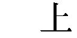
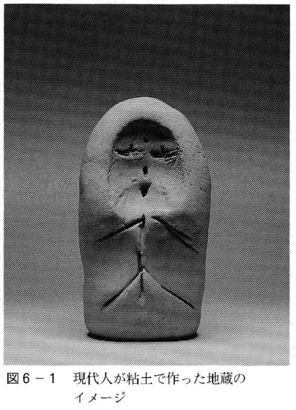
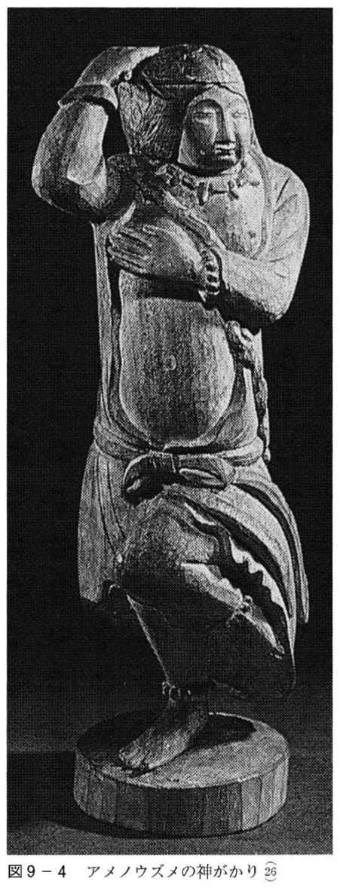

| 王権の心理学 : ユング心理学と日本神話 | |
| 織田尚生 | |
| (1990) | |
王権の心理学
ユング心理学と日本神話
織田尚生
＊この電子書籍は、縦組みの底本を元に作成しました。
＊原著の「精神分裂病（者）」は原則として「統合失調症（者）」に変更しています。
王権の心理学 目次
第１章 神話と心の危機
国家や国民の存立を基礎づけ、支えるために神話を必要とするならば、個人にとっても生きるための神話が要求される。しかも、統合失調症のような非常に大きな心の危機においてこそ、集団の神話と類似の、あるいはそれと共通の構造をもつ神話が存在するのではないか。本章では、神話とは何かということについて検討し、国家の危機に対処するための日本神話成立の歴史的背景について論じ、さらには統合失調症者の神話を理解するための方法についても述べることにしよう。
１ 神話とは何か
「神話」という言葉について、ここで少し詳しく考えておこう。神話学者ケレニーはユングとの共著『神話の科学』（１）の中で、「あらゆる事物は神話的な出来事に基礎を置いているので、神話は世界を基礎づける」（２）と述べた。現代わが国の神話学者である吉田敦彦と松村一男は、「神話とは、世界や人間や文化の起源を語り、そうすることによって今の世界のあり方を基礎づけ、人々には生き方のモデルを提供する神聖な物語である」（３）と定義している。吉田らの定義はケレニーの考えと共通するものであるが、神話の本質を的確に説明している。このような定義はたとえば、ポリネシアの宇宙起源神話やギリシア神話、さらにはわが国の古事記や日本書紀に該当し、神話学が扱う狭義の神話である。
神話という言葉は、幻想（イリュージョン）という意味で使われることがある。たとえば、航空機事故によって「ジャンボ機は安全だという〝神話〟が崩壊した」などという。このとき、神話は幻想という言葉とほとんど等価となる。ジャンボ機が墜落することによって、その安全だという考えは真実ではなく、単なる幻想であったということが証明されたわけである。しかし、幻想によって人々が安心して航空機を利用していたわけだから、事故以前は幻想が力をもち、その意味での神話や幻想も、ある種の真実を表現することになる。すなわち、心理学の用語を用いるならば、神話もまた心的現実なのである。ここでいう「神話の崩壊」は、神話の生や死や変容を考えさせてくれる。現代人が生きるための現代の神話は、容易に生まれまた死んで行くが、それらは科学技術の進歩や平和あるいは健康など、現代社会で優先的な価値を与えられるものと結びついていることが多い。神話が死ぬとき、神話を語る人にとって、その物語は真実から虚偽へと変容するといえよう。
幻想という意味の神話を、広義の神話として定義しよう。今まで述べてきたように、このとき神話は、知的合理性をもって判断すれば真実ではないが、その神話を語りまた共有する者にとっては真実である。しかし、狭義の神話と広義の神話を問わず、神話は幻想という側面を有している。ただ、筆者の定義する狭義の神話がしばしば国家や民族によって時代を超えて共有されるのに対して、広義の神話はもっと個人的なものであり、容易に死んで新しい神話が生まれる。われわれが生きる現代は、国民共通の神話を持ち難く、各人が個人としての神話を自ら発見し、それを生きるべく求められている時代であろう。戦後の三〇年、経済的な豊かさの追求は国民が共有可能な神話であった。しかし、七〇年代後半以降それは色褪せたものとなった。われわれはそれに代わる国民共通の神話を、いまだ見出していない。たとえば、「生きた神話」としての宗教を支えとする小宗教団体に所属する人が増え、他方では内なる神話を発見し、そして意識化しようとするユング心理学などに対する関心が高まっている、と考えることができる。
２ 統合失調症と神話
私たちが順調な生活を送っているとき、神話を意識することはなく、生の根底が神話によって支えられていることに気づかない。しかし、統合失調症によって心の危機に遭遇するとき、人は神話を生きることを強制される。このとき病者が生きさせられる神話は、ハイテクや平和や平等の神話ではなく、心のさらに深層に由来する神話である。
筆者は、精神科医として専門病院に赴任し、多数の入院および外来の統合失調症者の担当医となったとき、治療の進め方について当惑せざるを得なかった。とくに入院患者に対したとき、病者と意思を疎通させることが、少なからず困難であったからである。幻覚や妄想や自閉に支配される統合失調症者に対して、抗精神病薬を用いてそれらの症状を改善せしめることによって疎通性を回復させるのは、精神医学領域で一般に用いられている方法である。現在では多数の精神薬物が開発され、それらは幻覚や妄想に対して有効であるが、無為自閉症状に関しては、なお充分な効果を上げ得ない。また自立して社会生活を送る能力が障害される場合や、比較的些細な負荷を契機として、症状が再燃する可能性を残すのも問題である。これらの諸課題に対して、抗精神病薬による治療は限界があるといえよう。
統合失調症に対する治療において、抗精神病薬療法と同様に大切なものは、心理療法的働きかけと、リハビリテーションである。精神医学的リハビリテーションによって地域社会の中で病者が回復を図る必要性は、この方面の努力がわが国で、欧米諸国に比べて大きく立ち遅れていることからも、強調されなければならない。他方心理療法的働きかけは、人と人との関わりの回復を目ざすという意味で、薬物療法とリハビリテーションとを問わず、それらの援助の方法の基礎にもなるものである。
これまで、統合失調症者が如何なる神話を生きているかについては、精神病理学によって、「思考に関する連合の弛緩」（４）（ブロイラー）、「自閉」（５）（ブロイラー）や、「自我体験の障害」（６）（シュナイダー）、さらに「現実との生ける接触の喪失」（７）（ミンコフスキー）というような症状のレベルでしか語られなかった。統合失調症者の諸症状のさらに深層にあって、症状を形成する基礎構造については、なお未開拓の分野が残されている。統合失調症者の内的世界の構造を、深層心理を研究する方法としてのユング心理学や現代の神話学や文化人類学の知見を援用しながら、筆者の臨床経験を縦糸として述べようとするのが、本書の目的のひとつである。そして、統合失調症者の困難を危機の心理学として理解することによって、統合失調症の治療学のためのみならず、程度の差こそあれ、ともすれば軽い統合失調を生じやすい現代に生きる、われわれのための知恵を学ぶことが、さらに大きな目的である。なお、ここで付言しなければならないことは、精神医学や臨床心理学の目的は、あくまでも病者の回復と彼らの利益であり、病者の心理の追究は、彼らの治療に直ちにフィードバックされるものでなければならない。
３ イメージについて
一九七〇年代の前半から後半にかけて、精神科病院において主治医として多数の統合失調症者の治療を担当した者として、その経験が本書執筆の出発点となっている。病棟の中の面接室へ病者に来てもらい、向き合って椅子に座ったとき、彼らの言語の量が極端に少なく、また言葉でもって心を語ることが非常に困難であることに気づかされた。精神病症状の背後にある彼らの言語が、日常の言葉とは相当隔った深層の神話の規則に支配されたものであることが、当時筆者はほとんど理解できなかった。病者の長く続く沈黙、あるいは筆者には理解困難な言葉の羅列は、彼らを援助するために一五分から六〇分までの定期的な面接を試みた治療者に無力感を抱かせるものだった。そこで、描画によって表現されるイメージが病者の心を理解する助けになり、結びつかない治療者と病者の心を直接的に連結する媒介となるのではないかと考えられた。絵画を用いた美的な表現を得意としない筆者が、自由画を媒介手段としたことは興味深いが、描画のもつイメージ表現としての治療促進作用に、直感的に気づいていたからであろう。
イメージは、深層心理学、なかでもユング心理学において重要視されている。ここで、イメージのもつ心理機制について、筆者の考えでまとめておこう。これらは、深層心理学の視点から見たものである。
㈠ イメージ（心像）は視覚的なものであるが、その形成のためには、知覚のみならず内的世界の関与を必要とする。
㈡ イメージは非合理的な感情や情動を伴っており、合理的な知性や理性に支配されるものではない。
㈢ イメージは現実と非現実、意識と無意識という対極的で二分される両領域の関わりによって成立しており、それがシンボル（象徴）として機能することによって、分裂した心の諸領域を統合する働きをする。しかし、ときには統合に失敗することも、逆に分裂を促進することもある。
㈣ イメージ内容を意識化しようとするとき、因果律のみでなく、有効な手段としてアナロジー（類似性）が用いられる。
統合失調症者の絵画表現が、どのようにおこなわれたかについて述べておこう。個人の面接中に治療者と向きあって描画がおこなわれた場合もあるが、七ないし八名の集団で描画をおこない、その際の絵画表現を、後の個人面接時に検討するという方法もとった。後者の場合でも、描画グループの成員は、筆者が治療を担当している病者のみで、その場に必ず治療者としての筆者が同席した。描画のために白色の画用紙の他に、鉛筆・クレヨン・水彩絵具が用意されたが、病者はほとんどの場合クレヨンを使用した。
病者の表現した描画を媒介として、治療者が統合失調症者と対したとき、前者が感じた気まずさが軽くなる思いがした。寡黙な統合失調症者でも描画内容については語ってくれ、まとまりなく非現実的な事柄を話す病者でも、自ら描いた表現について語るときには、言葉はたちまち生命を帯びた。この関係は図一─一のように表わすことができよう（８）。すなわち、治療者と病者との間は言語のみによる面接では断裂しており、関わりの可能性しかもてなかったが、描画によるイメージ表現を媒介とすることによって、両者ははじめて関わりを成立させることができる。言語のみによる面接が非現実的な関わりによって構成されているとすれば、イメージに媒介されることで、その関わりは現実的なものとなるともいえよう。
４ 絵画表現と統合失調症
統合失調症者の表現心理を研究しようとするとき、病者が正常者といかに隔っているか、つまり病者を正常から偏奇したものととらえ、どのような点が異常であるかという点に焦点を当てる方法がある。これは精神病理学的な方法である。このような方法論によるものとしては、オーストリアの精神科医プリンツホルンによる研究が有名で、彼はヨーロッパ各地の精神病院から統合失調症者の描画作品を蒐集し、それらがいかに正常者の作品と違うか、またどのような点で異なっているかを調べた（９）。作品が精神病理学的な興味や関心の下に集められたものであって、治療的な関わりを媒介する目的で描画されたものでない点に大きな特徴がある。プリンツホルンは統合失調症絵画の特徴を列挙しているが、それらは本書にとって重要でないので、ここでは省略する。
心理療法の技法として絵画表現を取り上げるようになるのは、アメリカのナウムブルク女史の活躍を待たなければならなかった（10）。彼女は病者あるいは来談者の描画作品を精神病理を発見する材料とすることなく、作品による表現を通して治療者と病者が関わるための手段とした。彼女らの活動の結果、アメリカにおいて絵画療法は発展し、職業としての絵画療法士も活躍している。
わが国の精神病理学者宮本忠雄がこの方面の研究でなした貢献は忘れることができない。彼は画家ムンクの「太陽」と題する壁画を出発点として、統合失調症における絵画表現と精神病理との関連性について論じた（11）。妄想性精神病に罹患していたと考えられるムンクは、統合失調症状態からの回復とともに太陽を描いた。宮本は、世界に唯一個しかなく全生物の生命の源でもある太陽を中心的なものと考え、太陽を中心イマーゴと呼んでいる。そして、統合失調症者の病理を、世界が自分を中心に展開すると考える中心化の現象としてとらえた。また彼は、ムンクが病期から回復する時期に中心イマーゴである太陽を描くことによって脱中心化を果たすという点に、意義を見出している。以上のように、宮本の精神病理学的考察は、充分に示唆に富むものである。他方筆者は後に述べるように、太陽イメージの投影という心理機制を重視する点、さらには宮本の認めない中心のイメージ（太陽）の複数性を強調する点で、見解を異にしている。
描画を用いた統合失調症心理の研究として見落とすことのできないものは、わが国の精神医学者中井久夫によるものである。宮本がすぐれた精神病理学者であるのに対して、中井はすぐれた臨床家であることに特色がある。中井は統合失調症患者に対して描画を用いた治療的接近をおこなった。なかでも、病者が急性統合失調症状態から寛解過程へ移行する時期を臨界期（critical period）と名づけ、その意義を強調したのは大きな業績である。この時期は不安が強くなったり、下痢や便秘や不明の発熱を生じるなど、精神的にも身体的にも不安定であるが、急性統合失調症状態からの回復の転機になるもので、精神療法的働きかけの好機でもあるという（12）。中井は統合失調症者の回復過程の研究を、精緻な臨床観察と描画を用いておこなった。筆者は研究対象を統合失調症に限定せず、さらに創造神話と対応させながら、心理療法家の視点で検討する。以下の各章では、臨床所見のほかに、描画についての深層心理学的理解と神話学の知識を援用することによって、われわれの心に内在する危機克服の構造を、一般化することによって把握しよう。
５ ユング派からのアプローチ
フロイトが主として、自由連想内容を検討することを通して面接をおこなったのに対して、ユングが夢分析を用いたのは有名である。しかし、ユングが描画分析を重要視したのは、それほど知られていない。彼は長い自己分析の過程において継続的に描画をおこなったが、クライエントに対しても、描画をすすめている。ユングの研究協力者であったリリアン・フレイは筆者に、彼女のユングによる教育分析の開始当初から、描画をすすめられたと語っている。それでも、ユング全集に収録された描画を用いたケース研究においては、統合失調症圏の病者は含まれていない。
ユング派の諸学者の中で、描画を用いて統合失調症者に対する治療をおこなったのは、心理療法家としてのみならず精神科専門病院の院長としても重要な貢献をしたフィールツであった。彼は著書の中で、数例の統合失調症圏の病者における急性統合失調症状態に触れている（13）。フィールツの記述は直感的で、充分に整理されたものではないが、この方面の研究のパイオニアとして、重要な役割を果たした。彼は、まだ統制のとれた行動のできない病者が病室の壁にマーマレードを塗りたくったものさえ、描画としてとらえようとしたのである。フィールツの最大の業績は、急性統合失調症状態の絵画表現を病者の心の中心的なものの表現としてとらえ、それをユングの分析心理学における自己（セルフ）のイメージと考えた点にある。フィールツの研究は体系化されていない点でも、描画内容の背景をなしている神話についてわずかしか語られていないところからも不充分であるが、次に述べるペリーの研究の基礎になっている。
精神科医であってユング派の分析家でもあるペリーは、統合失調症者の回復過程の内的構造を研究し、大きな業績をあげた。病者の回復過程を理解するために、ペリーも描画を用いている。イメージの世界を通して、彼は内的なコスモスを考え、とくに世界の中心のもつ意義を強調した。この点はフィールツの考えと共通している。また急性期の統合失調症において、原初の時代に退行することの意義を述べている。このような退行と進行のプロセスが、ユング心理学で用いられるセルフ（自己）の再構成のためにおこなわれるという（14）。ペリーはこの方面の研究を基礎づけたが、彼の意見には賛成し難いところもある。ペリーが取り上げるケースは、いずれも若い急性期の統合失調症者で、緊張病あるいはそれに近いタイプの統合失調症者であって、比較的予後のよい病者を選んで心理療法がなされている。さらに、統合失調症者の内的世界の建設的側面が強調されるあまり、破壊的な面が述べられていないのも問題である。なお本書は最終章で、よりくわしいペリー批判をおこなうことになる。
神話に関する心理学的研究という面から見れば、『意識の起源史』を著わした分析心理学者ノイマンをも取り上げなければならないだろう。彼は人類の意識発達を、ポリネシアなど諸国民の神話の中に跡づけ、さらにはその過程を個人の心の発達と重ね合わせようとした（15）。ノイマンは、統合失調症者の心理あるいは治療について直接言及しているのではない。しかし、自らの尾を噛む蛇のイメージ（ウロボロス）（図十一─一参照）で表現される未分化な世界、すなわち混沌の状態から、漸次自我が発生しそして成長するという基本的な視点においては、統合失調症者の回復過程を考える上でも、彼は共通のものを提供している。統合失調症者の場合には、後に詳しく述べるように、統合失調症性の危機によっていったん混沌の世界に退行したものが、再び意識発達の過程を繰り返すのである。なお、本書では心の危機の例として主に統合失調症を取り上げるが、神経症者でも正常者でも、危機とその克服過程の基本構造においては、相違するものでないことが強調されなければならない。
６ 日本神話の特徴
ノイマンの神話を用いた自我発達に関する研究、さらにはペリーの統合失調症回復過程の研究においても、さまざまの神話的なモチーフについて論じられている。しかし、それらはある民族の神話について、集中的かつ体系的に論じたものではない。神話というものに人間心理の普遍的な構造を見る立場からすれば、各民族の神話を適当にピックアップすることによって、そのモチーフを論じても差つかえないが、神話を空間的および時間的の両系列について連続的に検討しようとするならば、特定の神話をインテンシブに研究することの意義は軽視できない。神話学者松村武雄が指摘したように、日本神話はすぐれて系譜的である（16）。これには、後述のような皇室の政治的な意図が関与していたが、地理的な関係もあって最近まで他民族に征服されることがなく、八世紀に成立した古事記や日本書紀がよく今日まで保存されており、神話の破壊や変形がなされなかったということも、関係しているだろう。
ここで、日本神話成立の事情について述べておかなければならない。われわれ一人ひとりが生きるために何らかの神話を必要とするように、国家や民族にとっても神話がその存在を根底において支えるものである。とくに国家の存立の危機において、あるいは国の政治的な統一や独立に際して、神話が必要とされる。たとえば、スイス独立のために戦ったウイリアム・テルが我が子の頭にリンゴを乗せ、それを的にして弓を射た話はスイスの小学校の教科書にも載っており、わが国でも有名な話であるが、スイス人にとっても史実ではなく、伝説つまり広義の神話とされている。筆者が日本神話と漠然と呼んでいるのは、主として古事記・日本書紀そして風土記という記録された神話である。なお、神話との関連の下に、折に触れて昔話や伝説をも取り上げることにしよう。
わが国では、七世紀の初頭六二〇年、聖徳太子が蘇我馬子と話し合って、最古の歴史書である天皇記および国記、さらには諸氏族らの歴史を編集したという。歴史学者直木孝次郎によれば、天皇記は系譜を中心とする歴代天皇に関する記録であり、国記は日本の国全体の歴史、たとえば建国の由来、国政の発展、大陸諸国との交渉等を記したものであると推定されている（17）。右のような聖徳太子らの歴史編集の記事が『日本書紀』に見られる（18）が、両書ともに今日には伝わっていない。古事記・日本書紀・風土記はいずれもこの頃から約一世紀後の八世紀前半に完成する。聖徳太子による天皇記や国記は、それらの先駆けとなるものであっただろう。六世紀末から七世紀前半にかけての時代は、天皇家は大和の豪族である蘇我氏に政治の実権を握られていた。五九二年、時の崇峻天皇は蘇我馬子に殺害された。皇室にとって、七世紀初頭は、国内政治の面で存亡の危機にあったといえる。
近隣諸国との関係に目を転じてみよう。まず、六世紀後半（五六二年）に至って、三世紀以来わが国が直轄地としてきた南朝鮮の任那が新羅によって滅ぼされている。しかしその後も新羅征討のために、七世紀初頭にかけて三度の半島出兵が試みられた。この時代の国際関係は、朝鮮半島のみでなく、大国であった中国が大きなウエートを占めていた。政治や軍事のみならず文化的にも圧倒的な影響力を有していた隋に対して、聖徳太子を中心とする朝廷が皇室と国家のアイデンティティを確立しようと努力した有様を、歴史からうかがうことができる。たとえば、六〇七年、太子は小野臣妹子を使者として第二回遣隋使を送ったが、国書に「日出ずる処の天子、書を日没する処の天子に致す。恙無きや」と記されていたという。このように、国家として対外的な危機に対処し、その独立を保とうとするとき、神話を含む歴史の編集が企画されたのである。
７ 古事記と日本書紀の成立
七世紀の後半、六八一年に天武天皇は稗田阿礼や川島皇子らに命じて、歴史編纂の事業を始めた。歴史とは古事記と日本書紀を指すのである。両書編纂のための資料は現在残されていないが、それらは六世紀に作られた帝紀および旧辞である。帝紀（天皇記）とは歴代天皇の名前や治世にまつわる事件、后妃子女の名、さらには陵墓の所在地などを記録したものという。旧辞は神話や伝説の類である。天武天皇が神話を含む歴史を編纂する目的は、古事記の序文にあるように、邦家の経緯、王化の鴻基を確立することにあったであろう。つまり天皇や編集にたずさわった人たちは、神話と歴史をまとめることが、国家の精神的な骨格を形成し、皇室の支配権を確かなものにするために不可欠と考えたのである。さらに、この時代の歴史的背景について考えてみよう。
国内政治の面では、これより九年以前になる六七二年、皇室内の権力争いのために内乱（壬申の乱）が生じ、天智天皇の皇太子大友皇子を叔父の大海人皇子（後の天武天皇）が破って皇位に就いた。壬申の乱について直木孝次郎は、次のように述べている（19）。乱は皇位継承の争いを直接の原因とするが、それが日本の中心部を舞台とする内乱に発展し、しかもその結果は反乱者側の一方的な勝利に終わり、国家権力を握っているはずの朝廷側がみじめに敗れ去ったことには、大きな政治的・社会的背景があった。すなわち、租税の重いことなど民衆の不満を吸収した地方豪族の力によって、反乱軍が勝利したのである。歴史学者のこのような分析の当否にかかわらず、当時の朝廷による国内統治が決して安定した状態になかったことは確かであろう。なお、これより少し前六六〇年には、阿倍比羅夫による北陸地方の蝦夷の征討がおこなわれている。
他方、時代の危機的状況は国内の政治局面に限局するものではなかった。すなわち国際的にも動きが急であり、天武天皇の記紀編纂着手に先立つこと二〇年の六六一年には、唐と新羅の連合軍の攻撃によって滅亡に頻した、南朝鮮の百済からの救援の求めに応じて、斉明天皇は半島に出兵した。斉明天皇の急死と跡を継ぐ中大兄皇子（天智天皇）が派遣したわが国の兵数は三万二千人に達したという。直木の指摘の通り、国運を賭した大出兵であった。そして六六三年、白村江において、唐・新羅連合軍対日本・百済連合軍の戦いがおこなわれ、日本側の全面的な敗北に終わったのである。百済はここに完全に消滅した。この敗戦による危機的状況に対処するために、天智天皇は新しい冠位の制度を作るなど、国内制度の立て直しが必要であった。さらに、日本本土への唐の来襲に備えて九州太宰府に巨大な堤防（水城）を築き、対馬・壱岐・筑紫に、辺境を守る軍隊である防人を置いた。このように、天武天皇とそれに先立つ天智天皇の時代は、対外的にも危機的状況を伴う激動の時代だったのである。七世紀のわが国が、隋・唐の律令制度を模範として朝廷を中心に中央集権の政府を作りながら、しかも圧倒的に強大な中国の文化的および軍事的影響から独立を保つことは、難事業であったであろう。
天武天皇の下命で編纂を始めた記紀であるが、まず七一二年古事記が、そして七二〇年には日本書紀が完成した。風土記については、次のような事情で編纂がなされている。つまり、朝廷は七一三年、七世紀の中大兄皇子以来進めてきた公地公民の原則による中央集権の実をあげるために、地方史編纂を企図したのである。風土記の内容として、各地の産物を挙げることや山川原野の名称の由来、さらには古老の相伝する旧聞異事（伝承）を記録して報告することが命じられている。官命によって編集された風土記のなかで現存するものは、出雲国風土記を含む五風土記である。地方の伝承として記録されているものの中には、たとえば出雲国風土記におけるヤツカミヅオミツノによる国引きのようなよく知られた説話も含まれている。
８ 神話のもつ破壊性
われわれ個人にとって神話が必要であるように、国家の独立にとっても神話の存在を欠くことができない、ということを述べてきた。とりわけ、個人や国家がそのアイデンティティにおいて危機的状況に置かれたとき、人は強く神話を求めるのである。この場合の「神話」は、必ずしも狭義の神話を指すのではなく、幻想（ファンタジー）を意味する広義のそれである。人間もまた人間が作り上げる国家も、その存在を根底のところで支えるものを要求する。このように人の心の深層とかかわりを有する神話は、常に建設的に機能するかのように考えられるが、本来創造性のみならず破壊性をも包含するものであろう。われわれが神話を取り扱う態度によって神話のもつ機能が変わってくるのはもちろんであるが、神話そのものが建設性と破壊性との両側面をもつと考えることができる。
一九四二年、『古事記及び日本書紀の新研究』など日本神話に関する研究で有名な津田左右吉は、「神武天皇から仲哀天皇に至る、歴代天皇の存在に疑いを抱かせるおそれのある学説によって皇室の尊厳を冒涜する著作をした」という理由で、東京刑事地方裁判所の法廷で有罪の判決を受けた（20）。第二次大戦当時、古事記と日本書紀は、国家的聖典として神聖不可侵の典籍とされ、批判を許されないものであったという。津田はその後戦後になって、神武から仲哀に至る一四代の天皇のうちで、一〇代から一二代までの崇神・垂仁・景行の三天皇については、実在の可能性を認めたとされている（21）。しかしいずれにしても、津田の文献批判による歴史研究の態度は科学的なものであり、その後の古代史研究に決定的な影響を与えた。神話が極端な国家主義に結びつくとき、自由な神話研究をも許さなかったわけである。さらにいえば、神話を取り扱う者の態度が自由を失うとき、歴史と神話との区別ができなくなり、神話を無理に歴史に変えてしまう。また、すでに述べたように、神話そのものに破壊性が内在していると考えられる。なお、神話を神話として見る立場からすれば、津田は神話に対して歴史学の視点から批判を加え、神話固有の価値を認めることができなかった（22）。
神話は聖なる物語であるから、しばしば宗教に結びつく。たとえばキリスト教系でアメリカに本部がある宗教「ものみの塔（エホバの証人）」では、聖書に書かれてあることを忠実に守るとして、輸血を拒否することで有名であって、そのために生命を失うことがあり、新聞に報道されて注目を集めた。個人は信仰の自由をもっており、価値基準もさまざまであるので、多数のいわゆる常識をもって、軽率に批判をすることはできない。しかし、人間の肉体的生命に重きを置く立場からすれば、神話としての聖書に従おうとして死を招くことは、神話に内在する破壊性に由来する出来事だと考えてよいであろう。もちろんこの場合、神話に対する信者の意識的な態度にも問題はあろうが、自我のとる態度にのみ責任が負わされるべきではない。ヘブライ神話としての聖書そのものに、ある種の破壊的な強制力が内在していると考えられる。「血を抜いていない肉を食べてはいけない」という教えを、「他者の血液を体内に入れてはいけない」という戒律として守ることは、キリストの再生やマリアの処女懐胎を信じることと、神話のもつ強制力に関しては共通であろう。
「困ったときの神頼み」という言葉が語っているように、われわれは危機においてこそ、宗教、あるいはそれに代わる神話を必要とする。しかし、神話は心の支えになるばかりでなく、ときには、われわれの自我を把えて身動できない状態にさせる魔力を備えている。筆者は以下の各章に、統合失調症性の侵襲によって圧倒的な心の危機に陥った病者が、いかなる神話を支えにして危機的状況を脱するか、その基本構造を述べようとしている。わが国の神話編纂者らは、古代において皇室の統治の正統性を主張しようとして、古事記序文にあるように、帝紀と旧辞を削偽定実した。編纂者らのこのような態度は、科学的で歴史的な態度ではないが、神話学者松村武雄の指摘する（23）ように、編纂者の態度もまた神話の心に支配されていたはずだから、記紀を系譜的な神話と見ることができる。したがってそれらは、体系的な危機克服過程の構造を示すものとして検討するに価する有用な資料になると考えられる。
第一章 引用・参照文献および註
（１） Jung, C.G., Kerényi, C.,"Essays on A Science of Mythology," Princeton University Press,1949.
（２） ibid. pp.6-7.
（３） 吉田敦彦・松村一男『神話学とは何か──もう一つの知の世界』三頁 有斐閣 一九八七年
（４） Mayer-Gross, W., Slater, E., & Roth, M.,"Clinical Psychiatry,"（Third edition）pp.264‐265, The Williams & Wilkins Company,1969.
（５） Bleuler, E.,"Lehrbuch der Psychiatrie.,"（Elfte Auflage, umgearbeitet von Bleuler, M.）, p.378, Springer-Verlag,1969.
（６） Schneider, K.,"Klinische Psychopathologie,"（Sechste, Verbesserte Auflage）（平井静也・鹿子木敏範訳『臨床精神病理学』一三五～一四五頁 文光堂 一九六七年）
（７） Minkowski, E."La Schizophrenie, Psychopathologie des Schizoides et des Schizophrenes"（Nouvelle edition）（村上仁訳『精神分裂病』七〇～七八頁 みすず書房 一九六九年）
（８） 織田尚生『心理療法の構造』（挟間秀文・織田尚生編『精神衛生』二二九～二三六頁 日本放送出版協会 一九八九年）
（９） Prinzhorn, H.,"Arts of the Mentally Ill," Springer,1923.
（10） Naumburg, M.,"Schizophrenic Art, Its Meaning in Psychotherapy," Grune & Stratton,1950.
（11） 宮本忠雄「太陽と分裂病──ムンクの太陽壁画によせて」（木村敏編『分裂病の精神病理３』二三三～二六三頁 東京大学出版会 一九七四年）
（12） 中井久夫（一九七四年）「精神医学の経験 分裂病」『中井久夫著作集 第一巻』一一五～一八〇頁 岩崎学術出版社 一九八四年
（13） Fierz, H.K.,"Klinik und Analytische Psychology," Rascher Verlag,1963（加藤清・吉本千鶴子訳『臨床ユング心理学』海鳴社 一九七七年）
（14） Perry, J.W.,"The Far Side of Madness," Prentice-Hall, Inc.1974.
（15） Neumann, E.（1949）,"The Origins and History of Consciousness," Princeton University Press,1973.
（16） 松村武雄『日本神話の研究 第一巻』九八～一〇一頁 培風館 一九五四年
（17） 直木孝次郎『日本の歴史２ 古代国家の成立』一一三～一一六頁 中央公論社 一九七三年
（18） 坂本太郎・家永三郎・井上光貞・大野晋校注『日本書紀 下』（日本古典文学大系68） 二〇三頁 岩波書店 一九六五年
（19） 前出書『日本の歴史２ 古代国家の成立』三〇七～三三九頁
（20） 井上光貞『日本書紀上』九頁 中央公論社 一九八七年
（21） 井上光貞『日本の歴史１─神話から歴史へ─』二七五頁 中央公論社 一九七三年
（22） 津田左右吉『古事記及日本書紀の研究』岩波書店 一九二三年
（23） 松村武雄 前出書 一九～二〇頁
第２章 混沌と退行
何らかの心的危機に対処するために、われわれの心はどのような反応を示すだろうか。生体に細菌が侵入するとき、血液中のリンパ球が増加し、リンパ球によって細菌を破壊して疾病から回復を図る、われわれの身体に内在する過程がある。身体ではなく心に侵襲を受けるときにも、身体の自然治癒過程と同様のプロセスが生じる、と仮定することができる。しかも、感染症においては、細菌の種類や侵される身体部位の如何にかかわらず、細菌に対する反応機序には共通のものがあるが、心の世界においても、侵襲に対処する心の反応過程には、侵襲の種類は違っても相当部分の共通性があるだろう。したがって、心に何らかの侵襲が加わるとき、それを心的危機とみなし、その普遍的な克服過程を研究することが、本書のめざす危機の深層心理学的研究となる。
さて、個人が圧倒的な危機に遭遇するとき、それまで形成されていた心の中の世界の構造は破壊され、混沌とした状態になる。集団が危機に陥ったときの対処の仕方は、国家あるいは王権の危機とその克服過程として、創造神話に物語られている。本章では混沌について語っているわが国の創造神話の冒頭の部分と、統合失調症者の混沌の世界について述べることにしよう。個人と集団の、危機における共通の深層構造を把握することによって、心の危機とその治癒過程の深層についての理解を深めるためである。
１ 神話における混沌
わが国の創造神話は、源初の混沌から新しい生命が生まれる過程を、次のように表現している。古事記の冒頭の部分である。
天地初メて発りし時、高天ノ原於成りませる神ノ名は、天之御中主神。次に、高御産巣日神。次に、神産巣日神。此ノ三柱ノ神者、並に独神ト成り坐し而、身を隠しましき。
次に、国稚く浮ける脂ノ如くし而、久羅下那州多陀用弊流時、葦牙ノ如く萌騰る物に因り而成りませる神ノ名は、宇摩志阿斯詞備比古遅神。次に、天之常立神。此ノ二柱ノ神亦、並に独神ト成り坐し而、身を隠しましき。
上ノ件ノ五柱ノ神者、別天つ神。
次に、成りませる神ノ名は、国之常立神。次に、豊雲野神。此ノ二柱ノ神亦、独神ト成り坐し而、身を隠しましき。（１）（２）
世界各地の創造神話において、世界の初まりは混沌を出発点としている。混沌はさまざまに表現されているが、右に取り上げた古事記冒頭では、それは浮ける脂の如くとも、くらげのようにただよっているとも、表現されている。また、七番目に生じた神格であるトヨクモノも、その雲を含んだ神名から、混沌の表象と関係があろう。
古事記と並んでわが国の代表的な神話書である日本書紀においては、中国の淮南子などの古伝承の表現を借りて天地の生成を語った後、さらに実体的な言葉で、混沌からコスモス（宇宙）が形成される過程を物語る。それは、左記の通りである。
故日はく、開闢くる初に、洲壌の浮れ漂へること、譬えば游魚の水上に浮けるが猶し。時に、天地の中に一物生れり。状葦牙の如し。
便ち神と化為る。國常立尊と號す。（３）（４）
日本書紀では、混沌の様子を、水に魚が浮かんでいるようだという。古事記と日本書紀のいずれにおいても、世界が始まる前には、定形のない状態であったことが語られている。
混沌の存在はわが国の神話に限らない。ヘブライ神話としての創世記は、混沌からの世界の創造の第一日を、次のように描いている。
初めに、神は天地を創造された。地は混沌であって、闇が深淵の面にあり、神の霊が水の面を動いていた。神は言われた。「光あれ。」 こうして、光があった。神は光を見て、良しとされた。神は光と闇を分け、光を昼と呼び、闇を夜と呼ばれた。夕べがあり、朝があった。第一の日である。（５）
創世記でも、原初は混沌であった。ここでは、闇と光との対極的な存在を、夜と昼との分離に結びつけて説明し、続いて第二、第三の日に、それぞれ天地の分離、地と海の分離がおこなわれる（６）。しかし、世界の創造が混沌を出発点としている点では、記紀の神話とヘブライ神話とは共通している。
２ 統合失調症者と混沌
われわれが大きな危機に遭遇したときには、確固としてゆるぎないはずの大地も動揺する。三〇歳代の男子銀行員が、身体に器質的な問題がないにもかかわらず、神経症症状として大地が揺らぐ体験を繰り返したことがあった。統合失調症者の場合には、さらに容易に内的世界の動揺が生じる。統合失調症者が急性状態で、「何か大変なことが起こる。この世が破壊される」と訴えることは稀ではない。しかも、訴えない者でも、それに類似の体験の有無を尋ねると、必ずといってよいほど肯定する。ドイツの精神病理学者コンラートは、統合失調症発病時において、戦慄（Das Trema）の時期に続いて生じる、異常意味顕現の段階（Die apophäne Phase）に、世界の没落を体験すると述べた（７）。精神病理学では、世界没落体験を統合失調症急性期に認められる妄想の一種ととらえている。しかし、統合失調症者の内的世界の崩壊を恐れる不安を、心的現実と見る本書の視点からすれば、彼らの世界は統合失調症性侵襲によって、崩壊の危機に頻していると理解することができる。
統合失調症者の内的世界がほとんど完全に破壊し尽くされることは、きわめて稀である。むしろ、崩壊に頻したとき、神話の世界に退行することによって、内的世界の再構築を試みる。統合失調症の症状は了解不可能なものとして恐れられているが、自閉の状態におかれているとき、幻覚や妄想に支配されているときにも、病者は完全に現実検討力を喪失しているわけではない。神話的な退行といっても、非常に深い退行を示すときと、比較的に浅い場合がある。ここでは、混沌の段階まで退行した病者（春男氏）に触れておこう。統合失調症が軽症化したといわれている現代にあって、彼のように強い統合失調症性侵襲を受けた例は、それほど多くない。
春男さんは発病後一五年を経過し、治療開始時四〇歳の男子統合失調症者である。彼は地方出身者であったが、都会で大学卒業後、そのまま会社に勤務していた。就職後間もなく被害・関係妄想をもって発病し、居住地で精神科通院治療を受けた。しかし、はかばかしい改善を見ず、会社を退職し、出身地の地方に帰郷した。地方では自宅で農業の手伝いをし、結婚もしたが、時とともに現実検討力を失い、村の生活に適応できなくなり、妻が病気で入院したことを契機に、精神科病院に入院を余儀なくされた。つまり、誰かがたえず面倒を見ることがなければ、地域社会で暮らすことができなくなったのである。
入院時春男さんは、統合失調症性の侵襲のために、自分が病院にいることや、目の前の人間が医師であること、さらには、現在が昭和何年になるということさえ把握できず、見当識を欠く状態であった。春男さんには、精神医学でいう「連合の弛緩」が顕著に認められ、話の内容はまとまらず、言語によって彼を理解することは、ほとんど不可能であった。そこで、彼との面接時に「絵を描いてみませんか」と、画用紙とクレヨンを示すと、さっそく画用紙に色を塗り始めたが、図二─一に見られるように、まったく形をなさず、さまざまの色を無定形に塗りたくったというものであった。しかし、このような、まさに混沌としか呼びようのない描画を見たとき、春男さんの不可解な言語内容からは窺うことのできない心の世界を、イメージの形で直接的に目にすることができ、それは治療者にとって一種感動的な体験だった。前章の図一─一で述べたように、描画されたイメージは、関わりのもてなかった治療者と病者を直接的に結びつけるものである。
３ 中心の発生
混沌はたえずコスモスに、すなわち秩序と調和のある体系になろうとしている。すでに混沌について取り上げた神話の中に、葦牙（葦の芽）のような秩序の萌芽を読み取ることができる。しかも、秩序の形成のために非常に重要な役割を果たすのは、世界の中心であることがわかる。最初に古事記について、調べてみよう。
タカミムスヒ神は、古代において実際に信仰されていた神格である。本居宣長の指摘するように、ムスヒ神は「凡て物を生成する霊異なる神霊」（８）を意味する。すなわち、創造や生成を司るムスヒ神は男性的・父性的側面がタカミムスヒとなった。カムムスヒ神は、タカミムスヒ神と対をなすものとして挙げられており、女性的・母性的色彩が強い。また、この神は、八十神に殺されたオホナムヂ神を再生させるなど、出雲系の神格と深く結びついている。造化三神のうちで、もっとも本態が明らかでないのが、アメノミナカヌシ神である。
アメノミナカヌシは、わが国の古代において、実際の信仰対象とされていなかった神格である。西郷信綱はこの神格について、天の真ん中を領する神の意で、ほとんど働きをしていないのは、一種の論理的な要請にもとづいて考え出された神だからであろう、としている（９）。なお、アメノミナカヌシについては、心理学者河合隼雄の中空構造論（10）が参考になる。また、古事記（日本思想大系）の注釈が述べるように、「記紀の原型の成立する推古朝（七世紀初め）の直面した課題は、対外的には、中国王朝（この間に隋が滅亡し、唐が興る）の世界帝国的秩序の中に、自らを大国として位置づけるということにあり、その前提として、神話によってわが国の王権の正統性を示す必要があった」（11）というのも、事実であろう。そのために、論理的・構想的に、神話の体裁を整えようとしたことが考えられる。しかし、このような考察をしたからといって、アメノミナカヌシ神の存在する意義が、すべて究明されたとはいえない。つまり、そのような神格の存在を受け入れる心理学的な素地がないならば、神話する心に反してアメノミナカヌシを創作することは不可能だからである。なお、アメノミナカヌシは古事記のみならず、日本書紀の一書第四にも登場する。
松村武雄らによれば、ポリネシアの世界創成神話において、混沌を神格化したポー（Po）と虚無を表わすコレー（Kore）が充満していたとき、中心を意味する至上神イオ（Io）が生じたという（12）（13）。また、シャピロの神話辞典にも、イオについては述べられており、「イオは、マオリ人（ニュージランド原住民）にとって、単に最高の神格であるばかりでなく、同時に世界と万物の創造者であった」（14）という。このようなところにも、世界（コスモス）の中心を神格化しようとする相当普遍的な心性を、見て取ることができるだろう。さらにまた、古事記や日本書紀の神話の一部が神話編纂者が意図的に考え出したものであるにしても、その考えそのものが神話する心から出ているとすれば、それは神話と呼べるものである、とする前出の松村武雄の言葉が説得的である。つまり、コスモスの中心を、世界創造の出発点と考える思想が、古代のわが国に存在しなかったとは断定できないはずである。
中心に対して重要な意義を与える思想は、わが国にも存在したと考えられる。例として、沖縄の神話と見なされる「おもろさうし」の一節を挙げておこう。
聞ゑ差笠が
よけ よう 世 直せ
世う 直さ
又 鳴響む差笠よ
又 今日の明けとまに
又 今日の明け立ちに
又 東方に 見遣れば
又 てだが穴に 見遣れば
又 紫の綾雲
又 紫の貫ち雲
又 島中根 通り
又 国中根 通り（15）
右の一節について、『おもろさうし』（日本思想大系）注釈を参考にして考えれば、次のように理解できる。すなわち、差笠という名の神女が国または王の繁栄や幸福を願って神事をおこなうときの歌である。差笠が夜明けに東方を見ると、太陽の出てくる穴から、紫色の美しい雲が出現し、国の中心を通過する、という意味であろう。沖縄では、太陽信仰が盛んで、「てだ」は太陽を表わすと同時に、王をも意味した。日本人の心性として、中心を神格化する太陽─中心─王という図式が成立するであろう。この中心の発生の問題を、神話に即して、もう少し追求してみよう。
４ 天地分離の神話
ここで、記紀の神話に立ち帰って考えることにする。古事記では、天地の分離に際して、アメノミナカヌシを筆頭とする造化三神の出現を見る。ところで、そこには、天地の分離がどのような経過でおこなわれたかについて、物語られていない。ただ、神話を物語る播磨国風土記に、天地分離と関連すると思われる説話がある。
昔、大人ありて、常に勾り行きき。南の海より北の海に到り、東より巡り行きし時、此の土に到來りて、云ひしく、「他土は卑ければ、常に勾り伏して行きき。此の土は高ければ、申びて行く。高きかも」といひき。故、託賀の郡といふ。其の踰みし迹處は、數々、沼と成れり。（16）
右記のものは、巨人伝説の一つである。この巨人が自ら天地の分離をおこなうわけではないが、通常の人間を超える存在によって天地分離がなされる神話の不全型をなすものであろう。なお、さらに直接的に天地の分離をおこなう神的存在として、アマンシャグマあるいはアマンチューがある。松村武雄によれば、熊本県飽託郡の伝説として、次のようなものがある。昔は、天は大地の上に低く垂れていた。ある日巨人のアマンシャグマが昼寝をしていたが、目が覚めていきなり立ち上がると、おのが頭をひどく天空に打ちつけた。アマンシャグマは腹を立てて、かねて手にしていた大きな棒で、天を高く突き上げた（17）、という。さらに沖縄にも、ほとんど同様の神話がある。これは松村が、佐喜真興英の『南島説話』から引用したものである。
アマンチューという巨人は、沖縄の神話おもろさうしでは、アマミキヨまたはアマミクと呼ばれるが、天帝の命令で天城から降りて大海に最初の島を作る創造神である。この創造神に関する一説話では、次のように語られている。すなわち、「太初天と大地とは相接しており、そのために人間は、蛙のように這って歩かねばならなかった。アマンチューがこれを憐んで、ある日堅い岩を足場にして、両手で天を支えつつ、すくっと起ち上がって、これを高きに押し上げた。かくして、天と地とが遥かに相隔たり、人間は直立して歩き得るに至った。アマンチューが突立った堅い岩は凹んで、そこに、この神の足跡が残ったという」（18）。これまで、三つの神話を述べてきたが、それぞれを中心の問題との関連で、検討してみよう。
播磨国風土記の説話は、すでに述べたように、創造神による天地分離説話の不全型である。熊本県と沖縄県におけるアマンチュー（アマンシャグマ、アマミキヨあるいはアマミクとも称せられる）の天地分離は、天を突き上げる手段として棒と両手の相違はあっても、同じ構造を示している。筆者の考えでは、アマンチューは「天ん中」であり、天の中心、あるいは中心の神格という意味を体現している。こうして、天地分離の説話が、中心の主題に結びつくのである。
ところで、ニュージランドのマオリ族の創造神話は、天地分離型の神話の構造を詳細に物語っており、本書におけるコスモス変容のテーマとも密接に関係しているので、次にディクソン編集の神話全集から、引用しておく。
マオリ族における天父神ランギは、彼の下に横たわっていた大地の神パパーツーアーヌク（以下のパパと同じ）に対して愛情を抱き、パパの方へ降りて来た。そのとき、完全な暗闇が支配していた。太陽も月も星も雲も霧も存在しなかった。大洋の表にはさざ波もたたず、風はそよともそよがず、まったく静かであった。そして、ランギは、大地の神パパが裸であったので、彼女の裸体を覆うために、植物や樹木を植えた。そして、さまざまの種類の植物に合ったあらゆる虫類と、エビやカニなど多くの生き物に、居場所を与えた。それから、ランギは、地母神パパの上にぴったりくっつき、彼女を両腕に堅く抱きしめた。
ランギはこのようにパパの上に横たわっていたので、二神から生まれた子どもたちは、大神も小神も、彼の巨大な体の下に閉じこめられ、暗黒の中に集まり、束縛された状態で暮らしていた。ランギーヌイ（ランギに同じ）がパパーツーアーヌクを完全に覆ってしまったので、あらゆる生き物が成長することができず、果実をつけることもなかった。生き物は不安定な状態にあった。それらは暗黒の世界の中に漂っているような状態にあった。つまり、ある者は這っており、ある者は両腕を束縛されて直立し、ある者は側臥位や仰臥位になり、ある者は身をかがめ、ある者は頭を垂れ、ある者は両足が引きつり、ある者は膝行し、ある者は暗闇の中であちこち触ってみることを試みた。彼らはすべて、ランギとパパの抱擁の中にいたのである。
そのため、神々は長い間、暗黒の中で暮らした。しかし、とうとう彼らは、状況をもっとよくしようと思うようになった。この目的のために、神々はランギを高く持ち上げることを計画した（筆者訳）。（19）
以上、天地分離に関するマオリ族の神話の前半部分を引用してきた。コスモスの創造と変容の過程において、この作業は画期的な事業であるので、ディクソンがグレイ（一八五五年）の原典から引用した後半部分の神話を、左に載せておこう。これは、ノイマンがアンダーソン（一九二八年）から引用した説話（20）とほとんど同じであるが、天地分離後の状況も物語っており、その点示唆するところが大きい。
５ 天地分離と中心の問題
その後も、闇は天地を覆っていた。天と地は離れたことがなかったので、二神は抱き合ったままであった。二神から生まれた子どもたちは、闇と光との相違は一体何だろうと、いつも考えていた。子どもの神々は、生き物が増加したことを知っていたが、生き物に光が差したことはなく暗かった。天父神と地母神によって生み出された子神たちは、とうとう困り果てて、互いに相談し合った。つまり、「ランギとパパをどうしたらよいか決めよう」「二神を殺すがよいか、それとも彼らを引き裂く方がよいだろうか」と。このとき、二神の子の中で最も気の荒いツーマタウエンが、「二神を殺してしまおう」といった。
森林や、森に住む生き物や、木から作られた物の父であるタネーマフタは、「いや、それはよくない」と遮った。「二神を別々に離してしまって、天をわれわれの遥かに上に置き、大地を足元に横たわらせる方がよい。天空をわれわれにとって未知の存在にし、大地を私たちの育む母として身近な存在としてとどまらせよう。」
この提案に対して、風と嵐の神であるタウヒリーマーテアを除いて、兄弟たちは皆同意した。この神は自らの支配領域が転覆されられるのではないかと恐れて、両親を引き裂くという考えをとても悲しんだ。兄弟のうち五人は両親の分離に進んで同意したが、一人は賛成しなかったのである。
しかしとうとう、彼らの計画は承認された。見よ、栽培された人間の食物の神ロンゴーマータネが立ち上がって、天地を分離させようとする。彼は奮闘するが、両親を引き離すことができない。見よ、次に魚と爬虫類の神であるタンガロアが立ち上がり、天地を引き裂こうとする。しかし、彼は失敗する。（このようにして、栽培しないで自然に生じる食物の神ハウミアーチキチキ、さらには気性の荒い人間たちの神ツーマタウエンガは、いずれも成功しない。）
最後に、森と鳥と虫の神であるタネーマフタがゆっくりと立ち上がり、両親と戦う。彼もまた両手両腕を使って頑張るが、両親を引き裂くことに失敗する。見よ、彼は一息つき、今度は自分の頭を母神である地面にしっかりと着け、両足を父なる空に向けて置き、渾身の力をふりしぼって、背中と四肢を引き伸ばすのである。今や、ランギとパパは引き裂かれ、彼らは苦痛のために叫びうめく。「お前たちは何のために、自分の両親を殺そうとするのか。なぜ両親を殺し引き裂くような大罪を犯すのか」。それでも、タネーマフタは休むことなく、彼らの叫びや泣き声を考慮せず、地面を彼よりずっと下に押し下げ、空を彼よりもずっとずっと高く差し上げるのである。
今日に至るまで、広大な天空神は依然として、彼の妻である大地神から、引き離されたままである。しかしながら、彼らのお互いの愛情はなお続いている。森林に覆われた山や谷間から、彼女の愛のため息が今なお彼のところへ上がって行くが、人々はこれを霧と呼ぶ。愛する者から引き離されたために、広大な天空の神が夜通し嘆き悲しむとき、彼は彼女の胸に、いつも涙を落とす。人々はこれを見て、露のしずくと名づけるのである（筆者訳）。（21）
マオリ族の天地分離に関する神話を長々と引用した。この神話は、わが国のアマンシャグマやアマンチューの説話（22）と同じ基本構造をもっている。ただ、マオリ族の天地分離神話では、それが光と闇の分離をもたらしたことが、明確に述べられている。森と鳥と虫の神タネは、逆立ちして初めて、天地分離に成功したというのも興味深い。なお、分析心理学者ノイマンは、マオリ族の天地分離神話を取り上げて自我の発達過程を論じたが、天地の分離すなわち原両親の分離を、自我発達の準備段階としてとらえた（23）。
筆者は、世界の創造における中心の問題との関連で、天地分離の神話を検討してきた。ところで、創造神アマンシャグマやアマンチュー、さらにまた森の神タネは、地上のどこに立っていたのであろうか。コスモスの中心を体現するアマンチュー（天ん中）その他の創造神は、大地の中心の位置に立つ必要があったであろう。広大な天蓋を単身でもって支えるばかりでなく、その位置で身体を軸にして、、天地を引き離すためには、これらの創造神が自ら世界軸（宇宙軸）とならなければならない。エリアーデは、宗教史を研究することによって中心のもつ宇宙論的意味を考え、名著『宗教史概論』（一九四九）の中で、「世界の創造は中心において開始される」（24）と述べている。また、ユングはすでに一九三七年、米国エール大学で「心理学と宗教」というタイトルで講演をおこない、その中で、象徴としての中心が、心の全体性を達成するための不可欠の要素であることを強調している（25）。
６ ユング心理学と中心の問題
心理学者ユングは、一九三五年から三六年にかけて、エラノス会議で錬金術の心理学的側面について講義をしたが、後に『心理学と錬金術』（一九四四）として出版された。この中でユングは、ある若い男性の夢分析を錬金術の象徴学を用いておこなっている。彼は、青年が夢を知ることを通して進めた個性化の過程を、主として自我と心の中心（これを、ユングは自己〈セルフ〉と呼んだ）との関連で論じたのである。たとえば、夢に出てくる聖域について考えるために、錬金術文献から、大地の中心をなす象徴的な都市に言及している（26）。他方、エリアーデは先にあげた『宗教史概論』の中で、次のような名言を吐いた。すなわち、「どのような新しい人間の住いも、ある意味では、世界の再建なのである。永続するためには、現実的であるためには、新しい住居や新しい都市は、建造の儀礼によって、〝宇宙の中心〟に投影されねばならない。数々の伝承によれば、世界の創造は中心において開始され、そのために、都市の建設もまた、中心のまわりに広がっていかねばならないのである。」（久米博訳）（27）
ユングは心理学において、エリアーデは宗教学の領域で、それぞれ画期的な業績を残している。エリアーデ日記によれば、彼は「ユングの『心理学と錬金術』、そして特に『転移の心理学』を注意して読んで、初めて全体を読んで、われわれの解釈の一致に唖然とした。しばしばユングは私のとほぼ同一の表現を用いている。」と述べた（一九五三年六月一四日）（28）。この年、エリアーデはチューリッヒ市外マイレンに滞在し、ユング研究所でも議義をおこなった。二人の巨人は、人間の心を深層で規定する元型的なものを生涯追究したが、ユングはそれを個人を対象とした心理療法の経験と神話や錬金術の研究を通して、エリアーデはシャーマニズムやヨガ等の比較宗教学研究から進めたのである。
本書の視点からすれば、両者の共通の関心として、中心の問題があったと考えられる。エリアーデにおいては、これはコスモロジーに関する研究という形をとった。エリアーデはシャーマニズムの研究から、内的宇宙における中心のもつ意義について、具体的に、次のように述べている。中心における創造的意義の問題と関連するが、次に引用しておこう。すなわち、「シャーマニズムの本質的図式とは、三つの広大な宇宙域が存在し、しかもこれらの領域は中心軸によって連結されているので、連続して横断することが可能であるということである。もちろん、この中心軸は〝入口〟〝穴〟によって通じている。神々が地上に降りて来るのも、死者が地下界へ降りて行くのも、この穴を通してである。また、エクスタシーに達したシャーマンの魂がみずから天上界への、あるいは地下界への旅に上昇、下降しうるのも、同じこの穴を通してである。」（堀一郎訳）（29）
このように、エリアーデは、宗教現象に現われた宇宙論的現象を追究した。ユングの説くように、宗教というものを、「ルドルフ・オットーが適切にもヌミノースム（30）と呼んだものを、慎重かつ綿密に観察することであり、一種の動的な作用あるいは結果である」（31）と定義するならば、シャーマニズムに限らず、宗教現象一般には、中心を通って異なる宇宙領域を往復するという心理的過程を伴うとみなすことができよう。なぜならば、宗教現象は動的な作用であり、この場合の観察は単に距離を置いての観察ではなく、ヌミナスなものとのある程度の主体的関与つまり、中心を介しての他の宇宙領域との交流がおこなわれなければならないからである。他の宇宙領域は、ヌミノースムと深い関係をもっているだろう。
ところでユングは、中心の問題を個人の心における自我と自己（セルフ）との関連の下で、とらえようとしている。ユングは定義として、「自我とは諸表象からなるコンプレックスであり、意識野の中心をなして高度の連続性と同一性を備えている」（32）という。また彼は、「人格の総体は自我と非自我とを足し合わせたものである。したがって全体性を示す円の中心点は自我を表すものではなく、全人格の核としての自己（セルフ）を表すものである。」（33）と述べている。以上のように、ユングによれば、心には意識の中心としての自我と、心全体の中心としてのセルフという、二つの中心を有することになる。なお、彼は意識内容と無意識内容との両者によって構成される心の全体をも、セルフと定義づけしており、それは心の中心でもあり全体でもあるものということになる。一種の超越的な概念であるといえよう。
ユングの協力者であったフォンフランツは、心の対称的な性質に注目している。このような見方をすれば、意識の中心である自我と心全体の中心であるセルフとは、対称的な位置関係にあると考えることができる。フォンフランツは、心の対称性と投影との関係について、次のように述べている。すなわち、「投影の発生はおそらく、自我コンプレックスと無意識人格との鏡像的な対称関係に結びつく。鏡に映すことによって意識する能力は、それによって意識化を進めることが可能であるが、このような鏡像的な対称関係に由来する。」（34）という。
右のように、フォンフランツは重要な指摘をおこなったのである。われわれの心が危機に陥るとき、投影という心理機制が働く。この投影の機制と二つの中心（すなわち意識の中心と深層の中心）との関連性は、本書の主題とも密接に関係する。原初における混沌から中心の萌芽が生じるが、これはやがて明確な形をなし、しかも、これが二つの中心へと分化発展する。統合失調症者においては、宇宙論的な混沌へ退行していたものが、中心の成立から二つの中心の分化へと進行するのである。このようなプロセスが以下の章で述べられる。
第二章 引用・参照文献および註
（１） 青木和夫・石母田正・小林芳規・佐伯有清『古事記』（日本思想大系１）一九頁 岩波書店 一九八二年
（２） 同書では、上代特殊仮名遣表記のため、甲類は平仮名、乙類は片仮名が用いられている。変体仮名「」（へ）は乙類である。甲類・乙類未詳のものは、平仮名で表された。「」はヤ行の「え」を表すという（同書 四頁参照）。
また、原文にある訓みに関する註は、煩雑となるので省略した。以下の引用でも同様である。
（３） 坂本太郎・家永三郎・井上光貞・大野晋『日本書紀 上』（日本古典文学大系67）七六頁 岩波書店 一九六七年
（４） 同書から、原文註は省略して引用した。以下の引用でも同様である。
（５） 『聖書 新共同訳』旧約一頁。日本聖書協会 一九八七年。ただし、引用文は読み仮名を省略した。
（６） 同書 同頁
（７） Conrad, K.,"Die beginnende Schizophrenie, Versuch einer Gestaltsanalyse des Wahns," p.109, Georg Thieme Verlag,1958.
（吉永五郎訳『精神分裂病──その発動過程──妄想のゲシュタルト分析試論』一八三～一八四頁 医学書院 一九七三年）
（８） 本居宣長「古事記伝 三之巻」（『本居宣長全集 第九巻』（大野晋・大久保正編集校訂）一二九頁 筑摩書房 一九六八年）
（９） 西郷信綱『古事記注釈 第一巻』七三～七四頁 平凡社 一九七五年
（10） 河合隼雄『中空構造日本の深層』中央公論社 一九七二年
（11） 前出書『古事記』（日本思想大系１）三一八頁
（12） 松村武雄『日本神話の研究 第二巻』七四頁 培風館 一九五五年
（13） Dixon, R.B.（1916）,"The Mythology of All Races, VolumeIX., In Thirteen Volumes, Oceanic," pp.5-6, Cooper Square Publishers, Inc.,1964.
（14） Shapiro, M.S. & Hendricks, R.A.,"A Dictionary of Mythologies," p.93, Granada Publishing Limited,1981.
（15） 外間守善・西郷信綱『おもしろさうし』（日本思想大系18）522番 一八九頁 岩波書店 一九七二年
（16） 秋本吉郎『風土記』（日本古典文学大系２）三三三頁 岩波書店 一九五八年
（17） 前出書『日本神話の研究 第二巻』二二～二三頁
（18） 同書 二三頁
（19） Dixon, R.B., ibid. pp.30-31.
（20） Neumann, E,（1949）,"The Origins and History of Consciousness," pp.102-103, Princeton University Press,1970.
（21） Dixon, R.B., ibid., pp.31-33.
（22） 東京都内の私立巣鴨中学・高等学校では、両手で天を支えて押し上げる動作を伴う、天突き体操なるものがおこなわれている。これは英雄──大地の中心──天地分離による世界の創造、という図式で理解できる。現代人の心にも、創造神話は生きているのである。
（23） Neumann, E.（1949）, ibid., p.106.
（24） Eliade, M.（1949）,"Patterns in Comparative Religion," p.373, Sheed & Ward,1976.
（25） Jung, C.G.（1937）,"Psychology and Religion, West and East," The Collected Works of C.G. Jung. Vol.11, pp.81-83, Princeton University Press,1969.
（26） Jung, C.G.（1935・1936）,"Psychology and Alchemy," The Collected Works of C.G. Jung. Vol.12, p.82, Princeton University Press,1968.
（27） エリアーデ「聖なる空間と時間」（『エリアーデ著作集３』）（久米博訳）六六頁 せりか書房 一九七四年
（28） エリアーデ『エリアーデ日記（上）』─旅と思索と人（石井忠厚訳）二六四頁 未来社 一九八四年
（29） エリアーデ（一九四六）『シャーマニズム 古代的エクスタシー技術』（堀一郎訳）冬樹社 一九七四年
（30） オットー（一九一七）『聖なるもの』（山谷省吾訳）岩波書店 一九六八年。オットーによれば、スミノースムは、人間を超える存在に出会ったときに体験する被造者感情や戦慄するような体験を意味する。
（31） Jung, C.G.（1937）, ibid., p.7.
（32） Jung, C.G.（1921）,"Psychological Types," The Collected Works of C.G. Jung, p.425, Princeton University Press,1971.
（33） Jung, C.G.（1936）,"Psychology and Alchemy," The Collected Works of C.G. Jung, p.106, Princeton University Press,1968.
（34） Von Franz, M.L.,"C.G., Jung, His Myth in Our Time," p.80, G.P. Putnam,1972.
第３章 中心への集中と天地を結ぶ橋
危機からの回復過程において、中心への集中と中心における周回は、きわめて重要な元型的モチーフである。ここで言う元型とは、ユングの述べるアーキタイプであり、無意識に由来し人間の生き方を根底の部分で支えるある種の基本的なパターンである、と規定しておこう。われわれが圧倒的な心の危機に遭遇するとき、空間的にはまず中心を回復し、時間的には原初の時代に帰ろうとする。このことはまた、現代社会に生きる都会人が、盆暮れに大挙して故郷に帰ることとも、無関係ではないだろう。宇宙論的退行に関する臨床例については後に述べることにして、ここではまず、日本神話に関する検討から話を始めよう。
１ 中心を表わす神格
前章で取り上げたわが国の創造神話の冒頭の部分について、中心の問題と関連するところを、少し補足しておく。アメノミナカヌシを中心の神格化されたものと考え、それとの関連から、巨人伝説や天地分離に関するポリネシア神話を引用した。これらはいずれも、世界の創造が中心においておこなわれ、天地の分離を進めた英雄が、自ら宇宙軸の役割を果たすということを物語っている。
戦後における代表的な神話学者であった松村武雄は、わが国の創造神話について、次のように考えている。古事記におけるアメノトコタチとクニノトコタチは、宇宙的な中心を表わす神格であり、これらが思惟的に考え出された色彩の強いアメノミナカヌシよりも古くから存在した本来のものであるという（１）。また、ウマシアシカビヒコヂは、世界の創造における物実になったものだと考えた（２）。松村の言う物実は、宇宙の生成のための核という意味であろう。古事記のこの部分は、西郷信綱も松村と同意見であり、葦牙云々を、混沌のなかに現われた最初のきざしと理解している（３）。葦の芽が海水の表面に顔を出すように、混沌の海に新しい可能性が生じ、それをウマシアシカビヒコヂと名づけたわけである。西郷によれば、ウマシはほめ言葉で、アシカビは葦の芽、ヒコヂは男の尊称である（４）。
筆者は、アメノミナカヌシばかりでなくアメノトコタチやクニノトコタチは依然として思惟的であって、ウマシアシカビヒコヂに至って、素朴な形での、中心において宇宙軸を神格化したものの出現を見る思いがする。思惟的ではあるが、アメノトコタチもクニノトコタチも、さらにはウマシアシカビヒコヂも、いずれも中心とそこを通る世界軸（宇宙軸）の発生を物語る神格である。次いで、日本書紀においては、前章で引用したように、その本文で世界創造の最初に出現した神格はクニノトコタチであった。書紀本文には、天地の間に最初に生じた葦の芽のようなものを物実として、神格クニノトコタチが生じたと語っている。書紀では、中心の神話アメノミナカヌシは異伝の第四で初めて登場するのである。以上のことから、中心の神格の発達過程は、その原初性の順に左のようになると考えられる。
なお西郷は、書紀本文のクニノトコタチが、古事記においてアメノ・クニノと併称される天地のトコタチの意とは異なり、強い国家意識と関連をもつのではないかと推測している。第一章で述べたように、古事記・日本書紀が形成されたと考えられる六世紀後半から七世紀にかけての内外の危機的状況を考えに入れるならば、国家意識が影響する余地は充分に考えられる。そして古事記と、クニノトコタチが最初に出現したとする日本書紀を比較すれば、一般に認められているように、書紀の方が異伝の併記など、歴史書としての体裁が備っており、国家意識がより強く現われているわけである。
ここまで、記紀における中心の神格の発生と、わが国の民間伝承における天地の分離について検討してきた。次いで、中心の神話のその後の進展を見てみることにしよう。
２ イザナキとイザナミ
古事記では、アメノミナカヌシら五柱の出現の後、クニノトコタチらいわゆる神世七代の神格が現われる。この七代の最後に、男神イザナキと女神イザナミが登場するのである。男女の創造神の登場によって、世界の創造は急速に進展する。古事記の語るところによって、創造の進展を見ることにしよう。すでに、中心が発生することによって、中心へ集中する準備がととのった。それに続く創造の過程は、大海の撹拌によってなされるのである（５）。なお、撹拌の心理学については、次章で詳しく述べる。
於是、天つ神諸ノ命以ちて、伊耶那岐命・伊耶那美命ノ二柱ノ神に詔らさく、「是ノ多陀用弊流国を修理メ固メ成せ。」トノらして、天ノ沼矛を賜ひ而、言依さし賜ひき。故、二柱ノ神、天ノ浮橋に立たし而、其ノ沼矛を指し下して画かせ者、塩許ゝ袁ゝ呂ゝ迩画き鳴し而、引き上ゲます時、其ノ矛ノ末自り垂落る塩之累積、嶋ト成りき。是淤能碁呂嶋なり。（６）
右にあげた古事記の物語は、日本書紀本文でもほとんど同一であるが、検討を加えてみよう。イザナキ・イザナミに命じる天つ神は、一般にアメノミナカヌシ、タカミムスヒ、カムムスヒ、ウマシアシカビヒコヂ、さらにはアメノトコタチという五神とされている。この中で、アメノミナカヌシとウマシアシカビヒコヂとアメノトコタチ、合わせて三神はいずれも、混沌から世界（コスモス）が創造される際に重要な役割を果たす、中心を表象する神格であることは、すでに述べた。タカミムスヒとカムムスヒについては、両者ともに創造や生成を司る神格であるとされている。また、西郷信綱は平田篤胤の説を引用して、カムムスヒを女神と考えている（８）。西郷のいうように、オホナムヂの再生説話で母神の役割を果たしたばかりでなく、スサノヲに殺されたオホゲツヒメの身体から生じた稲や粟や麦などを、カムムスヒが取らしめて穀物の種とした点（古事記）も、カムムスヒが大地の母神であることを思わせる。そして筆者は、タカミムスヒが、後の天孫降臨神話において、女神と考えられるアマテラスと並んで最高神とされることから、アマテラスの女性的性格を補うものとして、男性的性格を印象づけられる（９）。
ここで取り上げた五神に次いで、神世七代の神格の出現を見るが、その最後にイザナキ・イザナミが登場する。この部分は左のようになっている。
次に、伊耶那岐神。次に、妹伊耶那美神。（10）
さて、イザナミはイザナキの妹ということになっている。宣長は、この妹は女神というだけの意味だという（11）が、西郷は妹と解した（12）。筆者は、兄妹神による世界創造のモチーフが相当普遍的なことから西郷の説を採用したい。すなわち、創造神としての兄イザナキ、妹イザナミである。また松村武雄は、イザナキを天空父神とし、イザナミを大地母神としている（13）。この説も妥当なものであろう。後にイザナキは左眼より日神、右眼より月神を生む。イザナミは、創造の過程が進んでから、火神カグツチを生み、それによって死亡し、地下の黄泉国の母神となる。このことも、イザナミと大地との密接な関係を思わせる。第二章で取り上げたマオリ族の神話では、森の神も、風や嵐の神も、栽培された食物の神も、魚と爬虫類の神も、天空神ランギと地母神パパから生まれている。なお、このランギとパパはきわめて原初的な存在であり、両者が互いに同胞の関係にあったかどうかは不明である。
エジプト神話においては、創造神兄ゲブと妹ヌートが興味深い神格である（14）。ゲブは大地の父神であって、彼は、太陽神ラーと月神トトの父であるといわれている。ヌートは天空の母神であり、一般的な天父と地母の関係が、エジプトにおいては逆転して地父と天母の関係にある。なお、エジプトでも天地分離の神話が見出され、この分離は、兄妹神ゲブとヌートの母神シュー（大気の神）によってなされる。いずれにしても、両者はわがイザナキ・イザナミと同じく、兄妹神である。心理学的には、混沌からコスモスへの変容過程の中で、意識の分化がおこなわれるわけであって、神話における兄妹神の結婚をもって、古代に近親相姦が見られたと考えるのは早計である。神話を直ちに歴史的に還元して理解し、日常の現実と逐語的に結びつけるのは危険であろう。
３ 天地を結ぶ橋
天神の命令によって、イザナキ・イザナミの二神がくらげのように形のない世界を固めて、秩序あるものにする。第二章で引用した古事記冒頭の部分にも、「次に、国稚く浮ける脂ノ如くし而、久羅下那州多陀用弊流時」とある。カオスからコスモスへと変容する以前の状態である。さて、二神は天神から得た聖なる矛を持って、天地を結ぶ橋の上に立つ。このイメージは、図三─一によって鮮明になるだろう。アストン（15）および松村武雄（16）によれば、舊事紀には、この聖なる矛がおのごろ島に立てられた天柱（天之御柱）となったとされている。舊事紀については、これを偽書とする説があるが、松村は、それを一〇世紀あるいはそれ以前に成った古典だと考えている（17）。このことからも、天ノ沼矛が宇宙軸としての天柱の意味をもち得ることがいえよう。また日本書紀本文には、「磤馭慮嶋を以て、国中の柱として」とある（18）。これは、マンダラ山を宇宙軸とするインドのヒンズー神話を連想させる。
天ノ浮橋は、西郷信綱のいうように、天と地の間にかかった橋である。天と地を結ぶ神話的な橋については、政府によって古事記の成った翌七一三年編纂が命じられた風土記に参考になる説話がある。すなわち、丹後国風土記逸文において、天の椅（橋）立の由来として、
然云ふは、國生みましし大神、伊射奈藝命、天に通ひ行でまさむとして、椅を作り立てたまひき。故、天の椅立と云ひき。（19）
と述べている。同じような説話は、播磨国風土記（印南郡）にも見られる。すなわち、
石の橋あり。傳へていへらく、上古の時、此の橋天に至り、八十人衆、上り下り往來ひき。故、八十橋といふ。（20）
と出ている。また、後に天孫ホノニニギが高天原から地上の高千穂に天下るときにも、天ノ浮橋に立つことがおこなわれる。なお、西郷の指摘（21）を待つまでもなく、西洋の昔話「ジャックと豆の木」における豆の蔓も連想され、天地を結ぶ橋や蔓が相当普遍的な意味をもつことが考えられる。昭和三〇年代以前に運動会でおこなわれた柱登りも、天地を結ぶという意味をもっていたはずである。
ここで天地を結ぶ橋と関連して、臨床の事例について少し触れておこう。後の第四・一〇章で検討する一六歳の男子統合失調症者（秋男君）は、心理療法的働きかけを開始して四カ月後、抑うつ状態のとき、紫色のクレヨンを用いて、初めて太陽を描き、太陽と地面との間を梯子で結んだのである（図三─三参照）。秋男君はこの描画について、「この太陽は輝かない。大地には海の津波が押し寄せている」という。かすかに描かれた梯子の両側における山については、「太陽へと梯子を登って行ったら、もしかして得られるかも知れないもの」だと述べた。こうしてみれば、天地を結ぶ橋が、西郷信綱のいうような「天地いまだ遠からざりし世の記憶をとどめたもの」（22）とするのは、必ずしも当たらない。現代人の心の中においても、天地を結ぶ橋は生きた神話であることがわかる。また逆に、神話を作った古代人も、日常の現実としては、そういう橋の科学的不合理性はよく知っていたことであろう。
秋男君はなぜ地上から天上の太陽の世界まで梯子をかけたのであろうか。このことは、心のコスモロジー（宇宙論）と直接関わっている。コスモロジーについては、中心の問題との関連で、第二章でかなり論じた。ここで、少し補足しておこう。科学史の立場から、佐藤文隆は宇宙論について、「それはわれわれの〝うち〟と〝そと〟のすべてを含む価値ある存在の総称であるといえよう。われわれがどのようなところにおり、どのようにして存在するようになったかを知りたいと願う人間の欲求とともに、宇宙論は始まったといえる。宇宙論は人間の宗教や芸術などさまざまな精神活動の温床であったし、近代科学の生みの親でもあった」（23）と述べている。以上の説明は、神話についての定義ときわめて似通っていることに、読者は気づかれるだろう。われわれがどこから来てどこに行こうとしているかを問うということに関しては、神話と宇宙論は重なり合うのである。ただ、天文学的で自然科学的コスモロジーにおいて、両者は初めて一応の区別がつけられる。
ところで、コスモロジーに関する筆者の視点を述べておこう。宇宙論的見方は、現代の哲学者（24）や文化人類学者（25）の関心をひいてきたが、心理学や精神医学においては、決して一般化した概念や説明手段とはなっていない。精神病理学者鈴木茂は、統合失調症と神経症（あるいはいわゆる正常者）との境界状態にある病者を、宇宙論的な「境界」という概念を用いて論じた（26）。鈴木は、「境界例患者はわれわれの社会に異人として立ち現われ、社会の活性化を促し、構造の硬直化を防ぐ機能をもっている。日常生活（＝中心）に対して彼らが果たす役割は、今や明瞭である」（27）と述べている。彼の考えでは、日常生活やいわゆる正常者が中心の位置を占め、境界例者は境界領域すなわち周縁的部分に位置することになる。しかし、筆者の視点となっている深層心理学的宇宙論は、表面的な彼の見方とは、以下に明らかになるように、相当異なるものである。
象徴人類学者山口昌男は、次のような的確な指摘をしている。「次元の異なる現実の中では象徴としての中心が、周縁と等価物で入れ換えが可能であったり、または周縁が中心的位置を占めるという転換が起こりうる」（28）という。深層心理学的宇宙論では、日常の現実の世界のみならず、内的あるいは深層の世界の現実にも重要な意義を見出す。ところで、外的世界のコスモロジーと、内的世界のそれとは、しばしば一致しない。一致しないどころか、両者はときにむしろ対極的あるいは相補的な関係にあるといってよいだろう。外的宇宙論の視角からは社会から疎外されて周縁に位置する境界状態の者が、深層においては、逆に中心に捉えられていることがある。一般に統合失調症者においては、この傾向はさらに顕著である。
古事記における天地を結ぶ橋の問題から臨床とコスモロジー、さらには筆者の拠って立つ深層心理学的な宇宙論へと、主題である神話からは離れてきたが、重要な課題であるので、この問題をもう少し追求してみよう。
４ コスモロジーの視点
筆者は一九八一年頃から、心の危機を宇宙論的に見る視点の重要性を指摘してきた（29）（30）。人が危機に遭遇するとき、内なる世界を再構築する必要に迫られ、その過程を促進するべく援助することを、心理療法と呼んでいる。また、哲学者中村雄二郎と、現代わが国の心理臨床領域で指導的役割を果たしている河合隼雄は、一九八四年箱庭療法における作品を、作成者の心のコスモスの表現として見ることを通して、箱庭に関するコスモロジーを論じた（31）。以上のような深層心理学的な宇宙論は、その発展の基礎を心理学者であり医師でもあったユングと、宗教学者エリアーデに負っている。ユングは宇宙論という言葉をほとんど用いていないが、すでに一九三五・三六年のエラノス年報に、宇宙論の視点を用いた研究を発表している。この研究は、一九四三年増補されて、ユングの代表作の一つである『心理学と錬金術』となって結実した（32）。ユングの宇宙論は彼の錬金術研究から導き出されたものであって、同書ではこれが臨床の事例との関連の下で論じられた。なお、一九五四年ユングが発刊した『哲学的樹木、意識の根源から』（33）では、やはり錬金術の視点から宇宙論を述べているが、エリアーデの『シャーマニズム』（一九五一年）（34）からの引用が、ところどころに見られる。
深層心理学的宇宙論を体系的に研究し、今日目の当たりにできるものに仕上げたのは、ユングよりも遅れて出発したエリアーデである。エリアーデは、一九四九年パリで彼の主著『宗教史概論』を出版した。なお、同書の英語版は、一九五八年英国で最初に出版されている。第二章で、中心の問題に関してすでに述べたように、心の危機と神話についての本研究は、エリアーデから強い影響を受けている。
宇宙論の視点を心理療法に適用する端緒を作ったのは、右に取り上げたユングである。しかし、彼は宇宙論よりも錬金術研究に重きを置いており、後者の研究の中で前者に触れるという程度であった。ユング以後この方面の研究は、分析心理学派によってなされた。フロイトの精神分析の枠組みは、幼児期体験と治療者クライエント関係の重視に特徴がある。深層心理学各派の中でも、宇宙論を心理療法に結びつけることが、ユングの分析心理学派によっておこなわれようとしているのは、ユング派で深層構造の研究と象徴学が重要視されることと無関係ではない。しかし、筆者の知る限り、ユング以後心理療法的宇宙論は大きな進展を見ることがなかった。その中では、すでに第一章で取り上げたペリーの業績に見るべきものがある。ペリーは、コスモロジーという言葉を用いることはないが、王権と象徴的な世界の中心との密接な結びつきを論じ、「王は象徴的に宇宙軸上、あるいは世界の中心に位置した」（35）と、実に適切な指摘をおこなっている。彼は統合失調症者に対する心理療法を研究の拠りどころとした。しかし筆者は、宇宙論の有用性は、当然のことながら神経症者や健康者でも変わるものではない、と考えている。筆者の自験例を挙げておく。
ある四八歳の会社員（男子）の場合、高校一年のとき自分の口唇が厚すぎると考え、口唇内側を自ら炭火で焼くことがあり、それ以来三〇年にわたって頑固な口渇に悩まされ、各地の病院や歯科に通院するが、改善を見ない。また、ときに易怒的になり職場の上司と衝突するなど、対人関係が困難である。このため約二年間の筆者による心理療法を受け、その後の治療を引き継いだ医師の努力もあって、職場における適応は改善して特別の問題はなくなり、口腔内の渇きも比較的楽になった。面接終了七年後の現在、以前よりも穏やかな人柄になり、異常な口渇も感じない。今は同じ会社の重役になっているという。なお、父は誠実な努力家で学歴なくして成功した人、母は父を裏切って男性関係のあった人である。この身体症状と自らの性格に悩んでいた人が、面接開始三カ月後に見た夢を左に示す。
（夢）それは地上よりも、もう一つ上の世界のようでした。その世界から下の方に、地上へ向けて、直径二、三メートルの深い深いトンネルが続いており、トンネルの中に梯子が同じように通っていた。私はその梯子につかまりながら、恐るおそる下に降りていった。トンネル内はうす暗く、いつになったら地上に出られるか不安でした。何時間経ったかわからないが、やっと下の方が明るくなり、地上が見えた。地上は野原のようなところで、このときにはトンネルはもうなく、梯子だけは地上までまだ五〇メートルくらい続いていた。私はもうすぐ地上に降りられると思い、安心して降り出した。ところが、ふと地上を見ると野原に二頭のライオンがいる。このうちの一頭が私を見つけて、私の降りかけている梯子をよじ登ってきた。ライオンの調教師のような男の人がその下から登ってきて、やめさせようとしたが、ライオンはきかず、私の五メートルくらい下まで迫った。
私は絶体絶命と思った。どこかほかに逃れるところはないか探したところ、梯子とは別に、一本のロープがトンネルの出口から、地上まで垂れ下がっていた。ロープは梯子とは少し離れていたので、私は夢中で、そのロープにぶら下がって、地上に向けて降りて行った。
５ 天地を結ぶ橋の意味
第一章において、深層心理学の立場からイメージについて、その四つの特性を述べた。ここにさらに、もう一つ第五の特徴を追加しておこう。それは、イメージは本来多義的なものだということである。第三の特性として指摘したように、イメージには必ず無意識の関与が認められるので、自ずから複数の意味可能性をもつことになる。したがって、イメージとしての神話も夢も、視点を変えれば、主張する意味内容も変化して当然だろう。このような前提の下で、右に取り上げた会社員の夢について、先に示した秋男君の描画（図三─三）と合わせて、検討を加えてみよう。
地上の世界より上にあるもう一つの世界、それは天上の領域、わが国の神話では高天原に相当するものであろう。天界から地上へ、この男性は初めは梯子、ついでロープを伝わって降りている。すでに、天の浮橋は橋を指すとしたが、松村武雄は浮橋をさまざまの文献を引いて船ではなく梯子あるいは橋と考えている（36）。筆者も、梯子も橋も上下の二つの世界を結ぶ橋の役割を果たすので、水平の宇宙軸を移動する船よりもふさわしいと考える。このような点から、夢の中の梯子やロープも、隠喩（メタファー）としては、上方の世界と地上の領域を結ぶ道具であるという点で、橋とほとんど等価であるといえよう。ところで、上下を結ぶ神話的な橋は、心理学的にどのような意味をもつであろうか。
この会社員の心理構造を、立ち入って分析することは避ける。しかし、この人が心の中のさまざまの乖離に、それと意識することなく、悩まされていたと考えると理解しやすい。彼は心の一部で父に対する母親の裏切りを許せないと感じながら、母に依存して家の新築費用を彼女に援助してもらったりしていた。会社員の心は、母親に対する攻撃と依存に乖離している。彼の三〇年以上続いた口渇は、その乖離のために内なる母に向けて安心して甘えられない心の渇きであった、と理解することができる。また、口渇という身体症状を、心と体の乖離と見ることもできるし、母親に対する攻撃と依存との乖離は、職場における不適応とも無関係ではなかったであろう。
夢の中の梯子とロープによって、天と地が結ばれつつある。梯子やロープをメタファーとしてとらえたが、これは同時に、心理療法的枠組み、つまり治療者クライエント関係の中で生み出されたイメージとして、象徴（シンボル）機能をもつ。シンボルの最も重要な機能は、治療的な退行と進行を通して、心的な乖離を統合することである。ユングは、象徴形成によって心が退行から進行に移行し、心的乖離が統合される過程を、シンボルの超越機能と呼んだ（37）。
一般に、神経症者や人格障害者や心的危機の状態にある人は、イメージとして高い所と地上とをいかに結ぶかということが主題になることが、少なくない。高いところが民家の二階くらいであれば、地上に降りることもまず安全である。しかし、ここに挙げた会社員のような場合、地上まで梯子で何時間も降りなければならない。このような上下の距離は、象徴的には顕著な乖離を意味することになるが、距離が遠くなれば統合に伴う危険性もまた増大する。その危険性を、二頭のライオンで表わしていると解釈することも可能であろう。紫色で描いた太陽に地上から梯子をかけた秋男君の場合心的乖離の、このときは乖離よりも断片化（fragmentation）と称した方がよいかも知れないが、統合はさらに危険な作業となる（図三─三参照）。危険性は海から押し寄せる津波によって、イメージとして表現されている。天と地は、容易なことでは結ばれない。後に検討するように、天地を結ぶ作業が宗教や儀礼によってなされるようになるという事実も、この困難性を物語るものであろう。
ここで古事記の神話に帰って、少し補足しておこう。イザナキとイザナミについては、前者を兄で天父と、後者を妹で地母と考えた。心理学の視点から見れば、神話過程の進展とともに明らかになる近親相姦としての両者の結婚と別れは、それぞれ意識の退行と進行を表わしていると考えることができる。原初の混沌から分化への動きが進行であり、その逆方向の動きが退行である。系譜的な日本神話の流れは、全体としては、混沌から分化へと変容の過程を歩みながら、しかも同時に、分化を統合する退行の動きをも繰り返している。神話的な意識の発達過程を心理学的に体系化したノイマンも、同胞婚については取り上げていない。兄と妹、あるいは天と地は、世界の創造の原初的段階においては、創造のための統合をおこなわねばならず、この統合過程には、退行を伴う過程も必要であった。
なお、『古事記』（日本思想大系）は、イザナキ・イザナミ二神の名について、イザは誘う、ナは助詞、キ・ミは接尾語で男性・女性を表わすとしている（38）。西郷信綱は、万葉集東歌を引きながら、このイザは男女の交わりへといざなう意味だという（39）。さらに、先に宇宙軸としての意義を考えた天ノ沼矛について、日本書紀本文では天之瓊矛となっており、また「瓊は、玉なり」と記されている（40）。西郷はこれについて、玉で飾った矛ではなく、この瓊は美称だとする（41）。いずれでも大差はないが、天上の世界に由来する聖なる矛という意味であろう。ただ見落としてならないのは、古事記で用いられた沼の字も無意味なものではないということである。すでに第二章で引用した混沌からコスモスが形成される段階で登場した葦牙、すなわち葦の芽と沼とは無関係ではない。沼のような混沌からコスモスが出現する際、矛が大きな役割を果たすということを込めて、沼という文字を用いたと考えられる。さて、西郷は、この矛が男根を象徴しているらしいと述べている（42）。「誘う」という言葉の意味との関連からも、天ノ沼矛を性的なコンテクストでとらえることは、充分に可能であろう。神話的イメージの多義性については、すでに述べたところである。
６ 橋の意味の対極性
神話のみならず、広く人の心を検討する場合の宇宙論的な視点の大切さについては、すでに触れた。人間はわれわれが目の当たりにする広大な宇宙を精神内界に取り入れるとともに、同時に内的世界を外的宇宙に投影している。内的宇宙と外的宇宙とは互いに影響を与えあっていて、表裏一体である。他方、性の営みは日常の現実であるばかりでなく人間の根源的な体験でもあるので、ヌミノースムと結びつきやすい。言葉を替えれば、容易に象徴的な意味をもち、内的および外的コスモロジーを表現するものとなる。したがって、原初における創造の業は、日常のレベルで言えば、男女関係に還元することも可能で、それは同時に、精神内界の統合の作業であり、天地の壮大な結婚だと見ることもできる。
ここで、天ノ浮橋のもつ象徴的意義について論じるのであるが、その前に原両親（天父と地母）を自らの身体で分離した太古の巨人たちについても触れておこう。先に第二章で言及したように、分析心理学者ノイマンは、ニュージランドのマオリ族の英雄神タネによる天地の分離を、原両親の分離による意識の誕生だと考えたのである。このことは、わが国の民間伝承に見られるアマンシャグマやアマンチューでも同様である。すなわち、天地の連続性を切断することによって、意識を発達させることができた。ところが、一六歳の統合失調症者秋男君の場合、さらには四八歳の会社員の場合にも、天地の間に介在する梯子は、結び統合する役割を果たしたのである。このように、天地に介在する巨人や梯子が切断と統合という対極的な意味をもつことに注目することは、きわめて大切である。イザナキ・イザナミの同胞婚のところで述べたように、われわれの心の中で分化と統合の過程が絶えず繰り返されていることと、密接に関係している。
巨人や橋のもつ、分化と統合の対極的な意味について述べた。それでは、天ノ浮橋はいかなる象徴的意義をもつであろうか。風土記における天地を結ぶ橋や、民話（ジャックと豆の木）に表わされた蔓が、主として結合の橋であることも想起される。ところで、古事記においては、明確な形の大地はいまだ出現せず、混沌と高天の原と称する天上の世界におけるアメノミナカヌシらの天神のみが存在し、やがてコスモスの可能性としてのウマシアシカビヒコヂが出現するのであった。このウマシアシカビヒコヂが発達した神格が、アメノトコタチとクニノトコタチと併称される存在であると考えた。つまり実体的な天地の分離は、イザナキ・イザナミ二神が天の浮橋に立って海中撹拌をおこなうことによって、初めて達成することが可能となった。このような経過を考えると、天ノ浮橋は分離切断のための橋ということになる。なお後章（第十一章）における天孫降臨においては、天ノ浮橋がさらに分化した形の天地の分離を可能とする。
本章の最後に、内的宇宙の中心軸（世界軸あるいは宇宙軸）について、簡単に言及しておこう。第二章において、エリアーデのシャーマニズムに関する研究を引用しながら、中心を貫く軸の意義について述べた。コスモスを創造する場合にも、心的危機によっていったん破壊されたコスモスを再構築しようとする場合にも、中心とそこを貫徹する軸の場所的な意義は非常に大きいのである。そして、太古の巨人アマンシャグマやアマンチュー、あるいはマオリ族における創造神タネが、宇宙軸となったと述べた。ここで、世界の創造における中心と宇宙軸の特別な意義を考慮し、天ノ沼矛がオノゴロ島の天柱になったとする舊事紀の伝承も考え併せるならば、天ノ沼矛や天ノ浮橋を世界創造のための宇宙軸の役割を果たすものと考えてよいだろう。
第三章 引用・参照文献および註
（１） 前出書『日本神話の研究 第二巻』四〇～四八頁
（２） 同書 四八～五七頁
（３） 前出書『古事記注釈 第一巻』八三頁
（４） 同書 八四頁
（５） 図三─一 イザナキ・イザナミによる海中撹拌図（一九世紀）
New Larousse Encyclopedia of Mythology, p.403, The Hamlyn Publishing,1959.
（６） 前出書『古事記』（日本思想大系１）二一頁
（７） 三品彰英『図説・日本の歴史２ 神話の世界』二五五頁 集英社 一九七四年
（８） 前出書『古事記注釈 第一巻』七四～七六頁
（９） Oda, T.,"Japanese Mythology and the Recovery Process in Schizophrenics, The Transformation of the Image of the Center," p.81, Diploma Thesis-C.G. Jung Institute（Zürich）,1984.
（10） 前出書『古事記』（日本思想大系１）一九～二一頁
（11） 前出書『本居宣長全集 第九巻』一四七頁
（12） 前出書『古事記注釈 第一巻』九五～九七頁
（13） 前出書『日本神話の研究 第二巻』一六六頁
（14） 三笠宮崇仁『古代エジプトの神々──その誕生と発展』五九～六一頁 日本放送出版協会 一九八八年。本書では、神話上の兄妹婚を、歴史上の近親婚と結びつけているが、これには同意できない。
（15） Aston, W.G.,"Nihongi, Chronicles of Japan from the Earliest Times to A.D.697," p.12, George Allen & Unwin,1956.
（16） 前出書『日本神話の研究 第一巻』三四九～三五〇頁
（17） 同書 三五四頁
（18） 前出書『日本書紀 上』（日本古典文学大系67）八〇頁
（19） 前出書『風土記』（日本古典文学大系２）四七〇頁
（20） 同書 二六七頁
（21） 前出書『古事記注釈 第一巻』一〇三頁
（22） 前出書『古事記注釈 第一巻』一〇三頁
（23） 佐藤文隆『ビッグバンの発見──宇宙論入門』一〇頁 日本放送出版協会 一九八三年
（24） 中村雄二郎『術語集──気になることば』七一～七五頁 岩波書店 一九八四年
（25） 山口昌男『文化と両義性』二〇一～二四四頁 岩波書店 一九七五年
（26） 鈴木茂『境界事象と精神医学』岩波書店 一九八六年
（27） 同書 一六三頁
（28） 前出書『文化と両義性』二二八頁
（29） 織田尚生（一九八一年）『ユング心理学の実際』一～一三頁 誠信書房 一九八六年
（30） 林恵子・織田尚生、「ファンタジー、コスモロジー、体験の共有──境界状態にあった十四歳男子に対する箱庭療法の経験から」『箱庭療法研究 第二巻』五二～六七頁 一九八九年
（31） 河合隼雄・中村雄二郎『トポスの知──箱庭療法の世界』一四九～一五三頁 ＴＢＳ・ブリタニカ 一九八四年
（32） Jung, C.G.,"Psychology and Alchemy,"ibid., pp.1‐523
（33） Jnng, C.G.（1945）,"Alchemical Studies, The Collected Works of C.G., Jung, Vol.13," pp.251─349, Princeton University Press,1967.
（34） Eliade, M.（1951）,"Shamanism, Archaic Techniques of Ecstasy," Princeton University Press,1964.
（35） Perry, J.W.,"The Heart of History, Individuality in Evolution," p.10, State University of New York Press,1987.
（36） 前出書『日本神話の研究 第二巻』一八三～一九六頁
（37） Jung, C.G.（1921）,"Psychological Types," The Collected Works of C.G., Jung Vol.6, p.480, Princeton University Press,1971.
（38） 前出書『古事記』（日本思想大系１）二〇頁
（39） 前出書『古事記注釈 第一巻』九五頁
（40） 前出書『日本書紀 上』（日本古典文学大系67）八〇頁
（41） 前出書『古事記注釈 第一巻』一〇一頁
（42） 同書 一〇一～一〇二頁
第４章 海中撹拌と周回の神話
第三章で取り上げた古事記神話の続きについて述べよう。創造神話は海中撹拌において大きな転機を迎え、心理学的にも顕著な変容過程を経過する。古事記本文において、イザナキ・イザナミ二神は、混沌の状態にあった原初の海を、後に宇宙軸の役割を果たしたと考えられる天ノ沼矛をもって撹拌し、矛を引き揚げたときに矛の先からしたたり落ちた海水が堆積して、最初の島つまり大地そのものが発生した。この島をオノゴロ島と称したのである。西郷信綱の述べるように、古事記成立の時代（七・八世紀）には、海水をモシホと呼び、またコヲロコヲロとは擬声語で、海水をかきまわす音であろう。また、「画かせ者」の画は撹拌の撹である（１）。本章では、この部分の神話を検討し、インド神話における乳海撹拌に触れ、メタファーとしての撹拌のもつ心理学的意味を、臨床に由来する資料を用いて研究しよう。
１ 原初の海の撹拌
冒頭から検討している神話について、考察を進めよう。コヲロコヲロと唱えることを伴う海中撹拌については、松村武雄が、海岸近くに住んでいた海人族が自らの願望を成就させるために唱えた呪言だとした。つまり、「かつ唱うればかく成る」とする言霊の信仰によって、海潮が凝って島となることを祈求したという（２）。『古事記』（日本思想大系）は、大洋における漁撈呪言に由来するという説を採用している。大漁を成就するためのマジック（呪術）だというわけである（３）。筆者は、以上のような海中撹拌が呪言を伴う行為であった可能性を否定しないが、神話学者たちが、撹拌における心理学的な意義について何一つ述べていないことに、注意を喚起したい。
オノゴロ島が実在の島ではなく、神話上の島であることは、現代の神話学では、当然のことながら認められている。西郷の指摘するように、「おのずから凝って生じた島の意」（４）である。また、後に二神による国産みによって発生するアハヂ（淡路島）のような実在の島であっても、神話的な色彩を帯びる。さらに、二神はアハヂを初めとして伊予や土佐や筑紫などの八嶋を生み、次いでもっと小さい六嶋を生んだことになっている。これは、七世紀当時に皇室によって支配されていた地域が反映しているのだろうが、創造神話の視点から見れば、ひっくるめたものが地上の世界の総体であり、地理上の地域や島嶼に神話を当てはめることに熱心になることは無意味である。西郷はこの部分の神話について、「主旨は、混沌とただようなかに、矛のさきからしたたり落ちる海水がかさなり積って、おのずから一つの島が凝って成ったという点にある」（５）と述べているが、至言である。なお「オノゴロ島」の島は、島嶼を考えさせるが、やはり西郷が、やくざの縄張りのことを今でもシマというように、人間が拓き居住した地域もシマであってシマはクニの単位である、と指摘した（６）。
海中撹拌の行為について、西郷は国学者富士谷御杖の『神典言霊』から、「父の精を母の陰中に施す事数滴にして、つひにその精を母の子宮のうちにうけて、子となるべき一塊おのづから生ず、云々」を引用している。西郷は、富士谷の解釈の方向は誤っていないという（７）。オノゴロ島出現の神話に直ちに続く天ノ御柱巡りの説話にも表現される、人間の性をメタファーとして創造を物語る神話作者のパターンを考慮するならば、筆者も富士谷と西郷の説を多義的な意味の一つとして、支持せざるを得ない。
オノゴロ島が大地の核になったということに関して、もう一つの神話を取り上げておこう。古事記下巻の仁徳天皇に関する伝説が語られた部分に、天皇の詠んだ次のような国見の歌がある。古事記の説話では、天皇が淡路島で詠んだことになっている。
押し照るや 難波ノ崎よ 出で立ちて 我が国見れば 淡嶋 淤能碁呂嶋 檳榔ノ 島モ見ゆ 離ケつ島見ゆ（８）
『古事記』（日本思想大系）の注釈では、この歌の意味として「難波の岬から船出して私が国見をすると、淡島や淤能碁呂島のような、蒲葵（びろう）の生い茂った島や遠く遥かな島も見渡すことができる」（９）とされている。アハ島やオノゴロ島は明らかに神話的な島であり、他の二島も実在の島に特定しようとすることは、あまり意味がない。大切なのは、西郷の指摘（10）のように、天皇即位の初春の儀としての国見において、原初の創造神話が歌謡の形で反復されていることである。天皇が代わることは世界の新生を意味しており、それはまた原初の創造神話を繰り返すことであった。
２ インドにおける海中撹拌
わが国の海中撹拌と、基本構造が一致していると考えられる乳海撹拌と呼ばれる創造神話がヒンズー神話中にある。インド学者上村勝彦がインドの古典『マハーバーラタ』から抜き出したものを、要約して紹介しておこう。
太古、神々はどうしたら不死の飲料であるアムリタを得ることができるか相談した。そして、ヴィシュヌ神の教えによって、マンダラ山を撹拌棒にし、亀の王アクーパーラを支点にし、亀の背に撹拌棒をのせ、大蛇ヴァースキ竜王を撹拌棒に巻きつけ、神々と魔物たちの群で大蛇の両端をそれぞれ引っぱって撹拌棒をぐるぐる回し、大海を撹拌し始めた。
撹拌棒であるマンダラ山が回されている間に、大木が互いにこすれあって山から落下した。また樹木の摩擦によって次々と山火事が起き、火焔が山をおおい、象やライオンなど多くの獣が焼け死んだ。神々の王インドラは、雨を降らせてその火を消した。すると、種々の大木の樹液や薬草のエキスが大量に海中に流れ出た。これらの乳状のエキスと溶けた黄金の流出とによって、大洋の水は乳に変じ、神々は不死となった。
しかし不死の飲料であるアムリタはいまだ現れないので、神々はヴィシュヌ神に力を授けられ、再び乳海を撹拌した。すると、大海から太陽と月が出現した。さらに、後にヴィシュヌ神の妃となる白衣をまとったシュリー女神、酒の女神、白馬、ヴィシュス神の胸に懸る宝珠カウストゥバと、次々に現れ、最後に、不死の飲料アムリタを入れた白壷を持ち、神々の医師ダヌヴァンタリ神が現れたのである。そして神々と魔物たちの戦闘はなおも続いたが、ヴィシュヌ神の支援で、神々はついに勝利を収めた（11）。（図四─一参照）（12）
乳海撹拌の神話の基本構造については、わが国のイザナキ・イザナミによる大海撹拌と共通であると見られるだろう。神々を不死とする飲料アムリタと、その所有者である神々の医師ダヌヴァンタリ神の出現ばかりでなく、撹拌によってコスモスの必須の構成要素である太陽と月が、大海から現れたのである。この点が、乳海撹拌が創造神話とされるゆえんであろう。わが国では海の撹拌によって大地が、ヒンズー神話では太陽と月で構成される天空が作り出される。いずれにしても、撹拌のために用いられた天ノ沼矛とマンダラ山が、宇宙軸として機能したと考えられる。すでにエリアーデは、シャーマニズについての彼の著書の中で、この宇宙軸の世界創造上の意義について触れている（13）。繰り返すならば、大海の撹拌が、コスモスにおける天と地の構造の確立に重要な役割を果たしていることを見てきたのである。ここで、橋や柱などの宇宙軸が、天地を分離・結合させるだけでなく、宇宙創造の上で、重要な役割を果たすことを強調しておきたい。
ところで、筆者は心理学者であるので、深層心理学の視点から、大海撹拌の神話を考え、さらには、それに対応する臨床の資料について、検討を加えよう。
３ 撹拌の心理学
エリアーデは宗教学者であって心理学者ではないから、乳海撹拌について宇宙論的な意義に触れているだけで、その心理学的意味についての言及はない。心理学者ユングは、著書の中で一カ所、乳海撹拌について述べている。すなわち、撹拌に原初における生殖の行為を見たのである（『変容の象徴』）（14）。この点では、先に取り上げた富士谷御杖や西郷信綱の説と共通するものをもっている。すなわち、神々による神聖なる結婚の象徴的な表現ということになる。ユングが強調しているのは、退行した性的なリビドー（エネルギー）の儀礼への変容である。彼の説に従えば、撹拌という行為は、性的なエネルギーが変容させられた儀礼的行動ということになる。
筆者は、撹拌についての富士谷や西郷の解釈の可能性を認め、ユングのエネルギー変容の考えも有用である、と考える。しかし、撹拌という行動自体に、性的な意味を離れて、内的な世界の創造、つまり原初のカオスからコスモスへの、心理学的に非常に深い退行から進行への変化の過程を見ることは、さらに重要である。最も大切であって、しかも神話学者たちによって指摘されていないことは、イザナキ・イザナミによる海中撹拌が、後に続く天ノ御柱巡りの神話のプレリュード（前触れ）になる点である。ここで、撹拌という行為と、二神がおこなったような中心の周りを歩いて回るという周回との、基本的な心理学的共通性を強調しておきたい。周回の意義については、後に詳しく検討するが、ここでは撹拌の臨床的意味を考えてみよう。
第二章で述べた統合失調症者である春男さんの場合、撹拌のイメージは次のように表現された。春男さんは先に説明した混沌の描画をおこなった後、自分から画用紙を裏返しにし、最初は表に描いたと同様に無秩序にクレヨンを動かしていたが、やがてクレヨンを時計方向に、撹拌するように繰り返し回転させ始めた。彼がこの撹拌あるいは回転を続けていた時間はおそらく数分以内であっただろうが、治療者には相当長い時間に思われた。まったく無目的のクレヨンの塗りたくりから、秩序のある回転運動が始まったとき、筆者はその心理学的意味を明確に把握することができなかったけれども、ある種の感動を覚えた。それは、理解できないものに出会ったときの不安が、意味の予感を目の当たりにして、軽減しただけでなく、新しいコスモスの再構築の可能性を感じたからであろう。この撹拌の描画が、春男さんとの深層を含めた関わりの始まりであった（図四─二参照）。
統合失調症者においても、人格が顕著な統合失調を呈するとは限らない。ここで取り上げた春男さんの事例のように、一時的にせよ、人格荒廃と言ってよいような状態に陥ることは、比較的稀である。しかし、統合失調が高度になればこのような状態になり得るという一つの典型として、その回復過程を追うことにする。春男さんが描いた撹拌の絵画は、神話において撹拌の作業がカオスからコスモスへの変容の転回点となったと同様に、彼の心の高度の分裂、それは心の断片化（fragmentation）の状態と言ってもよいほどであるが、これが統合に向かう転機となるものであった。
ところで、撹拌のもつ心理学的な意味について、もう少し考察を深めておこう。ユングは、先に述べたように、撹拌を象徴的な結婚としてとらえ、それ以上検討していない。しかし筆者は、撹拌という作業がさらに広く深い創造的意味をもつと考える。それは、ユングが周回について述べていることと、基本的には共通のものであろう。ユングは錬金術についての研究から、一九四四年「生命体が変容しようとすれば、周回（circumambulatio）が必要である。この周回は、創造的変容の場である中心への徹底的な集中を意味している」（15）と語った。さらに、彼は一九五一年、中心の周りの回転を自己（セルフ）との関連で検討し、「回転は、儀礼的な周回の形で見られる。心理学的に、儀礼的な周回は、円の中心に集中しそこに束縛されることである」（16）という。撹拌と周回とを比較するならば、ユングのいう創造的変容の場に対する自我の参加の程度において相違があり、周回の方がその過程に参与している度合が大きいわけである。
ユングの周回の心理学は、撹拌のもつ意味を考える場合にも、大きな示唆を与えてくれる。撹拌という行動が周回と基本的に同一のものだと把握するならば、撹拌もまた周回と同様に、創造的変容の場である中心に集中し、そこに捉えられることであろう。ところで、撹拌の作業は統合失調症者の回復過程においてのみ意味をもつものではない。次に、少し視野を拡げて、この問題を検討してみよう。
４ 続撹拌の心理学
撹拌のイメージは、臨床の場面以外でも表現されている。その例として、京都妙心寺東海庵中庭の石庭と砂紋を取り上げてみよう。図四─三を参照されたい。この石庭と砂紋について、作家澤野久雄は、次のように述べている。
「方丈前南庭では、砂紋はこまかい横縞であったが、この坪庭（中庭）は私の訪ねて行った時は、中央の一つの小石から拡がる同心円であった。ぼんやりとその石に目を注いでいると、波紋はどこまでも拡がって行くように見える。すると庭は、十二坪はおろか、広い湖に変貌するようである。その湖の中心から、遥かな岸に向かって拡がって行く波紋。あるいは涯もない大海のまっ只中で、海面に小さな岩礁が顔を出す。そこで起こった波紋は、どこまでもどこまでも拡がって、消えることがない。そういう想像を、かき立てる砂紋である」（17）
澤野は中庭における中央の石と周りを取り巻く砂紋を、中心とその周りの波紋と見た。そして、わずか一二坪の庭に宇宙のダイナミックな姿を想像したのである。しかし、さらに力動的な視点から見るならば、この坪庭は、中央の石を起点にして、大海を撹拌することによって出現したコスモスであり、七つの石は、撹拌の結果発生した国土だとみなすこともできる。天ノ沼矛による海中撹拌の神話を想起させ、石が矛の先端からしたたり落ちたものの堆積だとも思われる。なお、福島県清戸迫横穴壁画の撹拌文様（渦巻文様）（18）も、古墳に表現された撹拌の心性として、印象深いものである。また、さらに時間をさかのぼる縄文時代の土器にも、多くの渦巻文様を見ることができる（19）。
ここで、臨床の事例に返って、もっと検討を進めよう。次の例は、心理療法家田中信市によるすぐれた治療例からの引用である。事例は六歳（小学一年）の男児（Ａ）である。自閉傾向のために言葉も一語文だけしか話せず、学校（普通学級）での対人交流も少ないために、田中にプレイセラピーを受けることになった。なお、生後一歳半時に人と視線を合わさないことから自閉傾向があるとされ、その後小学校入学までに数回、医療機関で自閉傾向あるいは自閉症と診断されている。しかし田中は、Ａ君の自閉症状が比較的軽く、心理療法的働きかけが有効であると診断し、面接を開始した。
Ａ君は二年四カ月にわたるプレイセラピーによって、現在では二語文を話し、仲間と遊べるようになり、母親の付き添いなしで登校できるようになるなど、対人接触機能や言語発達面での顕著な改善を示している。遊びを用いた治療の過程の中でとくに印象的な現象は、Ａ君の次のような行動である。つまり、治療者との一週一回の面接開始約一年半後から、彼がバケツに水を入れ、その水を自分の手を使って撹拌し、その結果生じる渦を真剣に見つめることであった。また、それと並行して、Ａ君は自ら治療者に飛びついて抱かれた状態になって、治療者を軸にして頬っぺたを治療者の頬に密着させ、何度も何度も繰り返して回転させてもらうことを要求し、かつそれを非常に喜んだ。このようなＡ君の行動は、およそ一年間も続いているが、この間の改善は著しいものであった。
さらにＡ君は、この一年間の後半には、黒板に水色のチョークで、便槽の中で水が回転する渦を描画し、彼自身が治療者と同じく軸となって、熊の縫いぐるみを抱いて回転させた。重症の事例ではとくに、患者自らが自らの治療者となる必要がある。なお、同じ頃Ａ君は、バケツの中の水流の渦を熱心に見つめて、渦の中におばけがいるといって逃げ回ったり、おもちゃの便槽の水の渦を熱心にのぞき込んで、そこからサメがでてくるから怖いと訴えて、治療者の手を握りしめているという行動も認められた。治療開始二年四カ月後の現在、Ａ君は顕著な改善を示しているが、水中撹拌や自分の身体を回転させる遊びをほぼ卒業し、もっぱら円形をなすレールを敷いておもちゃの列車を走らせる遊びに熱中しているという。
Ａ君は、イメージとして撹拌の作業をおこなうばかりでなく、治療者による中心の周りの回転を、両者の共有のものとして体験させてもらい、さらには、自らが主体的に熊の縫いぐるみを回転させることによって、自我に統合する作業までおこなったのである。
ここで、とくに興味深いのは、撹拌によっておばけやサメが渦の中からでてくると訴えて、Ａ君が怖がったことである。このことは、撹拌や周回という中心の周りの回転に、ユングの指摘するような創造的変容を促進する作用ばかりでなく、破壊的変容を促進する機序も含まれていることを想定させる。これは、筆者がとくに強調しておきたい点である。筆者はペリーの一連の著作（20）に見られる、統合失調症の回復過程に関するオプティミズムは、行き過ぎたものであると考える。統合失調症者の回復過程の場合、治癒の可能性ばかりでなく悪化の可能性も認められるのである。ユングにおける深層の中心（セルフ）の概念についても、セルフの影の側面についてわずかに言及（21）するのみで、中心のもつ破壊性に関して充分検討されていない点を、ここで指摘しなければならない。Ａ君のこの事例では、治療者の手を握りしめる、あるいは回転時に治療者と頬と頬をくっつけるなど、身体接触を介した治療者の支えが、心の中心とそれに対する集中のもつ破壊的影響を免れさせるべく機能したのであろう。
５ 周回の神話
これまで、主として海中撹拌の心理学について、庭園や古墳や土器のイメージ、さらには臨床の事例を用いながら、検討を加えてきた。海中撹拌という創造の業によって、原初の大地としての、さらに正確に言えば、大地の中心としてのオノゴロ島が出現した。そして、この中心を起点としてコスモス構築が周回を伴いさらにどのようにして進展するか、古事記の神話に戻って話を進めよう。オノゴロ島の出現によって初めて、天と地という二つの世界は明確になるが、地下あるいは黄泉の世界は、いまだ形成されていない。
周回の神話に移る前に、統合失調症の二症例について述べておかねばならない。統合失調症からの回復のためには中心の投影が必要であるが、周回の神話は投影と深く関係する太陽女神の誕生と、さらにはその死と再生の神話ともつながっていくからである。心理学的には、中心的なものの投影について語る以前に、まず中心への集中の段階を充分検討しておかなければならない。
一九歳の男子統合失調症者（夏男君）は、発病後四年を経過していた。夏男君は高校在学中に今回と同様の症状を伴って発病し入院したが、約三カ月の抗精神病薬による治療で改善し、高校卒業後店員として就職した。しかし夏男君は、就職二年後再び被害的内容の幻覚や妄想があり、精神および運動興奮が認められ、精神科へ再入院を余儀なくされた。夏男君は入院数日後、最初の描画をおこなった（図四─六参照）。彼は四層の同心円の四半分を描いたが、最外層は黒色、第二層は橙色、第三層は薄い褐色、最深層は赤色で塗られていた。夏男君はこの四半分を地球であると述べ、さまざまな色の矢印については、宇宙から電波が攻撃してきており、反対に、地球からの矢印で自分の反撃を描いたという。また、彼は画面の右下隅を、地球の中心の位置だと語った。この描画は、再入院当初に夏男君が症状として訴えていた、体が電波で攻撃されるという幻覚や妄想のイメージによる表現であったが、同時に撹拌と類似の創造の場としての中心への集中を意味するものであっただろう。なお、彼は不安や抑うつ気分も強かったのである。
一六歳の男子統合失調症者（秋男君）については、第三章で天地を結ぶ橋に関して、少し触れた。ここで、秋男君について補足しておこう。筆者による治療開始時には、彼は発病後一年以上を経過していた。秋男君は、無為に近い状態で、それにもかかわらず興奮し、また自分の考えが黙っていても他人に察知され、逆に他人の考えが聞かなくてもわかる、というような症状があるため、初めて精神科に入院した。彼は筆者が治療を担当し面接を開始したとき、玉ねぎの割面様のものと、それを取り囲む四分割された渦ないし同心円を、黒色のクレヨンを用いて描いた（図四─七参照）。秋男君はこの描画について、「中心の部分は不明瞭で見ることができない。この世の中もぼくの心もこの絵のようです」と語った。なおこのとき、秋男君はすでに述べた症状ばかりでなく、中等度の抑うつ症状にも悩まされていた。
この描画について、心理学専攻の学生坂口より子は、子宮のイメージだろうと見ている。彼女の説を採用すれば、秋男君は統合失調症による心の侵襲を受けることによって、内的世界の再構築のために、時間的には混沌からコスモスへと変容する原初のときに、空間的には創造のおこなわれる中心に帰るのみならず、創造の源泉としての母なるものの子宮へ帰還することを表現している、と解釈することも可能であろう。
さて冒頭に述べたように、オノゴロ島における創造の過程を、追ってみよう。
其ノ嶋於天降り坐し而、天之御柱を見立て、八尋殿を見立てましき。於是、其ノ妹伊耶那美命を問ひて曰らさく、「汝が身者如身に成れる。」トノらせば、答て白さく、「吾が身者成りゝり而成り合は不処一処在り。」トまをす。尒して、伊耶那岐命詔らさく、「我が身者成りゝり而成り餘れる処一処在り。故、此ノ吾が身ノ成り餘れる処以ちて、汝が身ノ成り合は不処に刺し塞ぎ而、国土を生み成さむト以為ふ。生むコト奈何に。」トノらせば、伊耶那美命、答て曰さく、「然善けむ。」トまをす。尒して、伊耶那岐命詔らさく、「然あら者、吾ト汝与是ノ天之御柱を行き廻り逢ひ而、美斗能麻具波比為む。」 如此期りて、乃ち詔らさく、「汝者右自り廻り逢へ。我者左自り廻り逢はむ。」トノらす。約り竟て廻る時、伊耶那美命先づ「阿那迩夜志、愛袁登古袁。」ト言ふ。後に、伊耶那岐命「阿那迩夜志、愛袁登売袁。」ト言ふ。各言ひ竟し後、其ノ妹に告らして曰く、「女人先づ言へるは不良し。」トノらす。然あれ雖、久美度迩興し而生みませる子は、水蛭子。此ノ子者葦船に入れ而流し去。次に淡嶋を生みましき。是亦子之例には入ら不。
於是、二柱ノ神議りて云く、「今吾が所生める子不良し。猶天つ神之御所に白す宣し。」トいひて、即ち共に参上り、天つ神之命を請はす。尒して、天つ神之命以ちて布斗麻迩尒卜相而詔之らさく、「女先づ言へるに因り而不良し。亦還り降りて改メ言へ。」トノらす。故尒して、返り降りまして、更に其ノ天之御柱を往き廻りますコト先ノ如し。（22）
６ 聖婚と周回
古事記から長々と引用したが、解釈の詳細については省略する。まず、天ノ御柱について検討しておこう。すでにこれについては第三章において触れたが、松村武雄の引用によれば、『舊事紀』は次のように物語っている。
以天瓊矛指立於磤馭盧島之上。以為國中之天柱也。（23）
この神話は、海中撹拌をおこなった天ノ沼矛を、オノゴロ島に立てることによって天ノ御柱となすということである。また日本書紀本文では、古事記における天ノ御柱に相当するものとして「國中の柱」を挙げ、「便ち磤馭慮嶋を以て、國中の柱として」（24）と述べている。ここでは、天ノ沼矛ではなく、オノゴロ島自体が、大地の中心における天ノ御柱の役割を果たしたのである。さらにまた西郷信綱の引用によれば、この点に関して『釈日本紀』は、次のような神話を紹介している。
天神所賜瓊矛。既探得磤馭盧島畢。即以其矛衝立此島。為国柱也。即其矛化為小山也。（25）
右の神話も、これまでのものと同じ流れのものである。これらの説話を総合するならば、天ノ沼矛も、オノゴロ島も大地の中心を通る宇宙軸として機能すると考えてよいだろう。なお、西郷信綱は、天ノ御柱が八尋殿の柱ではないことを強調している（26）。西郷の説は的外れでないかも知れぬが、天ノ御柱と八尋殿とは少なくとも、象徴的には等価であると考えるべきであろう。このことに関して、ナウマンの論文（一九七一年）は示唆するところが大きい（27）。イザナキ・イザナミ二神の結婚の場となる聖なる家屋としての八尋殿は、やはり大地の中心にあって、そこで聖婚と同時に、コスモスの構築がおこなわれたはずである。
この部分の神話においては、天ノ御柱が重要な意味をもっている。第三章で検討した天ノ浮橋と共通の意義を含んでいるが、日本神話におけるコスモスの構築過程はさらに進んだので、その意味には今までとはニュアンスの相違があるだろう。すなわち、浮橋は天から地上へ延びていたが、御柱は地上から天へ延びる。この点で浮橋とは逆の方向性をもつ。宇宙軸としての天ノ浮橋や天ノ御柱は、常に同時に結合と分離という対極的な機能をもち、アンビバレンツなものである。日本書紀本文では、イザナキ・イザナミによって国産みがおこなわれて後、天下の主者として日神アマテラスが生まれるが、当時は天地の距離がいまだ遠くないので、アマテラスは、天ノ御柱を通して天上に送られるのである。このことをもってしても、天ノ御柱の機能として、天地の分離のみでなく結合が重要なものであったと考えられる。なお、天地の分離と結合は単純に排他的にどちらかに決定できるものではなく、絶えず分離しつつ結合するということ、あるいは分離と結合とを交互に、継続的に繰り返していることを、重ねて強調しておこう。
天ノ御柱の周りの周回については、松村武雄が中国南部における山上に柱を樹ててその周りを男女が回って相手を選定する婚姻のための祭儀を参照することによって、これを古代の結婚儀礼と結びつけている（28）。また、東日本の各地の小正月行事に、豊作のために夫婦が裸になって炉の周囲をめぐる風習があったという。以上のように、周回が結婚や性行為、さらには豊穰のための儀礼とも関連を有していることは確かなことであろう。しかし、これまでにも述べてきたように、周回は、さらに広く普遍的なエネルギー創造という意義を伴っていると考えられる。たとえば、チューリッヒで早春におこなわれるゼクスロイテンの祭りは、焚き火の周りを馬に乗った男が周回を繰り返すが、これは冬から春への季節の変化を象徴するばかりでなく、祭りの参加者の心をも解放するものであろう。また鹿児島県甑島における十五夜綱引きでは、綱引きの前に、裸の男たちがカズラで編んだ綱をかついで、広場の中心の周りを渦を描いてすごい勢いで周回するし、この周回が綱引きよりも重要視されている。なお、この行事は現在、豊作祈願のためのものとなっているという（29）。（図四─八参照）
７ 臨床事例における周回
精神病理学者渡辺哲夫は一九八一年、統合失調症者に見られた周回運動に関するすぐれた論文を発表した（30）。彼によれば、男子二名女子一名のいずれも急性期の入院統合失調症者が、病棟内で診察室の机や自室の寝床の周りを突然急ぎ足での連続的な周回運動を繰り返した後に、急速に統合失調症症状を改善する、という現象が認められた。しかし、相当高度の荒廃状態にあった慢性統合失調症の女性患者の場合、病院内の庭で常同的な周回運動を繰り返したが、自閉症状や妄想などの症状は、まったく改善を示すことはなかったという。渡辺はこのような二種類の統合失調症者の周回について、哲学を援用しながら精神病理学的な考察を加えた。彼は、二群の統合失調症者の周回が相互に、哲学的な意味で相違するという。
しかし、心理学的に考えるとき、二群の周回そのものには、根本的な差違はないであろう。ただし、自閉的な子どもであるＡ君の場合に明らかになったように、中心の周りの回転運動によって中心への集中を促進するとき、中心において、必ずしも建設的で創造的な変容の過程が生じるとは限らない、ということが大切な点である。Ａ君が撹拌の結果生じた渦の中から、怖いおばけやサメの出現を見たように、われわれは中心に集中しそこに束縛されることによって、破壊的な変容の過程に参加することもあるだろう。このような中心またはセルフにおける建設と破壊という対極的な二つのあり方の間には、無数の中間領域がある。いずれにしても、周回によって治癒や創造に向かうか、あるいはむしろ中心に束縛されてまったく回復に向かうことができないかは、中心のもつ対極的な機能の他に、心理学的には、中心的なものと関わる自我のあり方や治療者クライエント関係の深まりも、大いに関係するであろう。治療者クライエント関係が大切であるのは、自閉的な子どもＡ君の事例でも、明らかであった。
周回のもつ意味は、統合失調症者や自閉的な子どもの回復過程においてのみ大きいというわけではない。健康な幼児でも、誰かにかかえられて円運動をさせられることを喜び、また自ら走りながら周回する遊びも、稀ならず見られる。不明熱と腰痛を症状とした一〇歳の神経症の男児（Ｂ）の場合、心理療法開始約一カ月後まで、三回の箱庭で連続してコスモスの破壊を表現したが、約二カ月（一〇回）の面接経過の終わり近く、第八回の面接時の箱庭作品において（図四─九）、中心におけるコスモスの再生のイメージを表現したのが、印象的であった。ここでは、箱庭の中心にガソリンスタンドをある限り三個置き、これらの周りを、六台の自動車が給油を繰り返しながら、時計方向に周回しているのである。内的世界の破壊によるカオスを克服して、再構築されつつあるコスモスへの変容の過程であろう（31）。
次章においては、国産みの神話の進展について検討を加え、コスモスの分化と発展を、神話と臨床事例の両面から見ていこう。
第四章 引用・参照文献および註
（１） 前出書『古事記注釈 第一巻』一〇三～一〇四頁
（２） 前出書『日本神話の研究 第二巻』二〇〇～二〇二頁
（３） 前出書『古事記』（日本思想大系１） 三一九頁
（４） 前出書『古事記注釈 第一巻』一〇四頁
（５） 同書 同頁
（６） 同書 同頁
（７） 同書 一〇四～一〇五頁
（８） 前出書『古事記』（日本思想大系１）二三三頁
（９） 同書 二三二頁
（10） 前出書『古事記注釈 第一巻』一〇五頁
（11） 上村勝彦『インド神話』六二～六四頁 東京書籍 一九八三年
（12） 大林太良「混沌から秩序へ──世界の起源と人類の起源」『週刊朝日百科 世界の歴史７号 神話と伝説』Ｂ─三七頁
（13） エリアーデ・Ｍ（一九四六年）『シャーマニズム──古代的エクスタシー技術』（堀一郎訳）三四二～三四三頁 冬樹社 一九七四年
（14） Jung, C.G.（1912）,"Symbols of Transformation, An Analysis of the Prelude to a Case of Schizophrenia," The Collected Works of C.G.Jung, Vol.5, pp.146-147.Princeton University Press,1956.
（15） Jung, C.G.（1935・1936）,"Psychology and Alchemy,"ibid., p.145.
（16） Jung, C.G.（1951）,"Aion, Researches into the Phenomenology of the Self," The Collected Works of C.G.Jung, Vol.9, PartⅡ, p.224,1959.
（17） 澤野久雄「白亜の杜に眠る庭」『探訪日本の庭 京都三 洛西』一一四～一一五頁
（18） 村井嵓雄『日本の美術２ 57古墳』第八図 至文堂 一九七一年
大塚初重『日本古墳大辞典』（大塚初重・小林三郎・熊野正也編）一九七頁 東京堂出版 一九八九年
（19） 加藤周一・ＮＨＫ取材班編『日本その心とかたち１ はじめに形ありき』一八頁 平凡社 一九八七年
（20） Perry, J.W.,"The Self in Psychotic Process, Its Symbolization in Schizophrenia," University of California Press,1953.
Perry, J. W.,"The Far Side of Madness," Prentice‐Hall, Inc.1974.
Perry, J. W.,"Roots of Renewal in Myth and Madness, The Meaning of Psychotic Episodes," Jossey‐Bass Publishers,1976.
Perry, J. W.,"The Heart of History, Individuality in Evolution," State University of New York Press,1987
（21） Jung, C.G.（1950）,"Aion, Researches into the Phenomenology of the Self,"ibid., p.42, Princeton University Press.1959.
Jung, C.G.（1954）,"Mysterium Coniunctionis, An Inquiry into the Separation and Synthesis of Psychic Opposites in Alchemy," The Collected Works of C.G.Jung, Vol.14, pp.107-108, Princeton University Press,1963.
Jung, C.G.（1958）,"Flying Saucers, A Modern Myth of Things Seen in the Skies,""Civilization in Transition," The Collected Works of C.G. Jung, pp.337-338, Princeton University Press,1964.
（22） 前出書『古事記』（日本思想大系１）二一～二三頁
（23） 前出書『日本神話の研究 第一巻』三四九～三五〇頁
（24） 前出書『日本書紀 上』（日本古典文学大系67）八〇頁
（25） 前出書『古事記注釈 第一巻』一〇七頁
（26） 同書 同頁
（27） ナウマン・Ｎ（一九七一年）「天の御柱と八尋殿についての一考察」（藤本淳雄訳）『日本神話研究２ 国生み神話・高天原神話』（伊藤清司・大林太良編）四七～五八頁 学生社 一九七七年
（28） 前出書『日本神話の研究 第二巻』二一八～二一九頁
（29） 中沢英夫（前出書）『日本その心とかたち１ はじめに形ありき』六四頁
（30） 渡辺哲夫「精神分裂病性経過に現われる円環状常同運動の精神病理学的考察」『精神神経学雑誌 第八三巻』三三三～三五六頁 一九八一年
（31） 織田尚生・大久保雅代「怖い夢を見る歩行困難の少年」『箱庭療法研究３』（河合隼雄・山中康裕編）一一九～一三五頁 誠信書房 一九八七年
第５章 国生み神話と地下の世界
第四章で引用したイザナキ・イザナミ二神の聖なる結婚について、少し補足をしておこう。二神が天ノ浮橋に立って、原初におけるカオスの状態の海中を撹拌することにより、地上の世界であるオノゴロ島を得た。大地の中心に天ノ御柱を立て、言葉による婚約が成立し、柱の周りを周回することによって結婚が成就した。みとのまぐはひは聖なる交合を意味するという（１）。天ノ御柱を周回し、その柱とともに述べられている、広大な宮殿を意味する八尋殿において交合を伴う聖婚がおこなわれたということであろう。なお、本居宣長は、天ノ御柱が八尋殿の柱であり、二神によって実際に、八尋殿とその（中央の）御柱とが立てられたとしている（２）。前章で述べた西郷信綱の説のように、天ノ御柱と八尋殿が別個のものとしても、両者がともに宇宙軸となすという点では、等価であると考えられる。
１ ヒルコの心理学
イザナキ・イザナミ二神が互いに相手を誉めることによって婚約が成立するが、イザナキは女神先唱がよくなかったと言う。くみどは聖婚の場所を意味し、八尋殿に相当するとされている（３）。また、興すは始まる意であり、「くみどに興す」は二神が八尋殿において子を産み始めたということであろう。イザナミの誉め言葉の先唱はよくなかったが、ともかく子産みがおこなわれ、最初の子ヒルコが誕生する。ヒルコは、興味ある存在である。
ヒルコについて、本居宣長は水蛭に似た子の意味だと言い（４）、現代の神話学者である松村武雄や西郷信綱もこの説を採用している。後に引用する日本書紀本文では、ヒルコについて、「己に三歳になるまで、脚猶し立たず」とあることと考え合わせると、ヒルコは水蛭のような足のない子で、五体満足の子でないとされているが、もっともである。他方、第二次世界大戦前の研究であるが、民族学者松本信広は一九三一年、ヒルコを「日の子」と解し、アマテラスの別称である大日孁貴つまり聖なる日神の妻（あるいは日の巫女）と対になるもので、太陽の子（息子）を意味するとしている（５）。この解釈に対して、松村武雄は、これを神々といえども第一子作りには失敗するという「産み損じ型神話」の一つだとして、松本のヒルコ男性太陽神説に反対した（６）。また西郷信綱は、ヒルメは日の女（むすめ）ではなく太陽神の妻という意味であって、ヒルコが日の子としても、対をなさないと主張する（７）。
筆者は神話の解釈について、何か一つの意味に限定することは、必ずしも適切なことではないと考える。神話的なイメージは、象徴として機能し、ある文脈では特定の意味が前面に出るとしても、本来多義的なものと判断されるからである。このような視点から見れば、ヒルコを水蛭のような不具の子と解すると同時に、その背景に男性太陽神としてのニュアンスを備えていると見てよいと思われる。太陽の妻、あるいはそれに仕える巫女がオホヒルメノムチまたはアマテラスとして神格化され、太陽の男性的側面が明らかに神格化されていないのがわが国の神話の特徴の一つであるが、この点から考えても、葦船に入れて流し捨てられたヒルコに未完成の男性太陽神の面影を認めるという可能性はあるだろう。なお、松本信広（８）やユング（９）は、レオ・フロベニウス（Leo Frobenius）の『太陽神の時代』第一巻（一九〇四年）から引用し、太陽が西の海で死んで夜の海を方舟に入って航海し、朝東の海で再生するという神話を紹介している。
ヒルコが不具の子であると同時に、太陽神の機能を有するものとすれば、葦船に入れて流し捨てられたことは、再生のための「夜の海の航海」であったと考えることもできる。フロベニウスによれば、神話の上では、昼の太陽は東から西へと空を通って渡るが、夜の太陽は西から東へと海上の方舟に入って進むと信じられていた。神話学者三品彰英は一九七四年、その遺著の中でヒルコ男性太陽神説を述べ、九州の珍敷塚古墳など数カ所の古墳の壁画に見られる舟に乗った太陽の図を載せている（10）（図五─一（11）参照）。太陽の使者とされる烏と太陽とが、舟で海を渡る壁画を、ヒルコが海に流される話と結びつけたのである。このような古墳の壁画資料を参考にすると、ヒルコ男性太陽神説を捨て去ることはできないであろう。
一九八七年（昭和六二年）二月皇族である高松宮が死去し、その二日後御舟入りの儀が執りおこなわれた。また八九年（昭和六四年）一月七日死去した昭和天皇は、翌八日御舟入りの儀において遺体が白木の柩に納められたという。皇族では伝統的に納棺が御舟入りの儀と呼ばれるが、このことは、ヒルコが葦船で流されたことに見られるように、異なる宇宙領域への移動が船でおこなわれたことを示すのみならず、そこにフロベニウスの太陽神話に認められるような、再生への願いも含まれていたかも知れない。なお、日本書紀本文では、生後三歳になるまで足が立たなかったヒルコが天磐櫲樟船に乗せられて、風のまにまに放流されたことになっている（13）。天のいはくす船は聖なる樟の船ということであろう。また日本書紀異伝である一書の第二では、ヒルコが入れて流される船が、鳥磐櫲樟船となる（14）。いずれにしても、この船が異なる宇宙領域間の移動に用いられたことが、いよいよ鮮明になる。
２ 周縁の意識
ヒルコに関する問題の中で、これまで神話学者に気づかれていないことがある。それは、中心に対する周縁の意識が、ヒルコを葦船に入れて海に流すことによって登場を開始したということである。原初の大地オノゴロ島の誕生によって天地の分離を達成し、垂直方向の宇宙構築が進んできたが、ここで初めて水平方向の世界が意識されるようになっている。ヒルコを水蛭のような不具で価値の低い子どもと解すればもちろん、男性太陽神の意義を含むとしても、海に流し捨てられることは建設的な行為ではない。コスモゴニー（宇宙創造）のこの段階では、周縁はもっぱら価値の低い破壊的な意味を背負っていたと考えることができる。わが国の神話において、周縁が建設的で創造的な意味をもつのは、さらに宇宙創造過程が進んだ後のことである。われわれは、日本神話における宇宙の構築過程すなわちコスモゴニーを、現代における臨床経験と対応させて検討を進めている。検討のため便宜的に、この段階までの宇宙創造過程を略図にしておこう（図五─二参照）。
さて、ヒルコを葦船に入れて流し捨てたことについて、先に触れたように、筆者は中心から周縁への移動に意義を見出した。兄イザナキと妹イザナミによる近親相姦がおこなわれたために、第一子に不具児が生まれたという説もあるが、後におこなわれた姉アマテラスと弟スサノヲによる近親婚によっても不具児が生まれなかったことを考えると、この説は必ずしも正当なものではないだろう。不完全な子であるヒルコが、松本信広や三品彰英の説くように、太陽の舟によって流されたと考えられる。ヒルコは後に生まれて女性太陽神となったアマテラスの同胞神であり、アマテラスの別称であるオホヒルメノムチと対をなさないとしても、男性太陽神の性質を帯びない証拠にはならない。他方筆者は、出雲神話においてオホクニヌシの協力者として後に登場する小人神スクナビコナが、海の彼方からやってきて常世国（古事記）に帰って行ったことに注目している。この神話も周縁の形成に密接に関係しており、ヒルコと無関係ではあり得ない。なお、古事記（日本思想大系）によれば、兵庫県西宮市の西宮夷神社の祭神夷神は、この浜に漂着したヒルコを祀ったものと伝えられているという（15）。日本神話における、水平方向のコスモスの成立を物語るものであろう。
ここで、臨床のケースに言及しておきたい。第四章で取り上げた一九歳の男子統合失調症者夏男君の場合、図四─六において示したように、中心への集中を表現すると同時に、宇宙空間から彼に向かってくる攻撃の電波と、それに対する反撃を描画した。この事例では、地球の中心と称する中心の場のみならず周縁が意識されており、その周縁が破壊的な機能を所有している。同じく第四章で検討した一六歳の男子統合失調症者秋男君については図四─七のように、中央の玉ねぎ断面状の部分が世界の中心を、その周囲の薄い同心円の描かれた部分が周縁を表わしていると考えられる。画面は黒一色で描かれており、当時彼は中等度の抑うつ気分に苦んでいた。秋男君においても、この段階では、むしろ破壊的な中心にとらえられていたと同時に、周縁もまた決して建設的な意味をもち得なかっただろう。
第二、三章で述べた春男さんの場合、図四─二のような自由画を描いたが、その後四カ月の間、この絵のような海中撹拌様の描画を毎週一回継続した。春男さんとって、中心を描き中心に集中することは、コスモスの構築の始まりであり、創造の場としての中心と関わる作業であっただろう。しかしこの場合、周縁の意識は、未だ出現しているとは考えられない。春男さんにおいては、他の統合失調症事例に比較して、心の荒廃の程度が遥かに高度であったために、周縁の意識を獲得するのに時間を要したわけである。後に多数太陽を描画する頃には、充分に周縁の意識を確立している。
３ イザナミの死
イザナキ・イザナミ二神の聖婚とそれに続く宇宙の創造は、ヒルコに続いてアハシマ（淡嶋）が生まれる。アハシマは、西郷信綱の説（16）のように、神話的な島であって、親としての二神が疎んじた島であっただろう。なお、日本書紀一書の第六に、オホクニヌシに協力して地上の国作りをおこなった小人神スクナビコナが、国作りの途中で常世郷に帰るとき、まずアハシマ（淡嶋）に行き、そこで粟の茎に登り、茎とともに弾かれることによって飛ばされて、常世郷に帰り着いている。このアハシマは粟によって影響を受けていることが考えられるが、淡という文字を用いていることからも、ヒルコの次に生まれたアハシマとも無関係ではなく、古事記におけるアハシマは、常世郷との関連で、ヒルコにおいても認められた周縁の性質を有するものであろう。
次いで古事記によれば、不完全な二子を得たために二神は天に昇り、天神の命によって、鹿の肩甲骨を焼いてその割れ目のでき方で神意を占うふとまにの方法がおこなわれた。これによって女神先唱がよくなかったから改めるようにと伝えられ、二神は地上に下り、男神先唱で再び国産みをする。その結果、二神は淡路島を初めとする大八嶋国を創造し、その他にそれらよりも小さい六島を産み出した。そしてさらに、岩や土や山野や穀物栽培に関する合計三五神が生まれている。この三五神のうちには、火の神火之迦具土神が含まれている。ところが、女神イザナミは火神カグツチを産んだとき自らの陰部を焼かれて病み臥し、ついに死亡してしまう。これに対して、兄でもあり夫神でもあるイザナキは妻の死を大変に嘆き悲しみ、カグツチの首を剣で斬り殺した。イザナキの涙やカグツチの血や身体から多数の神々が生まれる。
ここで、わが国における宇宙創造は、初めて地下の世界をもつことになる。イザナミの死に伴う地下領域の出現であるから、地下界は必然的に死と破壊の様相を帯びるのは止むを得ないだろう。しかし、死があることによって生が自覚されることからも、日本人の意識の発達の上では、画期的なことであったと考えられる。なお古事記には、イザナミの地上の領域への埋葬が次のように述べられている。
所神避りましし伊耶那美神者、出雲国ト伯伎国与ノ堺ノ比婆之山に葬りまつりき。（17）
本来ならばここで、イザナミの死に伴うコスモゴニーの進展について論じるところであるが、この点に関してはイザナミの死のみでなく、次に大地と地下領域との分離の神話をも詳しく引用してから検討することにしよう。イザナキは、亡き妻を黄泉の国に訪ねるのである。
於是、其ノ妹伊耶那美命を相見むト欲ほし、黄泉国に追ひ往きましき。尒して、殿ノ榺戸自り出で向ふる時、伊耶那岐命語りて詔之らさく、「愛しき我が那迩妹命、吾ト汝与所作れる国、未作り竟ず。故、還る可し。」トノらす。尒して、伊耶那美命答て白さく、「悔しき哉、速くは来まさ不て。吾者黄泉戸喫為つ。然あれドモ、愛しき我が那勢命、入り来坐せる事、恐し。故、還らむト欲ふを、且く黄泉神与相論はむ。我を莫視ましソ。」如此白し而、其ノ殿ノ内に還り入りし間、甚久しくて待ち難し。故、左之御美豆良に刺させる、湯津ゝ間櫛之男柱一箇取り闕き而、一つ火燭して入り見ます時、宇士多加礼許呂ゝ岐弖、頭於者大雷居り、胸於者火雷居り、腹於者黒雷居り、陰於者析雷居り、左ノ手於者若雷居り、右ノ手於者土雷居り、左ノ足於者鳴雷居り、右ノ足於者伏雷居り、并せて八くさノ雷神成り居りき。
於是、伊耶那岐命見畏み而、逃ゲ還ります時、其ノ妹伊耶那美命言さく、「吾に辱令見せつ。」トまをして、即ち予母都志許売を遣して、追は令メき。尒して、伊耶那岐命黒御鬘を取りて投ゲ棄つる乃ち、蒲子生りぬ。是摭ひ食む間に、逃ゲ行く。猶追ふ。亦其ノ右ノ御美豆良に刺させる湯津ゝ間櫛 引き闕き而、投ゲ棄つる乃ち、筝生りぬ。是抜き食む間に、逃ゲ行く。且後に者、其ノ八くさノ雷神於、千五百之黄泉軍を副て、追は令メつ。尒して、所御佩かせる十拳釼を抜き而、後手於布伎都ゝ逃ゲ来。猶追ひて、黄泉比良坂之坂本に到ります時、其ノ坂本に在る桃子三箇取らして、待ち撃て者、悉坂返りつ。尒して、伊耶那岐命、桃子に告らさく、「汝、吾を助ケしが如く、葦原中国於有ら所る宇都志伎青人草之、苦しき瀬に落ち而、患惚む時、助く可し。」ト告らして、名号は意富加牟豆美命ト賜ひき。
最後に、其ノ妹伊耶那美命身自ら追ひ来たり。尒して、千引ノ石、其ノ黄泉比良坂に引き塞、其ノ石を中に置き、各対ひ立ち而、事戸度す時、伊耶那美命言さく、「愛しき我が那勢命、如此為者、汝ノ国之人草、一日に千頭絞り殺さむ。」トまをす。尒して、伊耶那岐命詔らさく、「愛しき我が那迩妹命、汝然為者、吾一日に必ず千五百産屋を立てむ。」トノらす。是を以ちて、一日に必ず千人死に、一日に必ず千五百人生まるるソ。故、其ノ伊耶那美神命を号ケて、黄泉津大神ト謂ふ。亦云く、其ノ追ひ斯伎斯を以ち而、道敷大神ト号く。亦、其の黄泉坂に所塞りし石者、道反之大神ト号く。亦黄泉戸に塞り坐す大神トモ謂ふ。故、其ノ謂は所る黄泉比良坂者、今に出雲国之伊賦夜坂ト謂ふ。（18）
４ 死と地下領域の形成
右に引用した部分は、イザナキの黄泉の国訪問の神話である。この部分の物語についても、詳細な解説あるいは解釈は、これをおこなわない。ただ、コスモゴニーの視点から見て大切と考えられるところを、重点的に検討するにとどめる。詳細については、最近の古事記に関する注釈書として、西郷信綱の『古事記注釈』（既刊第一～三巻）が出色のものであり、充分信頼に価する、ということを指摘しておきたい。
男神イザナキは、神去った女神イザナミに会いたくなって、彼女を黄泉の国に訪ねる。この説話は、ギリシア神話におけるオルペウスがその妻エウリュディケを冥府（ハデス）に訪れる話と類似している。また、黄泉戸喫（よもつへぐい）に関しては、ハデスによって冥府に連れ去られたデメテルの娘コレ（後にハデスの妻ペルセフォネとなる）が、冥府の柘榴を食べる話と構造的に同一である。夫が見るなの禁を破り、他界から現世に妻を連れ戻すことに失敗する点では、オルペウス─エウリュディケ神話とイザナキ─イザナミ神話は共通である。また、冥府の食物を口に入れたことが現世への帰還を妨げたという事において、コレとイザナミの身の上に同様のことが生じる。ただし、コレはゼウスとデメテルの交渉の結果一年のうち三カ月のみ地下の世界にハデスの妻として暮らし、残りの九カ月は母神デメテルの許にとどまるが、わがイザナミは永遠に、黄泉の国に王として住むことになる。
筆者にとっての課題は、創造神話を主として深層心理学の視点から検討し、臨床を含めた人の生き方との対応関係に焦点を当てることである。まず、後者の黄泉戸喫の問題を考えてみよう。性のみならず食事も、ときに大きな象徴的意味をもつ。神話学者松村武雄は、文化人類学的な資料を検討することによって、「飲食を共にするという現象が、異なる社会集団・異なる世界の成員の間に、......それまで存していなかった或る不可分な連関を成立させるという観念・信仰が、多くの民族の間に実在している」と述べている（19）。同じものを食べることによって、体験を共有し、共通のアイデンティティをもつことになる。また筆者は、意識と無意識の枠組みに視点を置けば、すでに冥界の食物を摂取してしまった女神イザナミとコレは、無意識の領域としての地下界によって汚染（contaminate）され、その影響を脱することが不可能となっていたと考えることもできる。このような二つの見方は、無意識と関わるときの、建設と破壊の両側面であろう。
「見るなの禁」については、河合隼雄が昔話におけるモチーフである「見るなの部屋」（forbidden chamber）として「うぐいすの里」を検討し、さらに各国の民話を比較検討することによって、日本人の自我を女性像としてとらえることを提唱している（20）。河合の研究は、心理学的日本人論としてすぐれて画期的なものである。筆者は、黄泉の国における見るなの禁について、コスモスの形成過程に視点をすえ、後に異なる立場から考察することになる。ところで、イザナキ─イザナミ神話をオルペウス─エウリュディケ神話と比較した場合、ギリシア神話ではエウリュディケの死を待つまでもなく、すでにその支配者ハデスとともに冥界が存在していたのに対して、わが国の場合、イザナミの死によってはじめて地下領域が構築された。日本神話でも、イザナミが冥界の支配者である黄泉津大神となる以前に、地下の死の世界から帰還することに関して、彼女は黄泉神に相談しようとする。しかし、この黄泉神の存在は不明瞭で、実体的な存在ではない。つまり、この段階では地下領域が実質的にいまだ形成されておらず、イザナミの死によってそれが実体的なものとなったわけである。
ギリシア神話のコスモロジーにおいては、男性支配者ハデスのいる地下領域に、このとき女性存在としてのペルセフォネが加わるが、古事記では冥界は女性神イザナミ単独で支配されることになる。わが国におけるコスモゴニーにあっては、さらに以降の段階になってはじめて、われわれは地下領域の男性支配者としてのスサノオをもつようになるが、ここでは詳しく述べないでおこう。
西郷信綱は、古事記における黄泉の国訪問の話が、もがり（殯）の説話化に他ならないという（21）。たしかに西郷の指摘するように、もがり（あるいはあらき）とは、埋葬するまでの間死体を仮りに安置しておくことで、この時期は生死不明の過渡期である。昭和天皇の崩御に際しても、一九八九年一月七日の死亡後、同一月一九日遺体が殯宮に移され、同二月二四日の大葬（葬儀）の前日まで、そこに安置された。この間殯宮で皇族や各界代表や外交団あるいは国民一般の拝礼が続き、食事を供える殯宮日供の儀や宮内庁職員による夜間の殯宮祗候が毎日続けられるという（「朝日新聞」平成元年一月二〇日付）。西郷の説は、日本書紀一書の第九に、
伊奘諾尊、其の妹を見まさむと欲して、乃ち殯斂の處に致す。（22）
とあることから考えても、充分な正当性を備えている。しかし、そのような儀礼ないし風習はこの神話の素材の一部になったにすぎず、神話的な意義は、決してこれに尽きるものではない。これは天地分離に劣らず重要な、地上と地下領域との分離を物語る神話である。
５ コスモゴニーの進展
黄泉の国訪問神話を、宇宙の創造論の視点から見るとき、注目すべきいくつかの現象が認められる。まず最初に、それは人間の登場である。イザナキを追って来る黄泉の国の軍勢を撃退するために、桃の実の呪力が与って力があったが、彼は桃の実に対して、「今回自分を助けてくれたように、葦原の中つ国におけるあらゆる現世の人間が危機にあって苦しみ悩んでいるとき、彼らを助けよ」と宣言している。ここで初めて、人間が出現するが、その場所は中つ国である。西郷信綱の指摘するように（23）、中つ国は高天ノ原の上つ国、黄泉の下つ国という上下二領域の中間にある中つ国という意であろう。ただし同時に、この中つ国は大地における中央を占めており、辺縁に対しては中心をなすことにも留意すべきだと思われる。
いずれにしても、地下の領域の形成をもって、初めて人間の住む地上の世界が出現したことは重要である。このことは、イザナミが「中つ国の住民を一日に千人殺す」と述べたのに対して、イザナキが「一日に千五百の産屋を建てる」と宣言したとき、さらに明瞭になった。コスモスの構成要素として、人間における生と死が分化するとき、その前に死のモデルとしての地母神イザナミの死があった。エリアーデは、「神話は常に実存に関係する故に、聖なる物語ひいては〝真の歴史〟とみなされる。宇宙創造神話は、世界の存在がそれを証明しているので〝真実〟である。同様に死の起源神話は、人間の死すべき運命がそれを実証しているので真実である、云々」（24）と述べている。神格としてのイザナミの死と同時に、空間的な宇宙領域としての地下の世界が構築されたのである。時間としての死と、場所としての黄泉の国とは密接に関係している。死があって初めて生があり、地下領域があって初めて、確固とした地上の領域が存在しうるといえよう。
ここで再び、古事記における「見るなの禁」あるいは「見るなの部屋」を取り上げて、その心理学について検討しておこう。そのためには、後に高天ノ原から中つ国に降臨したホノニニギの子ホヲリの妻トヨタマビメの子産みの説話を引用する必要があるが、これは後章で検討することにする。河合隼雄は、日本の民話の中で見られた女性たちが他界に帰ってしまうことについて、恥かしさの感情を強調している（25）。また精神科医北山修も、イザナミの怒りを恥の文脈でとらえようとした（26）。たしかに、御殿の中で、イザナキにうじのたかった身体を見られたイザナミは、「吾に恥見せつ」と怒って、逃げる前者を鬼女たちに命じて追わせるのである。ところで筆者は、異なる視点から考えてみよう。一般に知られているように、見るなの禁は必ず破られる。これはなぜだろう。部屋の中を見るなといわれれば、その部屋に注意が集中し、その部屋の中の様子について、さまざまの想像をめぐらす。つまり、見ることを禁じられた対象に関するファンタジーが、きわめて活発に生じることになる。
見ることを禁じられて、その禁を破るまでの時間的経過のうちに、見てはならないもの、それはこの場合、女性に内在する醜さというよりも死というものに伴う破壊性であると思われるが、それに直面する心を準備することができる。深層心理学の立場からすれば、自我を脅かす内的世界あるいは無意識と直面すると同時に、活発になっているファンタジーが象徴（27）としての機能を果たし、それまで直視することができなかった無意識内容を自我に統合できるようになる。繰り返しになるが、ここでの無意識内容は、死に伴う破壊性である。このような見方をすれば、いま取り上げた黄泉の国訪問神話は、女性における恥の問題としてとらえるよりも、人間が死を受容する過程として理解した方がよいことがわかる。
イザナキは死に伴う破壊性に直面し、それを自我に統合することになったが、これは黄泉ひら坂に、千人の人が力を合せなければ動かないほどの大岩を置き、冥界と中つ国とを遮断することによってなされた。黄泉ひら坂の坂が境を意味することは、本居宣長以来の定説であって、とくに松村武雄はわが国に現代まで残っている境の神（塞の神）の信仰と結びつけて、詳細に検討した（28）。部落と部落との境や隣部落に通じる橋の袂などにある境の神が、村落協同体に邪霊が外から侵入することを阻止するという機能を果たしたのである。また筆者は、内域から邪霊や悪鬼を追い出すという作用もあった、と考える。塞の神は道祖神とも呼ばれるが、性器を形どった陰陽石や男女像、あるいは後には仏教と習合して地蔵像として、いずれも石で作られた。なお、ひら坂のひらは涯を意味するという（29）。
ノイマンは『意識の起源史』の中で、死というものを、母なるものに呑み込まれた状態にあって対立原理の働かないウロボロス段階に所属するものとしてとらえている（30）。ウロボロス（図十一─一参照）は自らの尾をくわえた円形の蛇のイメージで表現され、ここでは人間の心に内在している対極性な性質は顕在化していない。黄泉ひら坂については、西郷信綱も「地下へと通じる岩場の洞窟を暗示している」（31）と述べたように、地下の死の領域との境である。この死の地下領域はノイマンのいう死のウロボロスであるが、ここでは生を死から区別（discriminate）するために、退行に続いて進行の作業（それぞれ、黄泉の国訪問とそこからの帰還）をおこなったということが重要だと考えられる。イザナキは、呑み込まれていた死の母の胎内、すなわちイザナミから逃れることができた。千引の石で中つ国から下つ国へ通じるトンネルを塞ぐことによってはじめて、意識の領域は無意識の領域からの汚染（contamination）を防ぐことが可能となる。
６ 地下領域の心理学
死の世界としての地下領域形成の神話を検討してきた。ここに新しく生じた宇宙領域を加えて、古事記の神話におけるコスモゴニーの進展について、図で示しておこう（図五─三参照）。この図にそって考えると、興味深いことがわかる。すなわち、高天ノ原で始まったコスモゴニーは、原初の中つ国であるオノゴロ島を通って黄泉の国に達し、再び地上の世界である中つ国に帰還する。そして、このような垂直の宇宙軸を基準にして世界を見るとき、世界の中心は中つ国における中心ばかりでなく、高天ノ原や黄泉の国にも、それぞれ中心を設定することができる。
ここまで検討してきた統合失調症者の回復過程について考えてみよう。四〇歳の春男さんは図四─二で示したような撹拌様の描画をおこなったが、この描画を契機にして、場所や人に関する見当識も失うような高度の荒廃の状態から漸次、現実検討力を回復していくことになった。この当時春男さんは、明るい表情をしており、むしろ深刻さを欠いているのが問題であった。彼によって描かれた中心のイメージは、コスモス構築の出発点である海中撹拌によるオノゴロ島形成そのもの（つまり地上の中心）であっただろう。
他方、一九歳の夏男君の場合、図四─六で示される描画をおこなったが、四半分の同心円の最外層は黒色で塗られ、この層が最も厚い層となっており、全体として暗い色調のものである。第四章で述べたように、彼は被害妄想もあって不安や抑うつ気分に強く支配されていた。また、一六歳の統合失調症者秋男君にあっても、図四─七は黒色一色で描かれ、描画当時彼は中等度の抑うつ状態にあったのである。筆者は前章で自らの考えとして、中心が建設的・創造的機能のみならず破壊的側面をも有することを述べた。この点について、視点を変えてコスモロジーの立場から見るならば、夏男君と秋男君の描画で提示された中心は、混沌から生じたオノゴロ島における中心ではなく、黄泉の国で表わされた地下領域の中心だと考えることができる。荒廃の進んでいた春男さんの場合にはコスモゴニーがオノゴロ島から開始されたのに対して、発病後比較的日の浅い夏男君と秋男君では、宇宙創造過程を、破壊的意味をもつ地下領域としての黄泉の国の構築をもって始めたと見なされる。
次章では、死の領域と境の神について補足的な検討をおこない、さらに中心の天上への投影過程を考えることにしよう。
第五章 引用・参照文献および註
（１） 前出書『古事記注釈 第一巻』一一〇～一一一頁
（２） 前出書「古事記伝 四之巻」『本居宣長全集 第九巻』一六六頁
（３） 前出書『古事記注釈 第一巻』一一三～一一四頁
（４） 前出書「古事記伝 四之巻」『本居宣長全集 第九巻』一七八頁
（５） 松本信弘（一九三一年）『日本神話の研究』一九五～二二一頁 平凡社 一九七一年
（６） 前出書『日本神話の研究 第二巻』二五七～二七二頁
（７） 前出書『古事記注釈 第一巻』一一四頁
（８） 前出書『日本神話の研究 第二巻』二〇一～二〇二頁
（９） Jung, C.G.（1912）,"Symbols of Transformation, An Analysis of the Prelude to a Case of Schizophrenia,"ibid., p.210.
（10） 前出書 三品彰英『図説・日本の歴史２ 神話の世界』一六三～一六四頁
（11） 同書 一四四頁 図八七
（12） 原田道雄『日本古墳大辞典』（大塚初重・小林三郎・熊野正也編）五七三頁
（13） 前出書『日本書紀 上』（日本古典文学大系67）八七頁
（14） 同書 八九頁
（15） 前出書『古事記』（日本思想大系１）三二一頁
（16） 前出書『古事記注釈 第一巻』一一六頁
（17） 前出書『古事記』（日本思想大系１）三一頁
（18） 同書 三三～三七頁
（19） 前出書『日本神話の研究 第二巻』四三五頁
（20） 河合隼雄『昔話と日本人の心』一～三九頁 岩波書店 一九八二年
（21） 前出書『古事記注釈 第一巻』一七九～一八〇頁
（22） 前出書『日本書紀 上』（日本古典文学大系67）九八頁
（23） 前出書『古事記注釈 第一巻』一八七頁
（24） Eliade, M., Myth and Reality, p.6, Harper & Row,1963.
（25） 前出書『昔話と日本人の心』三五頁
（26） 北山修『悲劇の発生論──精神分析の理解のために』七五～八二頁 金剛出版 一九八二年
（27） 象徴（シンボル）は超越機能によって心の乖離を統合し、従前のあり方を超越することができる。
（Jung, C. G.（1921）,"Psychological Types,"ibid., pp.479-480）日本神話はこの段階で、生と死を分離することにより、矛盾しているようであるが、両者の乖離を統合する方向に一歩前進したことが考えられる。なお筆者は、シンボルが必ずしも統合促進的に機能するとは限らず、破壊促進的に働くこともあると考えている。
（28） 前出書『日本神話の研究 第二巻』四六六～四七二頁
（29） 前出書『古事記注釈 第一巻』一八五頁
（30） Neumann, E.（1949）,"The Origin and History of Consciousness, ibid., pp.17-18.
（31） 前出書『古事記注釈 第一巻』一八五頁
第６章 地上と地下領域との分離、そして太陽神の誕生
この章では、神話的な宇宙の創造過程が次の段階に達する。創造神イザナキ・イザナミは天上の世界である高天の原から降下することによって、地上界である葦原の中つ国を創造し、さらにイザナミの死を契機に、地下の世界である黄泉の国が構築されたのである。次いで、地下領域から地上に帰還したイザナキによって、太陽の女神アマテラスが産み出され、これが天上の世界に昇らされることになる。なおこの間、地上領域が形成されてから地下界が構築されるまでの間には、水平的な世界構造として、中心に対する周縁の領域が出現した。ここでアマテラスの上昇について論じるところであるが、その前に死の領域としての地下の世界について、心理学の視点から補足を加えておこう。
１ 生と死の境界領域
境界のもつ象徴的な意義は、きわめて大きいものである。心理学の領域では、自我心理学者フェダーン（Federn, P., 1953）の自我境界の概念は有名である。彼自身の著書（１）と北田穣之介の解説（２）に基づいて、触れておこう。自我の境界には、外的世界と内的世界とに対して、それぞれ二つの境界がある（３）。統合失調症の場合、内的世界との自我境界が弱体化するが、その場合、無意識の内容が自我境界を突破して自我に侵入する。このとき統合失調症者は、無意識の内容を外的現実として知覚する。妄想や幻覚が実在感をもって体験されるのは、このためである。また、フェダーンは統合失調症の本態を、自我脆弱性にもとめ、その治療の主要な仕事が抑圧の解除や自我境界を緩めることではなく、再抑圧や自我境界の強化にあるとした（４）。このようなフェダーンの考えは、境界というもののもつ大きな象徴性と無関係ではない。
境界のもつ象徴性については、すでに第五章において、黄泉の国と中つ国との境界となった千引きの岩（道反しの大神と名づけられた）との関連で、境の神を検討した。その際地蔵像についても触れたが、ここで境の神としての地蔵菩薩あるいは地蔵像を、もう少し考えてみよう。地蔵は大乗仏教で説かれる菩薩の一つで、梵語名はクシティガルバ（Ksitigarbha）である。その名称は大地を所蔵せる者、地中を蔵とする者という意味とされる（５）。このような点からも、地蔵と地中あるいは地下の領域との関係は深い。地蔵信仰はインドや中国を経てわが国に伝えられ、遅くとも八世紀にはその信仰のあとが確認されているという（６）。わが国に民俗学を確立した柳田国男は、「石神問答」（７）の中で、わが国古来の境の神の信仰が、地蔵信仰と習合し、境の神の本地仏（８）が地蔵菩薩であると考えられたと論じた。また彼は、この世と冥界との境界領域である賽の河原で石を積んで石塔を作ることに失敗する子どもたちを救済する地蔵は、すなわち塞の神（境の神）であるという。さらに、「路の衢に石の地蔵を立つるも、墓地の入口に六地蔵を祀るも、また一種石神の信仰に基くものなるべし」（９）と述べている。
境の神の信仰がわが国の民間信仰として、相当に一般的なものであるという柳田の考えは、筆者も支持したいと思う。第五章において筆者は、境の神が、境の内なる世界を外界に由来する邪霊の侵入から守るのみならず、内なる邪霊を外界へ追い払う役割を果たすとした。心理学的には、日常の現実と無意識の世界との境界にあって、両者相互の交流を調節するものといえるだろう。筆者はすでに、自我と土の世界としての他界を結びつけるものとしての地蔵について、心理療法の事例を呈示しながら論じ、境の神と同一視されていることにも触れた（10）。四〇歳代の役人が、夢の中の地蔵のイメージに導かれて、出処来歴や本能的世界を意味する土の世界との関わりを回復するとともに、書痙の症状を克服するというケースであった。境の神のイメージは、ここでも自我と内的世界との媒介者としての役割を果たしている。
宗教についてユングが、「ルドルフ・オットー（Rudolf Otto, 1917）がヌミノースム（numinosum）と呼んだものを、慎重かつ綿密に観察することである」と定義したことは、すでに第二章で触れた。なお、キリスト教神学者であるオットーはヌミノースムについて、それは自分が取るに足りないものであるという被造者感情であり、戦慄するような畏れの感情であり、非合理的で賛美せざるを得ないような体験であり、魅するものであり、そして気味悪きものでもある、という。ユングの考えでは、人間の自我を圧倒するような超越的な体験をし、なおかつそれを意識化しようとする態度を、宗教的なそれとしている。彼は信仰をもつ者の立場から、人間を圧倒する体験として宗教をとらえた。ここで筆者は視点を変え、人とそれを超越する存在（カミ）との関係を相互的なものとみて検討を加えよう。そこでは、カミが人間に課せられた重荷を代わって背負うものとして、この世に立ち現われるのである。
２ 境界のもつ象徴性
境界は日常の現実と無意識の世界との間にあって、両者の関係を調節すると述べた。自我心理学的に言えば、この両者の中間に自我が存在して、それぞれ二つの自我境界をもつと見なすことができる。しかしここでは、このような見方をとらず、日常の現実と無意識あるいは他界との間に境界を考え、その境界において人とカミとが出会い、その出会いを宗教現象であるとしよう。筆者にとって、この視点から見ることは、神話や宗教と心理療法との対応関係をとらえやすくしてくれる。心理療法的人間関係において、われわれに身近な領域と他界とが関係を結ぶとき、そこの境界において、人と超越的存在が遭遇するのである。そこではときに境界そのものが聖なる存在となり、死の問題など永遠の課題を人間に代わって背負うことが生じる。
仏教学者新井慧誉は、次のように述べている。すなわち、自然流産や死産で子を失った親が、地蔵尊を建立したり供養することは以前からあったが、近年は人工中絶によって水子の生命を奪う風潮が拡大し、それに伴う罪の意識の救済を地蔵信仰に求める女性の姿が注目される。そして、新しく水子地蔵と称する石像が各地に見られるようになったという（11）。また、平成元年二月、社会問題にもなった幼児誘拐殺人事件において、殺害された幼児の父親は、殺された場所に「お地蔵さんを建ててやりたい」と語っている。ここにも、現世と他界としての地下の領域との境界の神格化を見ることができる。古事記における千引きの大石が、境の神として、仏教の救済の考えと習合し発達したものが、民間での地蔵信仰であると考えられる。なおわが国の地蔵に相当するものとして、ギリシア神話のヘルメスが挙げられる。道祖神ヘルメスは、ヘルメスの顔のついた石柱の姿で、路傍のあちこちに建てられたという（12）。
ここで、生と死との境界のもつ性質について、少し補足しておこう。生と死との境界を深層心理学的に研究する場合、その一つの方法として瀕死体験の研究がある。瀕死の状態を経過した人から、その時の内的体験を語ってもらった資料について、研究する方法である。なかでも、米国の精神科医ムーディー（13）（一九七五年）の研究が有名である。彼は、瀕死者が生の領域から死の領域に移行していたときの共通の体験を、典型的なパターンとして抽出している。その中の一部として、瀕死者の多くは「ある時点で、わたしは自分が一種の障壁とも境界ともいえるようなものに少しずつ近づいているのに気がついた。それはまぎれもなく、現世と来世との境目であった」（14）（中山善之訳）と語った。生と死の二つの領域の間には、境界領域が設定されているのだろう（15）。
内的体験を窺う材料として、夢を取り上げるのも方法の一つである。ユング派の分析家フォンフランツは、転移性癌で亡くなった七四歳の女性が、死の二週間前に見た夢を引用している（16）。彼女は次の夢を見たとき、痛みを伴う胃痙攣を起こしていたという。
（夢）彼女（死に近い癌の女性）は、約一メートル幅のコンクリート管の開口部に、斜めに横たわっていた。その上の縁のところが、胃を押しつけていて痛かった。管自体は地面に刺さっていた。いずれにしろ、その管を頭を下にして通り抜け、「別の国」に行かねばならぬことが分かっていた（氏原寛訳）。
この夢の中で、日常の世界と死の世界とは地上から地下領域へのトンネルで結ばれている。すでに第三章で取り上げた筆者の扱ったケースの夢での、天上から地上の領域へ降下するためのトンネルの存在が、フォンフランツのケースの夢から想起される。いずれも、他界とこの世を結ぶトンネルであった。ところで筆者の考え（17）では、身体の死を伴わなくても、われわれが内的な死を体験するとき、それは必然的に心的危機を意味する。心の危機的状態は、死と密接に結びついている。このようなとき、生と死を境する境界の象徴性が、大きな機能を果たすのである。この境界の象徴性に関して、心理療法との関連で、もう少し検討を加えてみよう。
３ 境界における死と再生
第五章で取り上げた古事記の神話において、地上と地下の領域とが、黄泉ひら坂（すでに述べたように、ひらは涯、坂は境を意味し、全体で地上の領域と黄泉の国との縦方向の境を考えさせる）によって分離することになった。この境界としての黄泉ひら坂に置かれた千引きの石を中に置いて、地下のイザナミと地上のイザナキが、相対して互いに事戸を度す。「事戸を度す」とは、日本書紀一書の六に「絶妻之誓建す」（18）とあるところから、両者の訣別の呪言を意味するとされている（19）。この時、死の国のイザナミが、一日千人殺害すると述べたのに対して、生の国のイザナキは、一日に千五百人生まれさせると宣言する。境界における死と生は、境界の相反する対極的な性格を表わしていると考えられる。
心理療法過程における死の問題は、ほとんど常に死と再生の問題としてとらえられる。筆者はこの問題を、すでにユングの元型という概念を用いて「死と生の元型」（20）として別に論じたが、ここでは繰り返さない。本書では、別の視点から見ることにしよう。つまり、力動的な境界のもつ聖なる性質と、その宗教的な現象との関連である。宗教を成立させる基本的な構成要素として、救済がある。宗教学者田丸徳善は、救済（salvation）について、「なんらかの神格や救済主をたて、その恩恵、助力によって悪、罪、死などからの解放を求める行き方」（21）と定義している。死の問題は、病気とも関連性を有しており、それはまた身体の病ばかりでなく、心の病気ともつながるものであろう。ところで、この救済は、しばしば生と死の境界領域でおこなわれる。人と超越的な存在が境界において出会うので、境界は聖なる性質をもつのである。
境界のもつ聖性について、現代人におけるイメージの世界を検討してみよう。神話の世界と対応する事象を見ることができる。ある三〇歳前後の父親の夢について、左にその概略を掲げさせていただく。
（夢）私は小学校で教師をしていた。生後半年の息子の腹部に触れると硬く感じるので、妻に注意して見ているように言っておいたところ、医者を呼んだという。医師は教室で、看護婦と二人で息子を診察している。注射器で口から胆汁を吸い上げ、お尻から何かを抜いた。医師は口ひげを生やした中年男性であったが、「どんなに忙しくても、子どものことにもっと注意するように」と、私たち夫婦に言う。診察が終わって、医師が帰り始めた。私が謝礼を渡そうとして医師に追いつき、「どうか本当のことを言ってください。あの子は助かるんですか」と必死で尋ねる。医師が答えようとしたとき、赤ん坊の息子はいつの間にか、中学生くらいの男の子になっており、地面の上に死んで横たわっている。医師は私に、「死に顔の目を閉じてやれ」と叫ぶ。私は右眼、彼が左眼を閉じようとするが、なかなかうまく閉じない。それでも力をこめてなんとか閉じると、中学生の子どもの顔は安心した様子になり、地面から地下へと消えて行った。子どもの姿はこのとき、道端の地蔵のようにも見えた。そして、地面の下に消えた子ども（地蔵）の代わりに、地面の上に、この世の赤ん坊になった我が子の笑い顔が見えた（夢を見た父親は、死んで地下に消えていった子どものことが、かわいそうとも悲しいともつかぬ気持で、目が醒めたとき、泣いていたという）。
子どもの夢を見た父親は、連想として、次のように語っている。死んで大地に横たわっている子ども（中学生）の顔と、田舎で見た赤いよだれかけの地蔵の顔とがだぶって見えた。最近、人工妊娠中絶した子どもの供養に、水子地蔵を建てる話を聞く。前夜生後半歳の息子を入浴させたとき、子どもが不機嫌で腹部が硬いので、腫瘍でもできたのではないかと心配していた。この頃仕事が忙しく、子どもを自分で入浴させることも減っていた。夢を見た翌朝子どもは回復していたが、代わりにこの夢をみた父親が、一日置いて数年ぶりで発熱し、幾日か出勤できなかった。夢では、お地蔵さんが子どもの身代わりになって死んでくれた、という感じがしたという。
右の夢では、地上と死の領域としての地下の世界との境界が神格化されたものと考えられる地蔵のイメージが、印象的に立ち現われている。ここでは、地蔵は救済者のイメージを帯びており、子どもと一体となって自ら死を引き受けることによって、子どもが再生するに至る。カミのイメージが、苦しむ子どもに代わって死を担うことによって、子どもは救済され癒されるのである。死や苦しみを人に代わってカミが担うことが、救済の本質をなす。人間と超越者とが出会って相互関係を結ぶことから、救済は宗教活動となる。
心理療法もまた、内なる治療者が病者の苦しみを担うという点で、救済という行為と非常に似かよった構造をもっている。心理療法と救済とは、この点で重なり合うと見てよいだろう。ここで取り上げた夢では、地上と地下領域との境界に存在した医師や教師（夢を見た子どもの父親）もまた、地蔵の救済という働きを促進するものであった。なお、子どもの機嫌は翌朝回復していたが、父親が一日遅れで病気に気づかれたということも、そこに何らかの意味を見出せるかも知れない。
４ 救済と転移
救済も心理療法的人間関係も、内なるカミあるいは内なる治療者が、被救済者または病者に代わって、苦悩あるいは死を担うことが共通であると述べた。心理療法においては、治療者が病者の病を担うことは、転移という心理機制によっておこなわれる。この間の事情が、次に示す夢によって、相当よく理解されるだろう。この夢について、すでに筆者は論じたことがあるが（22）、ここで再録しておこう。
（夢）先生（治療者）の面接を受けていた。その面接中に、先生が「蕁麻疹が出て痒いので、ちょっと待ってください」と面接室を出て行かれました。二〇㏄くらいの注射器を持ってこられ、打ってほしいと言われました。私は先生に注射をしました。
右の夢は、三〇歳代の主婦のものである。彼女のかかえる問題の一つは、繰り返し出現する全身の蕁麻疹で、約三年前から断続的に一ないし三週間持続した。このときは三週間近く蕁麻疹が続いていたがこの夢を見ると同時に軽快し、三日後には完全に消失した。なお、その後四年を経過しているが、蕁麻疹は出現しない。夢の中では、いつの間にか、治療者と病者の立場は逆転し、治療者が病者になり、病者が治療者となる。治療者が病者における蕁麻疹としての病を担う、つまり病者の病が治療者に転移することによって、病者は癒される。転移によって、病者は治療者に変身する。ここで宗教的表現を用いれば、内なる治療者が病者の苦悩を担うことによって、病者が救済されたと言えよう。さらに興味深いのは、次のような点である。つまり、治療者と病者とが、健康と病気との境界領域に存在することであろう。境界においては、治療者は病者の身代わりとなって、治癒促進的に機能し得る。空間的に病気と健康の境界領域だからこそ、治療者と病者は相互に影響を与え、治療者が病を担うことが可能となる。
ところで、第五章において、ヒルコが葦船に入れられ、海に流されたことを、周縁の意識の発生としてとらえた。周縁は他界と接近しており、これによって両者のもつ意味は一部重なり合うけれども、周縁はこの世に立脚点を置き、境界はこの世と他界との双方を視野におさめている。境界は二つの相異なる領域に境を接しており、両領域の性質を帯びているので、必然的に両義的になる。この点ではあいまいであるが、二つの宇宙領域を明確に分離するという面では、境界の構築は周縁の成立よりも高度な意識の確立を伴う。意識の確立のためには、区別（discrimination）の過程が前提となっており、二分した両領域の一方を切り捨てる。統合失調症の回復過程の場合には、後に述べる中心の天空への投影の段階で、投影のひき戻しが達成されず、回復が阻害されることがあるが、天上の領域と地上の領域との境界における両義性の問題と考えることもできる。なお、ここまで述べてきた地上と地下両領域の境界が神格化された境の神としての地蔵にも、救済され得ないという側面がある（23）。
筆者が今まで幾度か触れてきた事例である（24）。四〇歳代の男性で書痙と自殺念慮を伴う抑うつ状態で苦しんでいた人が、次のような夢を見た。約二カ月の面接経過の後半に入り、急速に改善に向かったときの夢である。
（夢）市内のどこかの神社に、水掛け地蔵と暖め地蔵とがあって、そこにお参りした。暖め地蔵から、温もりと光のような明るいものが出ていたので、これだぞと思ってそこに行き、一心に暖め地蔵に手を当て、書痙快癒を祈った。親しい友人（男性）もそばにいたが、彼とは何を話したか、定かでない（図六─一参照）。

病者は、次のように、夢についての連想を語っている。市内に水掛け不動があって、最近従兄が癌で入院したので、回復の願掛けをしてやりたいと思って、一人でお参りしたという。治癒促進の作用をもつ暖め地蔵とそうでない水掛け地蔵とは、境界におけるアンビバレンスを象徴的に表現しているのであろう。病者が水掛け地蔵の方を選んでいたら、治癒は達成されなかったとも考えられる。
なお、彼は日常の現実としては単独で神社を訪ねたが、夢の中ではその場に立ち会う人としての友人の存在がある。宗教でも心理療法においても、境界に立ち会う者としての第三者の存在は非常に大切である。この点に関しては、心理学専攻学生大竹久美子の論文も参照されたい（25）。救済や治癒が常に達成されるとは限らないが、これは境界のもつ対極的な性格に由来するのである。
われわれが万能感をもたないようにするために、少し補足をしておこう。ある二〇歳代の男性は、高校時代から八年間にわたって離人体験、抑うつ感情、精神病恐怖に苦しんできた（26）。彼は面接開始一年後、夢の中で三体の地蔵と対話するが、地蔵はそれぞれ頭がなく胴体だけだったり、足のみだったりして、いずれも毀損した状態にあった。病者はその後、両親の家で農作業の手伝いをしているが、充分な社会適応は果たしていない。ここでは、境界のもつ破壊的側面が表現されており、カミ（27）の機能にも限界があることを示しているだろう。
５ 中心の誕生
わが国の神話におけるコスモゴニーの過程は、地下領域の形成と、地上と地下との分離を経過することによって、大きな進展を見る。いわゆる三貴子の誕生である。アマテラスとツクヨミは天界の支配者、スサノヲは海の世界を割り当てられるが、後に地下の根の国の支配者となる。これまでの第一次の宇宙生成過程が、天上→地上→地下→地上という順序で進行したのに対して、これから述べる第二次過程は、地上→天上→地上→地下→地上と移動する。中心の天空への投影は、次に述べるような神話によって物語られている。イザナキは、死者の国である冥界と接触することによって獲得した穢さを除去するために、地上に帰還するとただちに、海岸で禊をおこなう。禊は罪や穢れを除去するための神道的方法で、海中や川の流れに入り、身体を洗うことであるとされる。しかし、これは単なる穢れの除去のみではあるまい。
西郷信綱は、禊について次のように述べている。すなわち彼は、「水は始源的混沌であり、だからそれを身に浴びることは一種の再生を意味したわけで、キリスト教の洗礼や仏教の灌頂などもそれを象徴的に儀式化したものである」（28）という。西郷の意見は、実に的を射たものであるが、禊は清めの儀礼（purification）であると同時に、再生のみならず死の象徴的体験でもある。さて禊によって、さまざまの神格が生じるが、それらは省略して、三貴子誕生の部分を検討する。これによって、禊が死と再生の意味をもつことが知られよう。
於是、左ノ御目を洗ひます時、所成りませる神ノ名は、天照大御神。次に、右ノ御目を洗ひます時、所成りませる神ノ名は、月読命。次に、御鼻を洗ひます時、所成りませる神ノ名は、建速須佐之男命。（省略）
此ノ時、伊耶那伎命大く歓喜ビて詔らさく、「吾者子生みゝみ而、生みノ終於三はしらノ貴き子得たり。」トノらす即ち、其ノ御頸珠之玉ノ緒、母由良迩、取り由良迦志而、天照大御神に賜ひ而詔之らさく、「汝命者、高天ノ原矣所知らせ。」ト、事依さし而賜ひき。故、其ノ御頸珠ノ名は、御倉板挙之神ト謂ふ。次に、月読命に詔らさく、「汝命者、夜之食国矣所知らせ。」ト事依さしき。次に、建速須佐之男命に詔らさく、「汝命者、海原矣所知らせ。」ト事依さしき。（29）
死の国としての地下領域と接触を果たしたイザナキは、左眼を洗うことによって太陽神アマテラス、右眼を洗うことによって月神ツクヨミ、鼻を洗うことによって地下神スサノヲを誕生させる。これらが三貴子である。ツクヨミについては、日本書紀一書の第十一に、彼が中つ国の食物神保食神を殺したために、アマテラスが怒り、両者は日夜を隔てて住むようになったという説話があるのみだから、アマテラスに比べて二次的存在であっただろう。スサノヲはわが国のコスモゴニーにおいて重要な役割を果たすが、後に検討することにして、ここでは太陽の神格アマテラスに焦点を当てることにする。なお、月神ツクヨミについては、本居宣長以来の、男神とする説を採用しておこう。万葉集に、月読壮子として詠まれているという（30）。ところで、三貴子の誕生に関して、日本書紀は異伝を述べている。後の考察にも関係するので、引用しておく。まず書紀本文は、次のようにいう。
既にして伊奘諾尊・伊奘冉尊、共に議りて曰はく、「吾已に大八洲國及び山川草木を生めり。何ぞ天下の主者を生まざらむ」とのたまふ。是に、共に日の神を生みまつります。大日孁貴と號す。（省略）一書に云はく、天照大神といふ。一書に云はく、天照大日孁尊といふ。此の子、光華明彩しくして、六合の内に照り徹る。故、二の神喜びて曰はく、「吾が息多ありと雖も、未だ若此孁に異しき兒有らず。久しく此の國に留めまつるべからず。自づから當に早に天に送りて、授くるに天上の事を以てすべし」とのたまふ。是の時に、天地、相去ること未だ遠からず。故、天柱を以て、天上に擧ぐ。（31）
この説話においては、イザナミの死に伴う地上の世界と冥界との分離を経過せず、アマテラスの誕生はすでに論じたヒルコの誕生および海上放流と同列のものとして、物語られている。ここでは天地の分離が充分なものでなく、天地はいまだ天ノ御柱によって結ばれており、太陽神アマテラスはこの柱を伝わって天上に送られるのである。したがって、コスモスの不可欠の構成要素である中心に対する周縁、天上や地上に対する地下領域が構築されていないことが、天地分離の不徹底と密接に関係しているのであろう。アマテラスの誕生に続く部分も、左に引用しておく。
次に月の神を生みまつります。一書に云はく、月弓尊、月夜見尊、月讀尊といふ。其の光彩しきこと、日に亞げり。以て日に配べて治すべし。故、亦天に送りまつる。次に蛭兒を生む。已に三歳になるまで脚猶し立たず。故、天磐櫲樟船に載せて、風の順に放ち棄つ。次に素戔鳴尊を生みまつります。一書に云はく、神素戔鳴尊、速素戔鳴尊といふ。此の神、勇悍くして安忽なること有り。且常に哭き泣つるを以て行とす。故、國内の人民をして、多に以て夭折なしむ。復使、青山を枯に變す。故、其の父母の二の神、素戔鳴尊に勅したまはく、「汝、甚だ無道し。以て宇宙に君臨たるべからず。固に當に遠く根國に適ね」とのたまひて、遂に逐ひき。（32）
６ 中心の投影
アマテラスは、右に引用した日本書紀の神話で、三貴子の中で至上神とされていることからも、日本神話のもう一つの基本性格である皇室の存在を基礎づけるために、彼女の孫ホノニニギが中つ国の最初の神話的な王として降下したことからも、日本神話における中心的存在をなすと見なすことができる（33）。この中心のイメージとしての太陽神が天上の世界に昇らされることによって、神話の上でのわれわれの意識発達は、さらに大きな発展を達成した。なお不充分ではあるが、深層心理学の視点から見れば、意識の中心としての自我と深層の中心とは、距離を取ることが可能となりつつある。心的距離の保持は、投影によってでき始める。このことを、アマテラス神話の中で検討しよう。その前に、アマテラスに関する異伝を補足しておく。日本書紀における異伝、一書の第一からである。この説話も、古事記に比べてやや断片的なものといえよう。
一書に曰はく、伊奘諾尊の曰はく、「吾、御㝢すべき珍の子を生まむと欲ふ」とのたまひて、乃ち左の手を以て白銅鏡を持りたまふときに、則ち化り出づる神有す。是を大日孁尊と謂す。右の手白銅鏡を持りたまふときに、則ち化り出づる神有す。是を月弓尊と謂す。又首を廻して顧眄之間に、則ち化る神有す。是を素戔鳴尊と謂す。即ち大日孁尊及び月弓尊は、並に是、質性明麗し。故、天地に照し臨ましむ。素戔鳴尊は、是性殘ひ害ることを好む。故、下して根國を治しむ。（34）
太陽の神格アマテラスに関して注目すべきは、古事記においてイザナキが禊に際して左眼を洗うことによって誕生するのに対して、日本書紀一書の第一ではますみの鏡を左手に取ったときに生まれたとしている点である。眼と鏡との関係については、万葉集巻第十六乞食が詠ふ二首の中に、「我が目らは ますみの鏡」（第三八八五番）（35）とあることからも、西郷信綱の指摘（36）するように、眼と鏡とは象徴的に密接な関連を有することになる。後にアマテラスの孫ホノニニギが、天界から王権を確立するために地上に降下するときにも、彼女は鏡を与え、「此之鏡者、専ら我が御魂ト為而、吾が前を拝むが如、伊都岐奉れ。」（37）と宣言している。アマテラスのもつ象徴的な意味は、鏡と切り離せないものであり、これがまた眼とつながるものであろう。なお、至上神アマテラスの誕生が左眼と左手に関係している点は、一般に言われているように、左優位の考えの反映であると思われる。（図六─二参照）
眼と鏡の視点から太陽神アマテラスについて考えるとき、日月が天の二つの眼であって、眼と太陽神の誕生との結びつきが相当に普遍的な神話的モチーフであるという河合隼雄（38）や西郷信綱（39）の指摘はあるが、従来、神話学者らは太陽神の心理学的な意味を考慮してこなかった。わが国の神話に対して心理学の立場から見るという作業をおこなっている河合隼雄の画期的な仕事も、投影については詳しく論じていない。意識の中心をなす自我は、深層における中心としての太陽神のイメージと心理的な距離を取ることによって、初めて相当自由な活動が可能になったであろう。距離を置くために、投影という心理機制が働くことを必要とした。また、投影が他者の中に自分を見る作業であるとすれば、眼は投影の通路にもなり、その作業に欠くことのできない道具であると言える。日本神話は眼と鏡とによって、ここに天上の他者を得るが、すでにイザナキがイザナミの屍体を眼で見るという作業に伴って、地下の他者、すなわち死を発見したことが想起される。
次章では、わが国における太陽神話と投影の心理機制についてさらに検討し、臨床の事例についても、それに対応するものを取り上げることにしよう。
第六章 引用・参照文献および註
（１） Federn, P.（1953）,"Ego Psychology and the Psychoses," H. Karnac Books,1977
（２） 北田穣之介「自我境界」『増補版 精神医学事典』（加藤正明・保崎秀夫・笠原嘉・宮本忠雄・小此木啓吾他編）二二九～二三〇頁 弘文堂 一九八五年
（３） Federn, P., ibid., pp.309-310.
（４） Federn, P., ibid., pp.166-169.
（５） 新井慧誉「地蔵菩薩」『日本宗教事典』（小野泰博・下出積與・椙山林継・鈴木範久・薗田稔・奈良康明・尾藤正英・藤井正雄・宮家準・宮田登編）三二九頁 弘文堂 一九八五年
（６） 同書 三三〇頁
（７） 柳田国男（一九一〇年）「石神問答」『定本柳田國男集 第十二巻』五二頁 筑摩書房 一九六三年
（８） 仏が神の本地（本体）で、神は仏の垂迹（衆生を救うための仮の現れ）だとする本地垂迹説の考え方による。（前出書『日本宗教事典』六一頁）
（９） 前出書『定本柳田國男集 第十二巻』五二頁
（10） 織田尚生『ユング心理学の実際』五～七頁 誠信書房 一九八六年
（11） 前出書『日本宗教事典』三三二頁
（12） Walker, B.G.（1983）"The Woman's Encyclopedia of Myths and Secrets,"（山下圭一郎・青木義孝・栗山啓一・塚野千晶・中名生登美子訳『神話・伝承事典』──失われた女神たちの復権 三一八頁 大修館書店 一九八八年）
（13） Moody, R.A.Jr.,"Life After Life,"（『かいまみた死後の世界』評論社 一九七七年）
（14） 同書 三二頁
（15） 死と瀕死体験については、すでに河合隼雄による左記のすぐれた研究がある。
河合隼雄『宗教と科学の接点』七三～一〇〇頁 岩波書店 一九八六年
（16） Von‐Franz, M‐L.（1984）,"Traum und Tod, Was uns die Träume Sterbender Sagen,"（氏原寛訳『夢と死──死の間際に見る夢の分析』八四～八五頁 人文書院 一九八七年）
（17） 織田尚生「心理療法過程における〈死と再生〉」『季刊 精神療法 第十三巻』一一八～一二五頁 金剛出版 一九八七年
（18） 前出書『日本書紀 上』（日本古典文学大系67）九三頁
（19） 前出書『古事記注釈 第一巻』一九三～一九四頁
（20） 前出論文「心理療法過程における〈死と再生〉」一二三～一二四頁
なおここで、ユングの元型（archetype）という概念を筆者の視点でまとめておこう。元型は左のような性質をもつ。
人の生き方を基礎づける。 心の深層における普遍的で骨格的な構造であって、日常の現実ではなく、心的現実である。経験的な現象であり、本来未知なるものであって、イメージを通してのみ、その存在を知ることができる。心的エネルギーを有し、建設的のみならず破壊的にも機能する。
心の深層における普遍的で骨格的な構造であって、日常の現実ではなく、心的現実である。経験的な現象であり、本来未知なるものであって、イメージを通してのみ、その存在を知ることができる。心的エネルギーを有し、建設的のみならず破壊的にも機能する。
（21） 田丸徳善『日本大百科全書 第六巻』七二三頁 小学館 一九八五年
（22） 織田尚生「心と体をつなぐもの」香月秀雄『人間の病気』八九頁 放送大学教育振興会 一九八八年
（23） 前出書『ユング心理学の実際』一〇二～一〇四頁
（24） 同書 四～七頁
（25） 大竹久美子「治療者元型としてのイエス・キリスト──深層心理学の視点による考察」放送大学卒業研究 一九八九年
（26） 前出書『ユング心理学の実際』一〇二～一〇四頁
（27） 本書では、宗教や宗派の別を越えて、超越的な存在をカミと呼んでいる。
（28） 前出書『古事記注釈 第一巻』二〇二頁
（29） 前出書『古事記』（日本思想大系１）四一～四三頁
（30） 前出書『古事記注釈 第一巻』二二七頁
（31） 前出書『日本書紀 上』（日本古典文学大系67）八六～八七頁
（32） 同書 八七～八八頁
（33） 心理学者河合隼雄は、日本神話における無為の神格アメノミナカヌシ・ツクヨミ・ホスセリに焦点を当て、中空構造論を唱えた（河合隼雄『中空構造日本の深層』中央公論社一九八二年参照）。河合の中空構造論は非常に示唆に富むものであるが、筆者は視点を異にし、アマテラスを中心の神格と考えた。さらに本書では、アマテラスのみならず、クニノトコタチやホノニニギやホヲリを含めて、中心のイメージの変容過程を追究している。日本人の心の中心は無為に見えても、危機においては極めて力動的な活動をおこなうのである。
（34） 前出書『日本書紀 上』（日本古典文学大系67）八八頁
（35） 小島憲之・木下正俊・佐竹昭広『萬葉集 四』（日本古典文学全集）一五二頁 小学館 一九七五年
（36） 前出書『古事記注釈 第一巻』二三〇頁
（37） 前出書『古事記』（日本思想大系１）九七頁
（38） Kawai, H.,"The Figure of the Sun Goddess in Japanese Mythology, pp.69-70. Thesis of the C.G.Jung Institute‐Zürich,1964.
（39） 前出書『古事記注釈 第一巻』二二三頁
第７章 太陽神話と投影の心理学
第六章において、古事記における太陽神アマテラス誕生の説話、すなわち左眼を洗ったときに発生するという話の他に、日本書紀一書の第一の、イザナキが左手に白銅鏡を持つときにアマテラスが生じたという、誕生の由来を物語る資料を取り上げた。その際に最も重要なことは、眼と鏡の象徴性のみならず、アマテラスがどのような手段で天空に挙げられたかということである。日本書紀本文では、イザナキとイザナミ両者でアマテラス、別の名称は女性太陽神の性格がさらに明らかにされるオホヒルメノムチであるが、そのアマテラスを産み出す。ただしここでは、出生の手段については語っていない。このとき生まれたアマテラスが、天地を結ぶ天ノ御柱をもって天界に送り上げられたことが、特徴的である。次に述べるような投影を用いて天上の領域に移動させるには、意識のこの発達段階では地上と天界との距離がいまだ近かったのであろう。
１ 投影の心理学と意識の発達
天ノ御柱については、二神によるオノゴロ島における天の御柱の下での聖婚と、それに続く国産みを想起させる。アマテラスの誕生と天界への上昇に関して、二種類の伝承が存在することになる。出典の違いによるアマテラス誕生と上昇の方法の相違を表で示してみよう（表七─一参照）。この際に、アマテラスの出現が、イザナキにおける黄泉の国訪問の先か後かにも、宇宙論的な視点から、注目すべきである。
この表（七─一）を見れば、誕生が明らかに地母神イザナミの死亡する以前と考えられる伝承を除いて、イザナキ単独で左眼を洗うか白銅鏡を左手に持つか、あるいは手段が不明かは別にして、アマテラスが天の御柱を介して天界に昇ることはしていない。他方、誕生がイザナミによる死の国としての地下領域の形成以前と考えられる伝承（書紀本文）のみは、天柱を介してアマテラスが天界に上げられている。前章に、「是の時に、天地、相去ることいまだ遠からず」と引用したように、地下領域が形成されておらず、また天地の分離も前進していなかったと思われる。天地の分離を意識の誕生、さらには意識の中心である自我の発達過程としてとらえたのはユング派の分析家ノイマン（１）であるが、彼は太陽神話をどのような視点からとらえていたのだろうか。
ノイマンは、シンボルとしての太陽をあくまでも男性的な意識を表わすものと考え、彼にとっての太陽神話は、フロベニウスが研究した「夜の海の航海」を意味した。すなわち、男性の英雄としての太陽が夕方西方で夜の海あるいは怪物に呑み込まれ、そのまま夜の海を航海し、怪物や龍との戦いに勝利し、朝東方で新しい太陽として再生するというものである（２）。また、ノイマンは投影という言葉を、意識の発達段階初期においておこなわれる心的内容の外在化といった意味で用いている（３）。投影という心理機制は、フロイトやユングによって研究された。フロイトは一九一一年、妄想型統合失調症者シュレーバーの手記について研究し、妄想形成と投影とを関係づけている。すなわち「私は彼を憎む」という主題は、他者に投影されると、「彼は私を憎む」に変化し、さらには「彼が私を迫害するから、私は彼を憎む」というように、被害妄想にも発展しうるとした（４）。さらにフロイトは恐怖症の心理に関連して、一九一五年自我の防衛のための投影という考えを述べている（５）。
ユングは一九二一年『心理学的類型』を出版し、その中で投影について、次のように述べた。
㈠投影は主観的内容を主体から分離し、客体の一部ならしめること、つまり異化作用（dissimilation）の過程である。㈡投影は主体と客体の原初的な同一性に基づいている。㈢しかし、主体が客体との同一性を解消する必要がすでに生じているときのみ、異化作用を投影と呼ぶことができる。㈣投影は、受動的投影と能動的投影に分けられる。㈤受動的投影はまったく自然発生的なもので、健康なものも病的なものも含まれる。㈥能動的投影は、感情移入（empathy）の行為が成立するための不可欠の要素である。（６）
投影の心理機制に関するユングの定義の特徴は、投影のもつ異化作用を強調しながら、同時に感情移入との関連で、自分と対象とを結びつける機能に気づいていたことであろう。ユングは、転移逆転移を投影の心理機制で説明しているが、これは能動的投影に相当するものである。さて、投影が自他の分離を促進しながら同時に自他を結びつけるというユングの考えは、むしろ精神分析学において発展した。
英国における精神分析的対象関係論の基礎を作り上げたクライン（Klein, M., 1882─1960）は、現代の境界例や統合失調症の臨床に大きな影響を与えている。たとえば、発達過程の生後数カ月以内における自分と内的対象それぞれに分裂（splitting）が認められるという仮説は、具体的には良い自分（self）と悪い自分、良い対象（母親）と悪い対象（母親）で表わされるが、境界例の精神病理の理解やその心理療法の研究に寄与した。本章の検討課題である投影の心理学に関しても、一九四六年投影性同一視（projective identification）という心理機制を、論文「分裂機制についての覚え書き」の中で初めて明らかにしている（７）。人生における生後数カ月の妄想的・分裂的態勢（paranoid-schizoid position）において、自我が自らを不安から防衛するために、自分の分裂した悪いあるいは良い部分が母親に投影され、その部分が母と同一視される。このような投影性同一視の機制は、正常な心の発達のために非常に重要なものであるが、分裂や投影性同一視が過剰になれば自我を弱体化させ、対象に投影した部分的な自分を自我に引き戻すことができなくなり、自我の内的および外的対象との関係に問題が生じ、将来ある種の統合失調症に発展する原因となる（８）、としたのである。
２ ユング派における投影
クラインの提唱した投影性同一視の考えは、投影によって自他を分離させるとともに、同一視を介して自他を結びつけるという、相反する心理機制を同時に達成するところが興味深い。先に述べたように、この点でユングの考えにも共通のものがあるが、分裂の考えと部分的な対象関係については、クラインにきわめて特徴的である。クラインは子どものクライエントに対して、遊戯療法場面の分析を通して治療をおこなったが、現代のユング派は、ユング心理学の立場から、投影の問題をどのように考えているのだろうか（９）。
ユングの協力者であり、ユング没後も忠実に彼の考えの枠組みの中で分析心理学を発展させてきた女性の分析家フォンフランツを、投影の問題を検討する場合にも、最初に取り上げなければならないだろう。フォンフランツは、一九七二年（英語版一九七五年）に発表した『Ｃ・Ｇユング 現代における彼の神話』の中で、次のように述べている。すなわち、「投影の出現は、おそらく自我コンプレックスと無意識の人格における中心との、鏡映的対称関係に由来するだろう。われわれが自分を映す、つまり自らを省みる能力は、これによって高度の意識が生じるのだが、この鏡映的対称関係に密接に関係している」（10）。このようなフォンフランツの考えは、一九七八年（英語版一九八〇年）に出版された『ユング心理学における投影と引き戻し』で、さらに詳しく説明されている。この中で彼女はユングの説を整理し、自我とセルフ（自己）との鏡映関係のみならず、共時的現象としてとらえられる心と物との関係をも、鏡映的なものとして理解した（11）。ユングは、共時性の定義として、「二つの因果的には無関係と考えられる意味のある出来事が、同時的に生じること」（12）と述べている。
フォンフランツは、ユングのいう共時的な現象が、出来事と出来事とを結びつける心の介在があって、つまり心と物の鏡映的な対応関係があって初めて存在し得ると考えたのである。心と物の対応関係については、心身症の場合を取り上げて検討するとわかりやすい。人が心身症の状態にあるとき、たとえば精神的には抑うつ状態で、同時に身体的には慢性蕁麻疹が生じることがある。ある三〇歳代の女性は、数年間にわたり月経時において抑うつ気分に陥り、肝臓の解毒を促進する一般には有効な治療薬の無効な蕁麻疹が頑固に持続した。心の抑うつ状態と物としての皮膚症状とは、共時的なつながりがあった（13）。このような事例を考慮し、物を心理学的視点でとらえられる物に限定すれば、心と物の鏡像的対応関係を認めることができるだろう。この考えは、心身症治療の際に有用である。ユングは、共時的現象が元型に基礎を置くことを強調している（14）。およそ危機的な状況において、われわれの平凡な日常生活は、たとえば突如として生と死の元型に支配され、心と物とが互いに接近し、同時的に生あるいは死の方向の変化が両者に生じる（15）。ここで、フォンフランツの模式図（16）を示しておこう（図七─一参照）。
現代のユング派における最も活動的な臨床家の一人であるシュバルツサランは、投影の心理学に関しても、大きな貢献をおこなっている。彼は人生早期の母子の鏡映的な関係のもつ意義について、次のように述べている。つまり、「子どもの意識の芽生えに伴う不安に対して、母親というものは敏感でかつそれに対応できなければならない。なぜなら、母親は子どもの元型的な自己（セルフ）、つまり人格における秩序の源泉を、最初に果たす者だからである。子どもの不安を母親が適切に受けとめることによって、子どもの内的な現実としての、建設的な自己が布置するように援助することができる。さらにこれとともに、内的な安全感や秩序の元型の活動が布置する。このような母子の鏡映的な関係が生じないならば、子どもは発達のための内的基礎を容易に所有できず、あらゆる変化は不安や恐れを伴うものとなり、子どもの同一性の意識は慢性的に拡散するだろう」（17）という。
シュバルツサランはさらに具体的に、「もしも子どもの顕示性が適切に鏡映されるならば、つまり、子どもが真に見守られ傾聴されていると感じるならば、そこで初めて健康な自我自己（セルフ）関係の形成が開始される」（18）という。乳児期における母子の鏡映的関係を示すものとして、シュバルツサランの著書から写真を引用しておこう（図七─二参照）。
臨床家としてシュバルツサランは、近年注目を集めている人格障害の心理療法と精力的に取り組んでいる。彼は自己愛人格障害に対する心理療法について研究し、精神分析的自己心理学派のコフート（20）の業績を参考にしながら、次のように述べている。すなわち、「自己愛人格者は容易に他者と融合し、誇大的で顕示的な自分をもつ。このような基本構造によって、他者にコントロールを加えようとする。コフートはこの現象を、鏡映転移（21）と呼んだ。鏡映転移によって病者は鏡映に対する欲求が生じるが、そのやり方は支配的な方法で他者を利用し、無理に鏡の役割を取らせるものである」（22）という。病者は人生早期の母子関係の段階に退行しているといえよう。さらにシュバルツサランは、自己愛人格障害者に対して、治療者が病者による無意識的な治療者の支配を意識化し、これを許すことができるならば、病者の顕示的で誇大的な存在は変容可能となると考えたが（23）、これは筆者の自己愛人格障害者に対する心理療法経験とも一致している。しかし筆者は、自己愛人格障害の治療で最も大切であるのは、クライエントの自己愛の傷つきに気づくことと、治療者自身が内なる自己（セルフ）の存在を知っていることだ、と考える。
３ 鏡映の心理学
ここでは、鏡映についてさらに検討を加え、日本神話において鏡や眼のもつ意味を考える資料としよう。
われわれが自分の顔を鏡に写して見るとき、それは自らを知るためである。日常茶飯の生活では、朝出掛ける前に髭を剃ったり化粧をしたりするとき、鏡を見る。このようなときには、主に形態としての顔を知るために、鏡に映った表面的な自分を見る。しかし、何かの理由で危機的な状況に置かれたときには、鏡には苦悩の表情を見ることができるだろう。この苦悩の表情は、直接的にしろ間接的にしろ、鏡を見つめる人の生き方、あるいは存在の本質といったものにつながっている。したがって、鏡に映されるものは、自我が対社会的に保持する顔のみでなく、自我を基礎づけているわれわれの深層でもあると言える。ユング心理学の言葉を用いるならば、フォンフランツが指摘しているように、それは自我と自己（セルフ）の鏡映的対称関係に置き換えることができる（図七─一参照）。
自我と自己との鏡映的関係を理解するために、例を挙げて考えてみよう。河合隼雄は一九六四年、チューリッヒ・ユング研究所へ提出した日本神話に関する論文の中で次のように述べている（河合のこの論文は、わが国の神話に関する心理学的研究の出発点となるものであった）（24）。すなわち、本書でも後に取り上げる太陽神アマテラスの天の石屋戸こもりの説話に現われる鏡のもつ意味に関してである。彼によれば、鏡は映像あるいは影（shadow）を意味する「影」と「見る」を合成した「影見」に由来する。アマテラスが自らを鏡に映して見たとき、彼女は光輝く太陽神の暗い影の側面に対面したという（25）。河合の考えは、われわれの自我が鏡を通して自らの本質的な部分を見るという点で、示唆に富むものである。
シュバルツサランは、神話学者ケレニーの著書を引用しながら、鏡を用いた通過儀礼の心理学的な意味を論じた。それは、古代ギリシアのディオニソス教秘儀における成人儀礼での鏡の使用である。儀礼の中で、少年が凹面鏡の機能を果たす銀の鉢を見つめる。しかしイニシエーションを受ける少年が鏡の中に認めるのは、自分の顔ではなく、鏡に映ったディオニソスの半獣の従者シレノスの仮面である。なぜなら、儀礼の助手がその仮面を少年の頭の後ろに掲げて、ちょうど銀の鉢の鏡に映るようにしているからである（図七─三参照）。シュバルツは、この通過儀礼の意義に関して、次のように解釈している。すなわち、この儀礼において鏡が映すのは自らの顔、つまり自我による経験ではなく、ディオニソス教の魂、つまり元型的・原初的な経験である。そして、儀礼は通過儀礼を受ける少年が、自らをディオニソス神と同一視することを意味する、という。さらにシュバルツは、心理学的に、鏡に映った像が自我のイメージではなく、自己（セルフ）のイメージを帯びていることを強調している（27）。
筆者は、鏡に映る自分の姿が、平凡な日常を離れた心の危機的な状況のなかでは、非常に本質的で根源的な人間存在そのものを明らかにすると述べた。彼の今日が表面的には昨日と変わらなくても、鏡は深い真実を語ることができる。この関係をわかりやすく語っているのは、グリム童話の中の誰でも知っている物語白雪姫である。この説話に出てくる不思議な鏡は、真実を語り真実でないことは言わない。鏡のもつ象徴的な意味を表現しているのであろう。鏡が根源的な真実を語るということは、母性の破壊的な側面を示すと考えられる妃の意思とは無関係に不変である。真実を映す鏡は、根源的な深層に由来するものであろう。
鏡が本質的・根源的な真実を映す故に、われわれは日常茶飯の状態ではわからない本質的な自分を、鏡を使用することによって知ることができる。これまで取り上げてきた年若い統合失調症者秋男君の場合、抑うつ状態にあって暗い色彩の太陽を描画（図三─三参照）した時、「大分前からほんとうの太陽を失っているので、心がない。鏡を見ても映るのは他人の顔です」と語っている。彼が他人の顔と言うのは、平凡な日常における自分の顔ではなく、統合失調症という心の危機において深層から浮かび上がってきた、彼の現在の根源的本質を表わす顔であろう。したがって、その顔は心的現実としては、彼にとって他人の顔であったのである。なお、このような鏡像に他者を見る心理は、フランスの精神分析家ラカンの鏡像段階（生後六カ月から一八カ月まで）の説（Lacan, J. 1936）（28）を想起させる。秋男君が鏡に他人を見たことを、自我と自己（セルフ）との統合失調と見て、そこに病理を認めることもできるが、同時に混沌としての自己からの自我の分離と理解し、統合失調症の回復過程を想定することもできる。
ここで、統合失調症の心理療法をおこなった女性の分析家パンコフの扱った事例について、少し触れておきたい。事例は三〇歳の幻覚をもった女性である。彼女の精神病的な症状が始まったのは一六歳のときであるが、ある特殊な体験をしていた（29）。すなわち、病者が伯父の家で、本を読むために二階へ上がっていったとき、彼女が衣装だんすの中の鏡に引きつけられ、鏡に映った二人の姿をみて、彼女の中に二個の人格が生きていることを知った、という。パンコフは、鏡に映った二人の姿を幻視と考え、病者の身体像の分裂だと理解している。心理療法過程では、一六歳以後鏡を見ることができなかった病者が、夢や日常の体験を治療者に語ることによって、自らの分裂を統合していく。発病時に鏡に映った二人の姿は、病的ではあっても、その時点での病者の根源的な真実を表現するものであったと考えられる。すでにこのとき、根源的な自分を対象化することで治癒への歩みを始めていた、と見ることもできる。
４ 自我と自己
ここで、鏡の問題を考える上での筆者の立場を明らかにしておかなければならない。しかしその前に、自我とセルフとの関係を考える上で示唆的であるので、ユング派の分析家フォンフランツが引用している夢を紹介しよう。事例については、ごく簡単にしか触れられていない。すなわち、事例は牧師の息子であって、彼は神というものを外に見て、内的な存在として把握することができなかった。そして、彼が四〇歳代の後半になるまで、次に示すような同じ内容の不安な夢を長年にわたって見続けた。
（夢）私は広大な荒れ地を歩いていた。私は背後に足音を聞いた。不安になって私が速く歩くと、足音もまた速くなった。私が走り出したとき、その恐怖の足音は依然として私の背後にあった。ついに私は、非常に深い谷底を望む崖っぷちに来ており、そこで一歩も動けなかった。私は深い深い数千マイルもの下の谷底に、地獄の火が燃えるのを見た。私は周りを見回して、（背後の暗闇に）悪魔のような顔を見たと思った（筆者訳）。（30）
牧師の息子はその後も、右と同様の夢を見続けるが、夢の中で、彼が悪魔の代わりに神の顔を見るところだけ変化していた。そして、牧師の息子が五〇歳に達したとき、彼は同様の夢を見るが、これがこのような夢を見る最後となった。つまり、このときは非常な恐怖によって、牧師の息子は下に見える谷間の深みへ飛び込んだ。彼が落ちていくとき、彼とともに無数の正方形をした白いカードが上から下へと漂い落ちていったが、各カードには白黒の色で、違った種類のマンダラが描かれていた。カードは漂い集まって一種の床となり、そのため彼は、地獄まで落ちずに、その途中の（カードでできた）平面に着地している自分に気づいた。そして牧師の息子が、上の方へ向け、がけっぷちを振り返ったとき、そこに見たものは、何と彼自身の顔であったという。
この夢に関してフォンフランツは、次のように解釈している。つまり、夢の中の追跡者は自己（セルフ）であり、最初はそれが気味の悪い存在の姿を、次は神の姿を、そして次には夢を見た彼自身の姿を取った。またフォンフランツは、互いに鏡像となる自我と自己との類似性を強調している。筆者はこの事例の変容の過程に興味をもつが、それは次のように理解される。鏡映関係にある自我と自己は、自己が悪魔や神の形をとっていたときには、相互の間に断裂があり、自我は自己に脅かされていた。しかし、牧師の息子が谷間に向かって飛び下りることによって、両者の距離は短縮し、断裂が癒され、自己は彼自身の顔をもつようになったといえよう。
すでにフォンフランツによって、鏡映の四部構造（図七─一参照）を示してきた。これから検討していく神話理解のために、筆者の視点について触れておくことにする。基本的にはフォンフランツの考えと類似しているが、図（図七─四）に示すように、筆者は心と物との対応関係の代わりに内的世界と外的世界との対応を考えたい。この視点を用いることによって、神話を生きた人々の心（つまり神話の象徴的意味）と、その時代の社会（つまり歴史）との鏡映関係を考えやすくなり、神話の心理学的理解を深めることができる（第一章参照）。なお、すでに述べたように鏡と投影については、自己愛（ナルシシズム）の問題とも密接に関係している。この点に関しては、アマテラスの天の石屋戸こもりの神話の部分で、臨床の事例を検討しながら筆者の考えを述べる。
５ 自己（セルフ）の複数性と力動性
投影と鏡のシンボリズムの問題を考えるとき、われわれの心の分離可能性を除外して論じることはできない。およそ深層心理学的な人間観の最も基本的な特徴は、心を単一なものと考えるのみならず、同時にその複数性を認めることである。複数性を仮定しなければ、心的乖離を云々することもできないだろう。ところで古典的には、心の危機的状態の代表的なものとして、神経症と統合失調症とがある。ユングはこの乖離を意識と無意識との間に想定し、一九一二年に第一版を発表した『変容の象徴』では、意識と無意識との断裂が大きくなればなるほど、人格の分裂が大きくなり、神経症的な体質をもった者は神経症、統合失調症的な体質をもった者は統合失調症になると述べている（31）。ところで精神医学的に見れば、神経症において自我の乖離を想定し、たとえばヒステリーの一種である二重人格を理解することができる。
ユングは統合失調症について、意識が脆弱すぎる場合と無意識の領域が強大すぎる場合と、二群に分けられるという（32）。また、一九三五年におこなったロンドンにおけるタヴィストック講義では、統合失調症における自我の分裂は認めているが（33）、深層の分裂については触れていない。スイスの精神医学者オイゲン・ブロイラーが一九一一年、それまで用いられていた早発性痴呆という病名に変えて精神分裂病（統合失調症 Schizophrenie）という疾患名を用いた。これは、分裂による狂気という意味である（34）。統合失調症においては、自我分裂は存在しても、果たして深層の分裂は想定できないであろうか。ユングは自己（セルフ）について、それは経験的概念であり、普遍的無意識の中心である（35）と同時に、心全体でもあるという（36）。このように自己は超越的な概念であって、その取り扱いは容易ではないが、本書では主に無意識の深層の中心としての意味に限定して、自己（セルフ）という術語を用いることにしよう。そうすることによって、自己の複数性、つまりセルフの乖離あるいは分裂可能性をも、想定することが可能となる。
ユングは、自己の複数性あるいは分裂可能性について、まったく考えていなかったであろうか。ユングは一九五一年キリスト教におけるイエス・キリストを取り上げて、自己（セルフ）の二重性について語っている。すなわち、彼は「もしわれわれが伝統的なキリスト像を自己（セルフ）の心的表現と見るならば、キリストの敵はセルフの影に相当するだろう。つまり、セルフの影は人間の全体性における暗黒の半面であり、われわれはあまり楽観的になってはならない。......経験的概念としてのセルフは、光と影が逆説的な統一体を形成している」（37）と述べた。ここでユングが論じているのは全体性としてのセルフであって、筆者の検討しようとする集合的無意識の中心としてのそれとはやや異なるが、筆者は対極的な意味を内在させる元型としてのセルフが、集合的無意識の中心としても、可能性として分離傾向あるいは複数性を含んでいると考える。また、意識の中心としての自我に分裂を考えるならば、それに対して鏡映関係にある自己（セルフ）にも、分裂可能性を認めなければならないはずである。自己の力動性についてはここで述べる余裕がないが、本書全体として、自己（セルフ）の変容過程を論じている。
６ 太陽の複数性
およそ投影というものは部分的なものである。すでに触れたように、単一なものにも複数性を見るのは、深層心理学的人間観の最も基本的な特徴の一つである。とくに統合失調症や人格障害に対して心理療法的に接近しようとする場合、部分的な投影関係について研究することは、非常に重要である。このことについては、後に臨床の事例を扱うときに、さらに検討することにしよう。神話に登場する太陽を、地上における人間との間に鏡映関係にある存在と仮定するならば、われわれの内なる中心的なもののあり方やその投影について研究する上で、象徴としての太陽は極めて重要な意義をもつといえるだろう（図七─四参照）。筆者は、統合失調症者の回復過程を研究することによって、シンボルとしての太陽の複数性に注目するようになった。
わが国には、複数の太陽について語っている神話は残っていないようであるが、重要な問題であるので、近隣諸外国の神話から補って検討の資料にしよう。ただし、日本にも、出典は不明であるが、次のような昔話があるという。筆者がユング派分析家フォンフランツから直接聞いた話である。
大昔のわが国に九個の太陽が同時に出現したために、民は旱魃に苦しみ、さらに各地に豪族の謀反が起こり、天下は麻の如く乱れていた。そこで天子様が弓の達人に命じて、そのうち八個の太陽を射させたところ、各々の太陽から一羽ずつ八羽の烏が落ちて来た。烏が太陽に化けていたわけである。射落とされた烏がそれぞれ宝物である円形の鏡を抱いており、その鏡を御神体として、日本各地の烏の落ちた場所に、合計八カ所の神社が建てられた。それによって謀反もおさまり、全国は平和になったという。（38）
すでに取り上げたように、わが国の古墳において、太陽の船に烏が乗っている壁画（図五─一参照）が見られることからも、わが国の伝承における太陽と烏との密接な関係が想像され、右のような昔話の存在も必ずしも不確かなものではないだろう。なお、太陽と烏との同一視は、後に引用する中国の神話に顕著であるが、両者はギリシア神話においても深いつながりがあり、両者の関係は普遍的なものである。心理学的には烏が太陽の影、さらには自己（セルフ）の影を表わすものと考えられる。ギリシア神話では、太陽神アポロンとの間に医神アスクレピオスを生んだ女神コロニスとイスキュスとが通じているのを、烏がアポロンに報告するのが遅れたために、腹を立てた太陽神アポロンによって、本来白かった烏が黒色に変えられた、ということになっている（39）。また中国のみならず西洋でも、太陽に住む烏は三本足であるとされるが、それは日の出、天頂、日没という太陽の三つの相と関連し、そのため烏はキリストをも表わすという（40）。
太陽の影の問題は、太陽の複数性を検討する場合の出発点となる。後に検討するように、統合失調症者はその回復過程において、暗い色の太陽を単独で、ときには通常の明るい太陽と並べて描くことがある。筆者の研究は、精神科医および心理療法家としての臨床経験から出発しているが、この問題はユングの述べる自己（セルフ）の影ということに結びつくと考えられる。神話を生きていた古代人たちは、光輝く太陽の背後に影の存在として、それと対極をなす暗い太陽を見ることができただろう。すでに取り上げた日本の昔話においても、太陽と烏、つまりセルフと影の問題を想起させるが、特記すべきものとして、鏡の象徴性がある。わが国の昔話においては、鏡のもつ鏡映機能によって、出現した光輝く太陽が黒い烏と対をなしているわけである。対極的な存在である太陽と烏（暗い太陽）との間を、鏡が鏡映性をもって媒介していたと考えることもできる。
次章においては、太陽複数性の神話について述べるとともに、それが投影との関連で、いかなる臨床的な意義をもつか、さらに検討を進めることにしよう。（図七─五参照）
第七章 引用・参照文献および註
（１） Neumann, E.（1949）,"The Origins and History of Consciousness,"ibid.
（２） ibid., pp.408,415.
（３） ibid., pp.272-273.
（４） Freud, S.（1911）,"Psycho‐Analytic Notes on an Autobiographical Account of a Case of Paranoia（Dementia Paranoides）," The Standard Edition of the Complete Psychological Works of Sigmund Freud, Volume12, The Case of Schreber, Papers on Technique and Other Works, p.63, The Hogarth Press,1958.
（５） Freud, S.（1915）,"The Unconscious," The Standard Edition of the Complete Psychological Works of Sigmund Freud, Volume14, p.184, The Hogarth Press,1957.
（６） Jung, C. G.（1921）,"Psychological Types,"ibid., pp.457-458.
（７） Klein, M.（1946）,'Notes on Some Schizoid Mechanisms,' "Envy and Gratitude and Other Works 1946-1963," The Writings of Melanie Klein, Volume3, pp.1-24, The Hogarth Press,1975.
（８） ibid., p.11.
（９） 筆者は最近、ユングの神秘的分有（participation mystipue）と投影性同一視との関連性について論じた。織田尚生「分析心理学」、小此木啓吾・成瀬悟策・福島章『臨床心理学大系７ 心理療法１』九三～一一九頁 金子書房 一九九〇年参照。
（10） Von Franz, M-L（1972）,"C.G.Jung His Myth in Our Time,"ibid., p.80.
（11） Von Franz, M-L.（1978）,"Projection and Re‐Collection in Jungian Psychology, Reflection of the Soul." pp.189-199, Open Court,1980.
（12） Jung, C. G.（1952）,'Synchronicity, An Acausal Connecting Principle,' "The Structure and Dynamics of the Psyche," The Collected Works of C.G.Jung, Volume8, p.441, Princeton University Press,1960.
（13） 前出論文「心と体をつなぐもの」八三～九三頁
（14） Jung, C. G.（1952）, ibid., p.440.
（15） 前出論文「心理療法過程における〈死と再生〉」
（16） Von Franz, M‐L（1972）, ibid., p.187.
（17） Schwartz‐Salant, N.,"Narcissism and Character Transformation, The Psychology of Narcissistic Character Disorders," pp.46-47, Inner City Books,1982.
（18） ibid., p.47.
（19） ibid.
（20） コフート（Kohut, H.,1913～1981）が自我心理学を超える自己心理学を確立することによって、自己の心理学であるユング派と精神分析とは、自己を重視するという点で、従来よりも接近することになった。コフートは、自己は心の深層にあって、自我の活動を組織だてる中心である、と述べている。（Kohut, H.,"The Analysis of the Self, A Systematic Approach to the Psychoanalytic Treatment of Narcissistic Personality Disorders," p.120, International Universities Press,1971.）
しかし、ユング派の自己（セルフ）が普遍的で未知なる存在である元型とされるのに対して、コフートの自己は幼児期の親子関係に、不可分離の状態で結びつけられている点が異なる。（Kohut, H.,"The Restoration of the Self," pp.7‐8,101 International Universities Press,1977.）
（21） コフートは鏡映転移において、治療者がクライエントの顕示性と誇大性を映し返し、響き返し、賛美する存在になるべきだとしている。（Kohut, H.,1971 ibid., pp.270-271）なお mirror transferenceは、一般に鏡転移と訳されているが、その含む意味から、鏡映転移と訳した方がよい。
（22） Schwartz‐Salant, N., ibid., p.48.
（23） ibid.,p.49.
（24） Kawai, H.（1964）,"The Figure of the Sun Goddess in Japanese mythology,"ibid.
（25） ibid., p.85.
（26） Schwartz‐Salant, N.（1982）,"Narcissism and Character Transformation, The Psychology of Narcissistic Character Disorders,"ibid., p.89.
（27） ibid., p.90.
（28） "The Encyclopedic Dictionary of Psychology"（Editors, Harré, R. & Lamb, R.）p.397, Basil Blackwell Publisher.1983.
（29） PanKow, G.（1957）,"Dynamische Strukturierung in der Psychose, Beiträge zur Analytischen Psychotherapie,"（三好暁光訳『身体像の回復──精神分裂病の精神療法』二〇七～二一二頁 岩崎学術出版社 一九七〇年）
（30） Von Franz, M‐L,（1978）,"Projection and Re‐Collection in Jungian Psychology, Reflections of the Soul,"ibid., pp.188‐189.
（31） Jung. C.G.（1912）,"Symbols of Transformation, An Analysis of the Prelude to a Case of Schizophrenia,"ibid., p.442.
（32） Jung, C.G.（1939）,'On the Psychogenesis of Schizophrenia,' "The Psychogenesis of Mental Disease," The Collected Works of C.G.Jung, Volume3, pp.244-245, Princeton University Press,1960.
（33） Jung, C.G.（1935）,'The Tavistock Lectures,' "The Symbolic Life, Miscellaneous Writings," The Collected Works of C.G.Jung, Volume18, pp.11-12, Princeton University Press,1950.
（34） Bleuler, E.（1911）"Lehrbuch der Psychiatrie,"ibid., P.369.
（35） Jung, C.G.（1935・1936）,"Psychology and Alchemy,"ibid., p.188.
（36） Jung, C.G.（1921）,"Psychological Types"ibid., pp.460-461.
（37） Jung, C.G.（1951）"Aion, Researches into the Phenomenology of the Self,"ibid., p.42.
（38） 前出書『ユング心理学の実際』一一五頁
（39） Adde Vries（1974）,"Dictionary of Symbols and Imagery,"（山下圭一郎監訳『イメージ・シンボル事典』一五三頁 大修館書店 一九八四年）
（40） 同書 一五四頁
（41） 前出書 村井嵓雄編『日本の美術２ №57古墳』第５図
（42） 前出書 原田道雄『日本古墳大辞典』三五七～三五八頁
第８章 複数太陽に関する神話
日本神話における至上神であるアマテラスの誕生については、すでに述べた。その際、アマテラスら三貴神の誕生をイザナキの黄泉の国訪問の前とする日本書紀本文の伝承と、後とする古事記や書紀異伝一書第六との異同に注目した。そして前者の伝承では、太陽神アマテラスが天ノ御柱を介して天界に上げられる程度にしか天地の分離が達成されておらず、後者の地下領域成立以後の三貴子誕生の説話において初めて、天地の分離が完成していると見たのである。前章で検討した心理学の言葉を用いるならば、前者の伝承では自我と根源的な自分とはいまだ充分に分離できていなかったが、後者の説話に至って、自我と対象あるいは根源的な自分とが分離可能になった状態が物語られている、と見なすことができよう。本章では、日本神話におけるこれまでのコスモゴニーの発展について概観し、その後に太陽神の複数性に関する伝承を検討する。
１ コスモゴニーの進展
わが国の神話の上での、自我の発生と意識の発達について語ってきた。第五章図五─三で示したように、日本神話に地下領域が成立した当時、天地は天ノ御柱で結ばれ、地上と地下の世界とも、黄泉ひら坂によって連結されていた。しかし、コスモゴニーの進展に従って、太陽神アマテラスが投影をもって天界に上げられたことからもわかるように、天地の間に距離が生じ、また地上の世界と黄泉の国との間に境界の石、すなわち道反の大神が置かれることによって、地上と地下領域との間にも、おそらく直接的には到達できないだけの距離が生まれたのである。このとき、地母神イザナミの死によって地下領域が生じたことからも明らかなように、地下界は黄泉の国であり死の世界であった。われわれは死というものを受け入れることによって、初めて充実した生の世界をもつことができたのである。
この時点のコスモゴニーの進行の段階を図示すれば、図八─一で表すことができる。ここで留意しなければならないことは、天父神イザナキと地母神イザナミが互いに事戸を渡したときに、地上地下両領域の分離が達成されたということである。しかも大変に興味深いことには、高天ノ原と黄泉の国とが、地上の領域である中つ国を中心として鏡映関係をなしていることである。このことからも、後にアマテラスが天ノ岩屋戸にこもったときには、彼女が自らと鏡映関係にあるイザナミに変身したことを意味すると考えるが、これは後に検討することにしよう。
これまでの神話の中で、イザナキ・イザナミの天界からの降下とオノゴロ島作りは、天地分離の作業を開始するものであった。ところが、この作業には天父神イザナキと地母神イザナミの聖婚（１）という結合を伴っていたのである。心理学的に見るならば、意識の領域を無意識的なものから切り離して自我を確立するという作業には、同時に、切り離したものを改めて自我に結びつけ統合し直すという仕事をしていく必要がある（２）。イザナキとイザナミの聖婚はまた、イザナキが地上で活動しイザナミが黄泉の国の大神になるので、地上界と地下領域との結合とみなすこともできる。神話の進展によって、太陽神アマテラスが投影によって高天の原に上げられたことからもわかるように、天地の間の距離はさらに拡大した。このとき再び、天地の結合が聖婚によって達成される。すなわち、アマテラスとスサノヲとの聖婚である。後にスサノヲが地下領域である根の国の支配者になることを考えると、天上界と地下領域の結合であるともみなすことができるだろう。
両者の聖婚について、その前段の対決の部分から、古事記によって引用しておこう。
２ 対決と結婚
故、於是、速須佐之男命言はく、「然あら者、天照大御神に請ひて罷ら将。」トいひて、乃ち天に参上る時、山川悉動み、国土皆震りぬ。尒して、天照大御神聞き驚き而詔らさく、「我が那勢ノ命之上り来る由者、必ず善き心あら不。我が国を奪はむト欲ふに耳。」トノらす即ち、御髪を解かして、御美豆羅に纏かし而乃ち左右ノ御美豆羅於亦、御縵於亦、左右ノ御手於モ、各八尺ノ勾璁之五百津之美須麻流之珠を纏き持たし而、曾毗良迩者、千入之靭を負ひ、比良迩者、五百入之靭附ケ、亦、伊都之竹鞆を所取佩かし而、弓腹振り立て而、堅庭者、向股於蹈み那豆美、沫雪ノ如く蹶散し而、伊都之男建蹈み建び而、待ち問ひたまはく、「何ノ故にか上り来つる。」トとひたまふ。尒して、速須佐之男命答て白さく、「僕者邪き心無し。唯大御神之命以ちて、僕之哭き伊佐知流事を問ひ賜ひし故に、白し都良久、『僕は妣ノ国に往かむト欲ひて哭く。』トまをしつ。尒して大御神詔らさく、『汝者此ノ国に在る可くあら不。』トノらし而、神夜良比夜良比賜ふ故に、罷り往か将状を請はむト以為ひて参上るに耳。異しき心無し。」トまをす。尒して、天照大御神詔らさく、「然あら者、汝が心之清く明きは何を以ちて知らむ。」トノらす。於是、速須佐之男命、答て白さく、「各宇気比而子生まむ。」トまをす。
故尒して、各天安河を中に置き而、宇気布時、天照大御神、先づ建速須佐之男命ノ所佩かせる十拳釼を乞ひ度して、三段に打ち折り而、奴那登母ゝ由良迩、天之真名井に振り滌き而、佐賀美迩迦美而、吹き棄つる気吹之狭霧於所成りませる神ノ御名は、多紀理毗売命。亦ノ御名は、奥津嶋比売命ト謂ふ。次に、市寸嶋比売命。亦ノ御名は狭依毗売命ト謂ふ。次に、多岐都比売命。速須佐男命、天照大御神ノ左ノ御美豆良に所纏かせる八尺ノ勾璁之五百津之美須麻流ノ珠を乞ひ度し而、奴那登母ゝ由良尒、天之真名井に振り滌き而、佐賀美迩迦美而、吹き棄つる気吹之狭霧於所成りませる神ノ御名は、正勝吾勝ゝ速日天之忍穂耳命。亦、右ノ御美豆良に所纏かせる珠を乞ひ度し而、佐賀美迩迦美而、吹き棄つる気吹之狭霧於所成りませる神ノ御名は、天之菩卑能命。亦、御縵に所纏かせる珠を乞ひ度し而、佐賀美迩迦美而、吹き棄つる気吹之狭霧於所成りませる神ノ御名は、天津日子根命。又、左ノ御手に所纏かせる珠を乞ひ渡し而、佐賀美迩迦美而、吹き棄つる気吹之狭霧於所成りませる神ノ御名は、活津日子根命。亦、右ノ御手に所纏かせる珠を乞ひ度し而、佐賀美迩迦美而、吹き棄つる気吹之狭霧於所成りませる神ノ御名は、熊野久須毗命。并せて五柱。（３）
アマテラスとスサノヲとの対決と聖婚の神話を引用した。すでに述べたように、天地の間の距離が、投影がなければ関わりを結べないほど拡大すると同時に、両者を聖婚によって結合する必要があったのである。引用文の解釈については注釈書に譲ることにして、心理学的に重要と考えられる点について、一、二触れておこう。アマテラスとスサノヲとの結婚は、天界と地下領域との結合と考えたが、もちろんそれだけを意味するのではない。この結合は同時に、出雲神話の中心をなすスサノヲを高天原におけるパンテオンの至上神に結びつける、つまり出雲神話を高天原神話に統合する作業であった。さて、アマテラスがスサノヲのことを「我が那勢の命」と呼んでいるが、これは女の方から夫や兄弟など男子を親しんで呼ぶ語である（４）ので、併せてこの点でも女神アマテラスと弟神スサノヲの結合と見なすことができよう。
このように考えると、女性的なものへの男性的なものの統合という側面をも、観察することができる。この際に注目すべきことは、アマテラスとスサノヲというさまざまの意味で対極的な性質をもつ二神の結合が生じるより先に、両者の対決がおこなわれる点である。統合を達成するためには対決を体験しなければならないが、これは相当に普遍的なことである。女神アマテラスが、弓矢を構え、男神スサノヲに対して「何の故にか上り来つる」と大音声を上げるのは、非常に男性的な態度である。この説話を女性の心の発達の視点から見れば、異性的なものとの関わりを成立させるための前提として、まず異性的なものと対決する強さが要請されている。筆者はすでに民話「蛇聟入」を引用しながら、検討したことがある（５）。
アマテラスとスサノヲとの聖婚によって、五柱の男神と三柱の女神が生まれる。両者のウケヒ、つまりト占によって神意を伺った結果スサノヲが勝つが、五柱の男神はアマテラスに所属する物実としての珠から生じるのでこの太陽女神の子であると認められる。なお、三柱の女神はスサノヲに帰する。八柱の神格の中で、とくに男神アメノオシホミミと、同じく男神アメノホヒが後の神話過程の中で、重要な役割を果たす。アメノオシホミミは、天孫降臨の主役であるホノニニギの父に当たる神格であり、アメノホヒは葦原の中つ国、それは同時に出雲の地であるが、そこを平定するために、後にアマテラスとタカミムスヒ両神が地上の出雲の世界に、最初に派遣した神格である。これらの点から考えても、天上界を代表する女神アマテラスと地上あるいは地下領域を主宰するスサノヲとの対決と結婚は、その後のコスモゴニーの進展にとって、決定的に重要であった。
わが国の神話において、両極的なものの対決はさらに繰り返され、アマテラスの天ノ岩屋戸神話が登場するが、ここで前章に取り上げた太陽イメージの複数性の問題を、再び検討してみよう。
３ 太陽イメージの分裂
本書で継続して言及している春男氏の場合を、振り返ることにする。春男氏は図四─二で示した海中撹拌様の描画を、四カ月にわたって続けた。彼は、クレヨンをいつも時計方向の円還運動を描くように動かしていた。この四カ月の間、春男氏の精神症状は、言語内容がなお充分にまとまりなく、治療者として筆者が彼と心の交流をもつことは、相当に困難であった。たとえば、入院中の春男氏に妻が会っても、彼女が自分の妻であることが理解できないというありさまである。このような状態でも春男氏は深刻味に乏しく、いつもにこにこと笑顔を見せていた。
ところが、四カ月間海中撹拌の描画を続けた後、春男氏は複数に分裂した太陽を描くようになったのである。春男氏は病棟の中の面接室から窓の外を見つめる余裕がもてるようになり、窓外に見える隣の病棟と数本の樹木を続けて描いた。そして、病棟の上の空には六から八個の太陽を、十一カ月の間描き続けた。春男氏が複数の太陽を描くようになって三カ月後に描画したものを図八─二に示した。画面には右上隅に六個の太陽が描かれたが、六個の太陽は一個の太陽が分裂したようにも、また各個がそれぞれ独立した六個の太陽のようにも見える。この六個の太陽について、春男氏は筆者との面接時に、次のように語った。すなわち、彼は六歳のとき、家畜（牛）の飼料とするための藁や草を切断する道具に、右手の第四、五指を誤って挟まれて切断したという。六歳時にそういう出来事があったから、六個の太陽を描いたと語っていると、筆者には理解できた。
春男氏が六歳時の事故について語ったときにも、彼はなお表面的であって深刻そうな印象は与えなかったが、それでも彼の悲しみが、身体上の傷跡ばかりでなく、心の傷がわかるように思われた。春男氏の二指の欠損について、それまで治療者の方から質問することはしていなかった。彼自ら治療者にその深い痛みを訴えたのである。筆者は六個の太陽イメージを相当普遍的なものと考えているけれども、同時に春男氏の個人的な心の領域とも関係することがわかる。春男氏が風景と複数の太陽をテーマとする描画を継続するようになって十一カ月、彼はなお充分疎通性をもつことができなかったが、この頃には行動の自由を制限されることの少ない精神科開放病棟に、海中撹拌様描画の四カ月間よりも、よく適応するようになっていた。以前の頃のように看護婦に無断で外出するようなことは、すでに認められなかったのである。
心理学的に見れば、混沌の状態を経過した後、海中撹拌の期間に、世界の中心に巻き込まれながらも新しいコスモスを創造すべく活動していた心は、この宇宙的な投影（cosmic projection）の段階、そう呼ぶことにしたいが、この段階に至って、病者は心の中心的なものから一定の距離を取り、自らの周りの世界をも少しゆとりをもって観察できるように変わってきた、と考えることができる。さて複数の、六個の太陽イメージは、どのような意味があるであろうか。六個から八個の太陽を描くことを、精神病理学的にとらえることも可能である。春男氏のように高度の荒廃状態にある統合失調症者は、比較的稀にしか見られない。病理学の視点で把握しようとするならば、統合失調症者における自我分裂、つまり断片化（fragmentation）と言えるほどの高度の分裂を想定することができる。しかも、前章で論じたような自我と深層との鏡映関係を認めれば、自我のみならず深層にも分裂を仮定しなければならないだろう。
筆者は精神科医として、統合失調症者に対する心理療法的働きかけによって深層心理学研究を始めたので、神経症者や健康者が危機に遭遇したときの回復過程に不案内であった。さらには、一般に健康あるいはそれに近い者は、自我の防衛機制によって、心の深層の変容過程を、危機においても直接的に露呈しないですませることができるという点からも、健康者の回復過程は不鮮明である。一九七三年、筆者が精神科専門病院で統合失調症者の回復過程を研究し始めた当時、その回復のパターンは、統合失調症者に特異的なものか、それとも病者に限定されない非特異的なものであるか、それを明確にすることはできなかった。ところが後年（一九八四年）筆者が、日本神話のコスモゴニーの進展と統合失調症者における回復過程の類似性を、チューリッヒ・ユング研究所の資格論文で論じたとき、分析心理学者フォンフランツから、芸術家が危機に遭遇したときにも同様の過程を経験するという指摘を受けた。筆者は統合失調症者の病理性を否定しないが、同時にさらに進めて、病者の回復過程の中に、フォンフランツの言う芸術家のみならず、一般の健康者が辿る過程と基本的に同一のものがある、と後に考えるようになった。
４ 複数太陽の神話
複数太陽のイメージについて、そのことから太陽の病理的な分裂のみでなく普遍的な太陽の複数性を考えるならば、われわれの視野を拡大することができる。ところで、第七章には九個の太陽が出現するわが国の昔話を取り上げたが、まず複数太陽の神話について、もう少し検討しておこう。すでに第五章において、ヒルコのもつ神話学的な意味を考察し、この神格が未成熟性ばかりでなく男性太陽神の側面を有することを指摘した。日本神話の至上神であるアマテラスが、これまで述べてきたように女性神としての性格が強いのに対して、ヒルコがそれに対応する男性太陽神の側面をもつと考えられたわけである。このような視点からすれば、わが国の昔話ばかりでなく神話にも、太陽イメージの複数性を見ることができる。しかし、ヒルコが葦船に入れて流し捨てられた点から、アマテラスの昼の太陽に対してそれは夜の、あるいは死の太陽であったとも考えられる。
さらに多数の太陽イメージの存在について、わが国の九個太陽の昔話を考えてみよう。この話では、多数太陽の出現と国家の内乱とを結びつけている。昔話も神話も多義的なものでありその語る内容を、一つの意味に還元することは必ずしも適当ではない。そのような限定の下で、少し政治的・社会的見方を取ってみる。日本神話が系譜的であって高度に体系化されている点については、すでに触れた。しかしこのことから、統一的に把握される皇室神話の体系に統合され得ない部分は、神話から除外されることになる。地理的な関係もあって諸外国からの侵略を受けがたく、大和朝廷の政治体制を長期にわたって保持することができたわが国では、中心的な権力の分裂抗争や交代は、たとえば中国や朝鮮などに比較して、かなり少なかったと考えられる。このことは、多数太陽出現の神話を欠くことと無関係でないだろう。以上のような理解は、太陽イメージを政治的権力の隠喩的表現とする見方である。
コスモゴニーの過程で、混沌が統合されて海中撹拌様の力動が生じ、さらなる進展によって中心の力動が天空に投影される。このようなプロセスが、群雄割拠の世界で、あるいは多民族国家で生じるならば、おそらくは、中心の天空への投影も、多数太陽の神話として語られるであろう。この点の考察のために、中国神話を検討してみよう。なお、複数太陽の神話は、中国学者森三樹三郎の『中国古代神話』によると、台湾やマレーシア、さらには北米・南米の先住民の間にも広く見出されるという（６）。さて、同書から中国苗族の太陽神話を引用する。
太古の世には、天に十個（六個とするものもあり）の太陽があった。然しそれは交代に現われていたのであるが、その後どうしたのか同時に現われるようになった。そのため暑さも酷しく五穀や蔬果も悉く枯死してしまった。国王は大いに心痛されて、国中の賢人達を集めて対策を相談せしめられた。結局、弓の名人が選ばれて太陽を射落とすことになった。彼は十個の太陽を一つずつ落として行ったが、最後の一個だけは狙いが外れてしまった。矢を遁れた太陽はそのまま西山に入ったが、翌日から再び昇ろうとはしなかった。そのため一年も二年も暗黒の夜が続いたので、人々は道を行くにも畑を耕すにも燈火を携えなければならず、不便は一方でなかった。そこで再び賢人たちが集まって、一番声の大きな動物に太陽を呼び戻させることになった。最初は獅子が、次には黄牛が選ばれて太陽を呼んだが、声が兇悪だったので何れも失敗した。最後に雄鶏が出て美しい声で啼くと、太陽は「こんな美しい声を出すのは何者であろう」とつぶやきながら東の方からそっと窺った。そのために辺りが急に明るくなったので、人々は手を拍いて喜び、歓迎の気持ちを表わした。太陽も、人々の心が自分を歓迎するようになったのを知ったので、それからは鶏が毎朝啼くのと共に東の空に現われるようになった。（７）
太陽が十個あるいは六個あったというのは、春男氏が描画した六個の太陽を想起させる。ところで、十個あるいは六個の太陽も右の神話にあるように、同時に天に出現することはなく、交代で一個ずつ現われていたことがわかる。このようなコスモロジーにおける規則性が乱されたとき、多数太陽の同時出現が起こるのであるが、この点を中国神話から見ることにしよう。
５ コスモロジーの規則性を乱すもの
中国の古典『山海経』によれば、次のような説話が知られている。（８）
東南海の外、甘泉の間に、義和の国あり、女子あり、名づけて義和という。方に日、甘渕に浴せんとす。義和は帝俊の妻にして、十日を生めり。（大荒南経）
湯谷の上に扶桑あり。十日の浴する所は、黒歯（国）の北に在り。水中に居りて大木あり、九日、下枝に居り、一日、上枝に居る。（海外東経）
湯谷の上に扶木あり。一日、方に至り、一日、方に出でんとす。皆、烏に載せらる。（大荒東経）
森三樹三郎の説くように、これらの説話は、次のような意味をもっていると考えられる。甘渕を出た太陽は湯谷をよじ昇り、扶木（扶桑と同じ）に昇っていく。そして、十個の太陽は同時にこの木に昇るのではなく、一個だけがまず上枝に昇り、他の九個は下方の枝に留まって待機する。ただし、森は「太陽が水浴するというのは、朝日が東方の海上から昇ることと関連して生れた説話と見なければならない」（９）と述べているが、さらに言えば太陽が水中から出てくるという意味は、フロベニウス流の夜の、あるいは死の太陽からの再生を物語るものでもあろう。いずれにしても、十個の太陽が順番に一個ずつ天空を渡るという規則性が崩壊するとき多数太陽の出現を見る、と考えてよい。なお、最後の部分に、「皆、烏に載せらる」とあるが、この点も興味深い。前章で引用した日本の昔話とも関連して、太陽と烏の問題は後にさらに検討しよう。
宇宙の規則性が乱されたとき、複数太陽の出現という現象が生じる。これに伴うものとしては、前章の昔話に出てきた内乱があるだろうし、次の神話に見られるような天変地異という現象がある。古代中国の思想書とされる『准南子』（紀元前一～二世紀頃成立）の本経訓から、複数太陽の神話を引用してみよう。
尭の時に至るに逮びて、十日竝び出でて、禾稼を焦がし、草木を殺らして、民、食する所無く、・鑿齒・九嬰・大風・封豨・脩蛇、皆、民の害を為す。尭乃ち羿をして鑿齒を疇華の野に誅し、九嬰を凶水の上に殺し、大風を青丘の澤に繳し、上は十日を射、下はを殺し、脩蛇を洞庭に斷り、封豨を桑林に禽にせしむ。萬民皆喜び、尭を置きて以て天子と為す。是に於てか、天下の廣陜險易遠近、始めて道里有り。（10）（図八─三参照）
右の引用文の詳細な意義については注釈書を参照していただくこととして、本書の関連の下で大切な点は、次のようなことである。神話上の王である尭の時代に十個の太陽が同時に出現したために穀物や草木が枯れ、怪物・怪獣が現われて民の害となったが、尭の命令で英雄羿がそれらを退治するとともに、十個の太陽を射たところ、国は治まり、広狭・険易・遠近に応じて、道路や村里が整えられた、ということを語っている。太陽出現の規則性が乱れて、世界秩序が崩壊していたものが、太陽の死を伴う死と再生の過程によって、コスモスの再構築がおこなわれたということであろう。ただし、ここでは十個の太陽を射たとあって、一個残されたか否かは明らかでない。そこで、森三樹三郎が『楚辞』の天問編から引用した王逸の注を参考にしよう。
准南に言ふ。尭の時、十日並び出で、草木焦枯す。尭は羿に命じて十日を仰ぎ射しむ。その九日に中り、日中の烏みな死し、その羽を堕す。故にその一日を留むるなり。（12）
この伝説は、前章に引いた日本の昔話と極めて類似しており、ただ鏡の登場を欠くのみである。そして、わが国の昔話における複数太陽は十個ではなく九個である。中心のイメージに関する規則性の乱れが、複数太陽を出現させた、と述べた。この規則を乱すものが内乱や天変地異であり、これらはまた不規則性の結果でもある。心理学的視点からすれば、何らかの行きづまりあるいは危機によってコスモスの不規則性が生じ、複数太陽の出現を見る。さらに正確に言えば、規則性の乱れが人の心には危機として、そして宇宙論的には複数太陽として布置したと考えることができる。
６ 太陽の影
これについては、すでに前章に少し触れたのであるが、影の存在は複数性と密接に関係しているので、この問題を中国神話を出発点として検討してみよう。先に『山海経』から引用したように、太陽は烏に載せられるのである。これは、大空を運行する太陽が烏に乗せられて進むように見えたということであろう。太陽と一体化している烏は、その進行を助けるだけでなく、光輝く太陽を補償するという側面をもつ。輝く太陽と暗いあるいは黒い烏は、両者一体となって全体性を形作るのである。太陽の影としての烏は、次のように語られている。『中国古代神話』から引用してみよう。
日は徳を為して天下に君たれども、三足の烏に辱めらる。月は刑を為して相佐くれども、蝦蟆に食せらる。（史記亀策列伝褚先生言）（13）
同様の神話は、『准南子』にも見ることができる。その中の説林訓には、次のように述べられている。
月は天下を照すも、詹諸に蝕まる。騰蛇は霧に游ぶも、螂蛆に殆し。烏は力日に勝るも、鵻禮に服す。能に脩短あればなり。（14）
右の引用文のうち、鵻禮については鳥の一種であることは確かであると思われるが、森三樹三郎はかささぎとし（15）、楠山春樹はたんに鳥名とするに留めている（16）。いずれにしても、太陽も太陽に内在する影としての烏も、その力は相対的なものであって、両者が合わさって全体となるということであろう。また、烏も烏が運ぶ太陽も平常時には、われわれは両者を一緒には見ることができない。六個から十個の多数太陽の出現については、宇宙の規則性の乱れに帰したが、烏あるいは暗い（黒い）太陽を目にするときにも、コスモスの規則が乱されていると考えてよいはずである。後に検討するが、人が危機的な状況に置かれるとき、本来ならば一体化している輝く太陽と暗い（黒い）太陽とは分裂し、われわれは明るい太陽の半面を初めて認めることが可能となる。さらにまた、「太陽の影」は「太陽の死」の問題との間に深い関連性を有するが、この点についても、後に検討を加える。
ここで、日本神話を振り返ってみよう。第五章において、ヒルコが葦船（古事記および日本書紀一書の第一）、あるいは天ノ磐櫲樟船（または鳥磐櫲樟船）に乗せて流し捨てられることを論じた。そこでは九州福岡県にある珍敷塚古墳を取り上げた。さらに同県の鳥船塚古墳や熊本県弁慶が穴古墳における太陽と烏が乗って海を渡る舟の壁画を参照するならば（17）、ヒルコ男性太陽神説を補強できる。このような事実からすれば、日本の神話的世界に受け入れられなかった男性太陽神がヒルコとして未成熟なままに、太陽の影あるいは影の太陽となったと考えることもできるだろう。烏が光輝く太陽における影を隠喩的に表現していると思われる点についても、中国神話との類似性が認められる。なお、和歌山県闘鶏神社に伝わる室町時代末期の作と考えられる熊野那智参詣曼荼羅における二つの太陽は、実に興味深い（図八─四参照）。この図はわが国中世における人々の熊野信仰と彼らのコスモロジーを表現しているが、図画右上にある輝く太陽に対して、その対極として左上に暗い（黒い）太陽が描かれているのである（18）。
マンダラは、仏教信仰をイメージによって深め促進するものであった。前頁の参詣曼荼羅においても、女性の出家修行者である熊野比丘尼によって、信者である参詣者に対して絵解きされたという。われわれは危機においてこそ信仰を心の支えとするのであり、その意味では、この参詣曼荼羅が危機のコスモロジーを表現しているものと理解できる。心の危機においては、平常時の規則性が乱され、中心のイメージとしての太陽に内在している影が顕在化し、二つの太陽が出現するのである。また、太陽の影ということから、前章で述べたユングの「セルフの影」をも連想させるが、ユング自身はセルフの乖離可能性の考えを述べなかった。ただし、錬金術文献に登場する黒い太陽については、ユングの著作から後に取り上げることにしよう。
次章には、日本神話における中心の神格の死と再生について、危機の心理学の視点から検討を加えることにする。
第八章 引用・参照文献および註
（１） 聖婚によって宇宙論的な創造がなされる。これは心理療法的にも重要な主題であるが、筆者はその詳細を、前出書『臨床心理学大系７ 心理療法１』九三～一一九頁で論じている。
（２） 分離と統合が同時的におこなわれるという心理機序は、コスモロジーの視点からは、内的世界の再構築としてとらえられる。
（３） 前出書『古事記』（日本思想大系１）四三～四七頁
（４） 前出書『古事記注釈 第一巻』二五一頁
（５） 前出書『ユング心理学の実際』四六頁
（６） 森三樹三郎『中国古代神話』九一頁 清水弘文堂 一九六九年
（７） 同書 九四頁
（８） 同書 一八二頁
（９） 同書 一八三頁
（10） 楠山春樹『准南子 上』（新釈漢文大系54）三七一～三七二頁 明治書院 一九七九年
（11） Yang, Y.,"Art & Antiques," p.50, Autumn 1988.
（12） 前出書『中国古代神話』九〇頁
（13） 同書 一八六頁
（14） 楠山春樹『准南子 下』（新釈漢文大系62）九五五頁 明治書院 一九八八年
（15） 前出書『中国古代神話』一八六頁
（16） 前出書『准南子 下』九五六頁
（17） 前出書『図説 日本の歴史２ 神話の世界』一六三～六四頁
（18） 加藤周一・ＮＨＫ取材班『日本その心とかたち２ 神々と仏の出会い』一一〇～一一一頁 平凡社 一九八七年
第９章 中心における死と再生
前章において、中心的なものとしての太陽神の複数性、あるいは単一なるものとしての太陽イメージの乖離について語り、それを危機に由来する内的コスモスの規則性の乱れに帰した。ところで、このような中心的なものとしての太陽のイメージが明暗二つに乖離したとき、あるいは六ないし八個というような多数に分裂したとき、そのような規則性の乱れを癒すものは何であろうか。多数太陽の場合、日本の昔話における弓の名人や中国神話の英雄羿による「太陽殺し」によってなされている。しかし、「太陽の再生」については、中国神話は鶏の鳴声で太陽を呼び出す説話以外ほとんど触れておらず、この点に関して、古事記と日本書紀の神話は象徴性に満ちたきわめて興味深い資料を提供してくれる。臨床の事例をも対応させながら、中心のイメージの死と再生の過程について検討しよう。
１ 太陽女神の死と再生
これまでに、太陽女神アマテラスと地下領域の神格スサノヲとの対決と結婚、そしてアメノオシホミミやアメノホヒなど諸神格の誕生について語った。本章では、その後の神話的発展を検討する。さて、アマテラスとスサノヲとのウケヒの結果は、スサノヲの勝利に終わり、彼が高天原における秩序を侵害することになる。これによって、アマテラスの隠喩的な死が生じるが、この部分を古事記から引用してみよう。
尒して、速須佐之男命、天照大御神に白さく、「我が心清く明し。故、我が所生める子は手弱女得つ。此に因りて言さ者、自ら我勝ちぬ。」ト云ひ而、勝ち佐備於、天照大御神之営田之阿離ち、其ノ溝埋み、亦、其ノ大嘗聞看す殿於、屎麻里散しつ。故、然為れ雖、天照大御神者、登賀米受而告らさく、「屎如すは、酔ひ而吐き散らす登許曾、我が那勢之命、如此為つれ。又、田之阿離ち、溝埋む者、地矣阿多良斯登許曾、我が那勢之命、如此為つれ。」登詔り直しませ雖、猶其ノ悪しき態止ま不而転す。天照大御神、忌服屋に坐し而、神御衣織ら令メます時、其ノ服屋之頂を穿ち、天斑馬を逆剥に剥ぎ而、所堕入るる時、天服織女見驚き而、梭於陰上を衝き而死にき。（１）
スサノヲはアマテラスとのウケヒに勝ったからという理由で、アマテラスの聖なる領域を侵し狼藉を働く。即位する新天皇がアマテラスと共食する宮殿において排泄をおこなうというのだから、これ以上の神聖冒涜はないであろう。そして最後に、アマテラスがカミにささげる衣を自ら織っていたときに、聖なる機屋の棟に穴を開けて、皮を剥いだまだら色の馬を投げこんだ。それを見て機織りの女性が驚き、陰部を梭（日本書記では、かびと訓む）に突かれて死んでしまう。さてここで、天ノ服織女をアマテラスの分身と見て、この神話にアマテラス自身の死を認める視点が、宗教学者堀一郎（２）と神話学者西郷信綱（３）によってなされており、筆者も同感である。さらに両者は、天ノ岩屋戸神話にアマテラスのイニシエーション、つまりカミに仕える巫女としてのヒルメから至上神でもあり太陽神でもあるアマテラスへの変容の過程を見ている。実際、聖なる機屋におけるスサノヲの神聖冒涜は、日本書紀では次のように語られる。
又天照大神の、方に神衣を織りつつ、齋服殿に居しますを見て、則ち天斑駒を逆剥ぎて、殿の甍を穿ちて投げ納る。是の時に、天照大神、驚動きたまひて、梭を以て身を傷ましむ。此に由りて、發慍りまして、乃ち天石窟に入りまして、磐戸を閉して幽り居しぬ。（４）（日本書紀本文）
一書に曰はく、是の後に、稚日女尊、齋服殿に坐しまして、神之御服織りたまふ。素戔鳴尊見して、則ち斑駒を逆剥ぎて、殿の内に投げ入る。稚日女尊、乃ち驚きたまひて、機より墮ちて、持たる梭を以て體を傷らしめて、神退りましぬ。故、天照大神、素戔鳴尊に謂りて曰はく、「汝猶黒き心有り。汝と相見じ」とのたまひて、乃ち天石窟に入りまして、磐戸を閉著しつ。（５）（日本書紀 一書第一）
書紀本文ではアマテラス自身が梭によって傷つき、一書の第一では稚日女尊が梭による外傷から死亡する。さらに第六章で引用した日本書紀における三貴子誕生の部分を参照するならば、次のようなことがわかる。すなわち、アマテラスはワカヒルメとの関連が考えられる大日孁貴という別称をもち、さらには大日孁尊とも呼ばれるということである。古事記のみならず日本書紀の本文異伝をも参考にしながら、西郷信綱はアマテラスのもつ機能に巫女としての役割と、さらには至上神および太陽神としてのそれと、両側面を見ることによって、これをアマテラスのもつ二重性と称した（６）。これに対して堀一郎は、ワカヒルメをオホヒルメのイニシエーション以前の神格とみなしている（７）。『日本書紀 上』（日本古典文学大系）が折口信夫から引用するように、大日孁貴は日に仕える巫女の意味であろう（８）。筆者はスサノオの侵入によるワカヒルメからオホヒルメへのイニシエーションの過程を認めるが、同時にこの神話がアマテラスのもつ内性の多様性を物語るとも考える。
堀一郎はノイマンの『グレートマザー』を引用して、イニシエートされて変容したアマテラスをグレートマザーとしての良母と把えている（９）。しかし、筆者は、アマテラスの機能は決して母なるものに尽きるものではないと思う。巫女としてのアマテラスは女性や母親と関係が深いが、至上神および太陽神としてのアマテラスは、意識や中心における男性的側面と密接につながるものである。いずれにしても、古事記において死亡した天の服織女にアマテラスのイニシエーション以前の巫女としての姿をみて、ここにあからさまには語られていないアマテラスの死を認めることが可能であろう。
２ 三度の変容
これまで述べてきたことから、アマテラスが陰部を梭で傷つけて死亡したことが、間接的に語られていることがわかる。そして、この段階の死を伴うイニシエーションは、堀一郎の示唆するように、機織娘から母神への変容である。なお女性としてのアマテラスへの異性的なものの侵入は、機織に用いられる梭による受傷という出来事によっても、象徴的に物語られている。ところで前章において、アマテラスとスサノヲのウケヒを両者の聖婚として把握した。また聖婚に際して、異性的なものと対決する強さが存在することの意義について触れた。ここでさらに言えば、アマテラスはスサノヲに対して、「伊都之男建蹈み建び而、待ち問ひたまはく、『何ノ故にか上り来つる。』トとひたまふ。」と、対決する。この場面におけるアマテラスの態度は、男性的で荒々しいが、聖婚後スサノヲが乱暴狼藉を伴う勝さびをおこなったのに対してとがめない態度は、聖婚前の男性的態度とは顕著に変わっており、ここにアマテラスの第一の変容を見ることができる。
すでに述べた死を伴う機織娘から母神への変容が、第二の変身であろう。しかし筆者の視点から見ると、変容の過程はこれで終わるものではない。おそらく最も大切な過程は、これから述べる第三のものである。この過程にも死を伴っているが、さらに再生についても、きわめて印象深く物語られる。このたびのアマテラスの死は、聖なる機屋における死に際してよりも影響が大きく、それは高天原ばかりでなく中つ国を含む複数の宇宙領域に対するものであった。この場面における死と再生の過程を、古事記から引用することにしよう。
故、於是、天照大御神見畏み、天石屋戸を開き而、刺し許母理坐しき。尒して、高天ノ原皆暗く、葦原中国悉闇し。此に因り而常夜往く。於是、萬ノ神之声者、狭蠅那須満ち、萬ノ妖悉発りき。是を以ちて、八百萬神、天ノ安之河原於、神集ひゝひ而、高御産巣日神之子、思金神に思は令メ而、常世ノ長鳴鳥を集メ、鳴か令メ而、天安河之河上之天堅石を取り、天金山之鉄を取り而、鍛人天津麻羅を求メ而、伊斯許理度売命に科せて、鏡作ら令メ、玉祖命に科せて八尺ノ勾璁之五百津之御須麻流之珠作ら令メ而、天児屋命・布力玉命を召し而、天ノ香山之真男鹿之肩を内抜きに抜き而、天之香山之天之波ゝ迦を取り而、占合ひ麻迦那波令メ而、天ノ香山之五百津真賢木矣、根許士尒許士而、上枝於、八尺ノ勾璁之五百津之御須麻流之玉を取り著ケ、中枝於、八尺鏡を取り繋ケ、下枝於、白丹寸手・青丹寸手を取り垂で而、此ノ種ゝノ物者、布刀玉命、布刀御幣登取り持ち而、天児屋命、布刀詔戸言禱き白し而、天手力男神、戸ノ掖に隠り立ち而、天宇受売命、天ノ香山之天之日影を手次に繋ケ而、天之真析を縵ト為而、天ノ香山之小竹葉を手草に結ひ而、天之石屋戸於汗気伏せ而、蹈み登杼呂許志、神懸為而、胸乳を掛き出で、裳ノ緒番登於忍垂れつ。尒して、高天ノ原動み而、八百萬神共に咲ひき。（図九─四参照）
於是、天照大御神、恠しト以為し、天ノ石屋戸を細く開き而、内より告者らさく、「吾が隠り坐すに因り而、天ノ原自ら闇く、亦、葦原中国皆闇けむト以為ふ矣、何ノ由にか、天宇受売者楽為、亦、八百萬神諸咲ふ。」トノらす。尒して、天宇受売白言さく、「汝命に益し而貴き神坐す故に、歓喜ビ咲ひ楽く。」如此言す間に、天児屋命・布刀玉命、其ノ鏡を指し出し、天照大御神に示し奉る時、天照大御神、逾奇しト思し而、稍く戸自り出で而、臨ひ坐す時、其ノ、所隠り立てる天手力男神、其ノ御手を取りて引き出しまつる即ち、布刀玉命、尻久米繩を以ちて、其ノ御後方に控き度して白言さく、「此従り以内、還り入り得不。」トまをす。故、天照大御神出で坐しし時、高天ノ原ト葦原中国及、自ら照り明し得たりき。（図九─一参照）
於是、八百萬神共に議り而、速須佐之男命於、千位の置戸を負せ、亦鬢ト手足ノ爪及を切り祓令メ而、神夜良比夜良比岐。（11）
アマテラスの三度目の変容の過程は、全宇宙的な影響を伴うものであり、高天原と中つ国ばかりでなく、後に述べるように、地下領域としての黄泉の国とも関係するものであった。アマテラスの天ノ岩屋戸入りは、今回の変容過程において重要な役割を果たす。スサノヲの狼藉による天ノ服織女の死、それはアマテラス自身の間接的な死を物語るものと考えられたが、その死を契機として、次の段階の宇宙論的な変革が生じる。天ノ服織女あるいはワカヒルメの死は、巫女としてのアマテラスの死であり、今回のアマテラスの岩屋戸入りは、太陽神および至上神としてのアマテラスの死である。それに伴って、死を身体の毀損による個人のレベルのものから、個人を超えたコスモロジカルなものへと変化させた。アマテラスの天ノ岩屋戸入りによって、これは死の隠喩的な表現だと考えられるが、この結果、黄泉の国ばかりでなく、高天の原と中つ国も、全宇宙領域を暗闇が支配するようになった。そして、邪神が騒ぎあらゆる禍が起こり、世界は大混乱に陥ってしまう。
３ 中心的なものの死
アマテラスの天ノ岩屋戸入り神話については、さまざまの解釈がおこなわれている。古くは日蝕や葬儀が神話上に反映されたものだとされ、現在では松村武雄や西郷信綱の鎮魂祭説が有力とされている。毎年冬至の頃、すなわち旧暦十一月中の寅の日の夜（新嘗祭の前夜）、宮内省正庁において、鎮魂祭の儀があったという（12）。松村武雄は、この神話について次のように述べている。すなわち、「冬季における太陽の光熱の微弱化に刺衝された古き代の人々が、太陽の力能を更新する意図の下に実修した、一種の呪術宗教的儀礼（鎮魂祭）を核心とする神話である」（13）と。このような解釈はたしかに岩屋戸入り神話の一面を物語るものであり、鎮魂祭説は太陽の死と再生に密接に関係している。
しかし、この神話の心理学的側面に気づいたのは、筆者の知る限りでは、神話学者西郷信綱のみである。西郷は、「肝心なのは、この物語が何を潜在的に志向しているかにある。立場のいかんにかかわらず明瞭なのは、スサノヲの荒ぶるわざのもたらした混沌と危機つまりカタストロフィが、すべての神々をまきこむ大がかりな祭りと計略とによってようやく乗りこえられ、ここに一つの宇宙的・社会的秩序が回復したということである」（14）と論じた。西郷の指摘は至言であり、筆者が本書で論じている危機の心理学という主題とも合致するものであるが、心理学の立場からこの問題をさらに深く追究してみよう。筆者の立場から言えば、アマテラスの天ノ岩屋戸入り神話の本質は、危機における中心的なものの変容、つまり死と再生の過程が、宇宙論的な規模で布置したものだと考えられる。
筆者は死の問題を、心理療法との関連において論じたことがある（15）。そこでは、次のようなことを述べた。われわれが何らかの心の変容を達成しようとするとき、そこにはしばしば死と再生の過程を伴う。この過程は苦難に満ちたものであり、行動化としての自殺企図を仮りに生じないにしても、大なり小なり危険を伴う。さらに、対極的な概念である死と生は、われわれの生き方を基礎づける元型的なものである、と指摘した。以上のような諸点に対して、大切な点を追加しなければならない。それは、死と再生の過程がしばしば、われわれの心を投影した対象の内的なときには外的な死と再生を通しておこなわれる、ということである。このような投影対象が存在しないならば、つまり直接的に内的な死を体験することになれば、われわれの自我がそれに耐えることは相当困難である。たとえば、夢の中での親しい友人の死やかわいがっていた動物の死という形で、変容の過程が生じる。
心の変容が根源的であるとき、つまりわれわれの存在そのものが根底から揺るがされるような危機を迎えるとき、宇宙的なものに心の中心を投影し、その投影対象の死と再生を通して、危機克服と心の変容の過程を体験する。筆者はこのような過程が決して精神病者に特異的でなく、健康者にも認めることができる、と考える。例をあげさせてもらうことにしよう。ある三〇歳代後半の女性（健康者）の場合である。彼女の信頼していた仕事上の指導者から仕事のことで強く批判されたときに、次のような夢をみた。
（夢）学校のようなところから、子ども時代に住んでいた家に帰る途中です。最初は晴天できれいなお天気だったものが、だんだん風が強く、あたりは暗くなってくる。私が大急ぎで家に帰り着くと、母がお客様が見えているという。お客様はＡ先生で、私は先生と子ども時代の家の応接室におり、母がお茶やお菓子を持ってきた。
応接室から窓の外を見ると、辺りはますます暗くなり、木の枝や風がゴッホの絵に見られるように、渦巻いていた。ソファに座って窓の外を見ているすぐ側に、Ａ先生が私によりそってくれており、黒くなった太陽から「眼を放してはいけない。ちゃんと見ているように」と言った。私は怖くても、皆既日蝕のような黒い太陽から眼を放してはいけない、と思った。夜のような暗さが約十五分間続いたが、私が耐えている間に、周囲も太陽も再びだんだん明るくなった。
右の夢を見た女性は、信頼してその後の人生を賭けようとしていた指導者から非難され、彼女の存在の根底を揺るがされる体験をし、それを中心イメージとしての太陽における死と再生のプロセスとして表現したと考えられる。なお、この女性を見捨てたとされる指導者に代わって、内なるＡ先生が彼女の危機克服過程の支えとなっている。
４ 黒い太陽
Ａさんの夢における黒い太陽は、太陽が暗黒となり、その結果世界が闇に包まれたという点で、さらには彼女が危機的な状況にあったという点で、日本神話におけるアマテラスの岩屋戸入りの神話と、基本的に同じモチーフが用いられている。中心的なものとしての黒い太陽の体験は、重要な主題である。われわれが中心的なものを自我の外に投影するとき、神話的なイメージを用いて考えるならば、第四章における図四─六・図四─七で示された黒い（暗い）中心は、自我からいまだ充分に分離しておらず、これによってそれぞれ夏男君・秋男君は抑うつ状態にあったと考えられる。自我と深層の中心との分離がさらに進み、図三─三で示された秋男君の描いた暗い太陽に至るとき、それはなお地上との間が梯子で結ばれており、天地の間は完全な投影によって分離するだけの距離が生じていないとはいえ、自我と深層とは相当距離が取れるようになっている。
黒い太陽については、臨床のケースを含めてさらに検討を加える予定であるが、ここで従来の研究について、少し触れておこう。精神病理学者宮本忠雄の太陽イメージに関する考察については、すでに第一章で取り上げた。宮本はその中で、統合失調症を発病した十九世紀フランス・ロマン派の作家ジェラール・ドゥ・ネルヴァルの著作『オーレリアまたは夢と人生』から黒い太陽の体験を引用している。ネルヴァルは統合失調症急性期において、コンコルド広場からセーヌ河に向かって歩いていたとき、荒涼とした空に黒い太陽と、チュイルリーの上に血のように赤い球を見るような気がした（16）、という。宮本は触れていないが、ここにおいて、黒い太陽と赤い太陽の分裂を見ることが重要であり、筆者の自験例について、後に述べることになる。宮本は精神病理学者として、中心のイメージとしての太陽の、主として病理的側面に注目したが、太陽あるいは中心の乖離あるいは分裂可能性には言及しなかった。
中心のイメージとしての太陽の死、あるいは光輝く中心的なものの影に関する研究は、精神病理学者によるもののみではない。心理療法家ユングは長年心理療法と錬金術との関連について研究を続けていたが、彼は八〇歳を過ぎて出版した最後の大著『結合の神秘』において、黒い太陽に関する考察をおこなっている。ユングは太陽イメージに関する研究に一八頁を当てており、太陽のもつ対極的な意味を検討した（17）。彼は次のように言う。すなわち、「太陽は変容する物質であり、同時に錬金術上の第一物質でも、また最終物質たる黄金でもある」（18）「黒い太陽、それは錬金術における原物質の黒化および腐敗に相当するのだが、またそれは死の状態でもある。錬金術における太陽は、メルクリウス（ヘルメス）のように両価的である」（19）
さらにユングは、「錬金術の第一物質は、土の中の太陽（sol terrenus）と呼ばれ、これを欠いては錬金術の作業は完成しない」（20）「太陽は明らかに第一物質つまり、単純な要素よりなる原初の状態に帰還して、世界が生じる以前の楽園の不変性を獲得しようとするときに体験しなければならない死、そこに復帰するための生理的・心理的ドラマの中で道具として機能する」（21）と論じている。
ユングは、心の中心的なもののイメージとしての太陽の変容の過程と、中心イメージとしての太陽の乖離可能を直観的に知っていたのであろう。しかしながら彼は、これまでに触れたように、深層の中心としての自己（セルフ）の乖離可能性や神話上での太陽イメージの変容過程については、ほとんど何も語っていない（22）。ユングは自己（セルフ）に対して、深層の中心であると同時に、心全体を表わすという超越的な意味づけを与え、それに束縛されたために、深層の中心としてのセルフのもつ乖離可能性という考えを発展させることができなかったのではあるまいか。第一章で述べたフィールツとペリーも、統合失調症者に対する分析心理学からの貢献をおこなったが、深層の中心の乖離可能性や複数性については、新たな展開を示さなかった。
５ 中心イメージの変容
これまで天ノ岩屋戸の中のアマテラスについて、主として彼女の死と再生を通したイニシエーション、つまりアマテラスが単なる太母神としての存在ではなく、太陽神・至上神としてのアマテラスへの変容の過程の一部とみなしてきた。黒い太陽あるいは暗い太陽を太陽の死と考えたが、これを光輝く太陽の影と理解することもできる。後に述べるが、臨床家としての筆者にとって、春男氏のような多数太陽を描画していた者が、光輝く太陽と並んで暗い影の太陽を描いたことを契機として、太陽イメージの単一化と断片化されていた心の統合とが達成されていくのを見るのは、実に示唆的な出来事であった（図九─二参照）。ここで再び、深層の中心における複数性が関係してくる。中心のイメージが、春男氏の場合図八─二で見たように六個に乖離していたが、その統合の過程で、赤い太陽と黒い太陽という二分法の世界を経過する。
ここで、春男氏の臨床経過について述べておくべきであろう。彼は六ないし八個の多数太陽を約十一カ月間描き続けた。春男氏が十一カ月後に、図九─二に見られる断片化されざる太陽を描いたとき、彼はその隣に暗い太陽を描いたのである。このとき春男氏は初めて治療者の名前（姓）を呼び、描画について、「（赤い）太陽は、明るくて楽しいＯ先生（治療者）です。僕はＯ先生が大好きだから、（この）太陽を描いた」と語った。なお、春男氏は、黒い太陽については触れていない。治療者は描画について解釈はしていないが、春男氏の断片化された心の統合を思い、彼との人間関係の成立を感じ、彼と喜びを共有する思いがした。春男氏における赤い太陽の多数分裂の統合は、黒い太陽の段階を経過しなければならなかったものと考えられる。彼の心の統合は描画の上ばかりでなく、治療の枠組みと治療者像の把握ということにも布置されたわけである。また、自我と深層における中心的なものの統合を、宇宙論的な天空の太陽への投影を通して達成しているが、そればかりでなく、共人間的な存在としての治療者にも投影している。内的なコスモスを再構築する過程において、治療者が介在することの意義を、ここでも認めることができる。図八─二で描かれた六個の太陽は画面右上隅にあったが、図九─二における統合された太陽と黒い太陽は、その位置を左上隅に移した。春男氏の存在のあり方が、相当深いレベルで変化をとげたということであろう。なお、六個の太陽は心の病理的な分裂ばかりでなく、普遍的なセルフの複数性を表わすものでもある。
黒い（暗い）太陽の問題に関連して、夏男君の事例についても、簡単に触れておく。夏男君が中心を表現する描画（たとえば、図四─六で画面右下の自分に対して電波が攻撃する様子）を三カ月間描き続けた後、初めて中心的なものを宇宙的な対象に投影し、二個の太陽を同時に描いた（図九─三参照）。海には船が浮かび、空の上部には赤い太陽が、下部には光輝かない暗い太陽が描かれた。なお、暗い太陽は線によって海面に結ばれている。夏男君はこの描画について、次のように語った。「海に僕が運転している模型の船がいるけれど、この船はやがて沈む。空には太陽が二つあって、上は明るい太陽で下は暗い太陽。下の太陽から出ている線は僕につながっている。（一週間後の次回の面接では）下の暗い太陽はにせの僕で、海に沈んで死んだ。（再び三カ月後に回想して）上の赤い太陽は自然の太陽。下の太陽は自分にも陽が射して欲しいから太陽を取り入れようとして描いたけれど、このときは暗い心が多く、暗い太陽になった」という。
夏男君はこの図九─三を描いたときには、三カ月前に図四─六を描画したときに比較して不安抑うつ症状が相当軽減していたが、まだ軽い抑うつ状態にあった。ユングは錬金術の心理学的意義を古文献を用いて研究した中で、錬金術における原物質の黒化（ニグレド）が心理学的には抑うつ（メランコリー）に相当し（23）、またニグレドは黒い太陽と等価である（24）ことを明らかにした。夏男君の場合にも、彼の心の断片化の状態が、春男氏の場合よりも統合水準は高いとはいえ、統合される段階で、心の中心を投影することによって、死と再生の過程を体験したと理解できる。つまり太陽イメージがその複数性に基づいて、赤い太陽と黒い太陽に乖離し、乖離した黒い太陽の死と再生を通して、中心イメージの変容が達成されたのであろう。中心イメージの変容、つまり死と再生の過程は、中心の光と影という乖離可能性に基礎を置いており、その影の部分で変容の力動が生じるということを、われわれは知ることができる。変容は死と再生を通して、初めて達成される。
６ 鏡の心理学とアマテラスの再生
古事記・日本書紀の神話において、アマテラスを天ノ岩屋戸から引き出すために主要な役割を果たしたのは、アメノウズメの「あなた（アマテラス）よりも高貴な神がいる」という言葉と、アマテラスに対してアメノコヤネとフトダマが岩屋戸の戸の間から見せた鏡（円鏡）とであろう。このとき、アマテラスは鏡の中におそらくそれまでの彼女とは異なる至上神の姿を見て、いよいよ不思議に思い、天ノ岩屋戸から出ることになる。鏡の心理学については、すでに第七章で述べてある。その際、鏡を見ることは根源的な自分を知ることであると述べた。言葉を替えれば、心の中のもう一人の自分と直面することである。日常の現実においては、そこにあるのはいつも唯一人の自分であり、鏡を見ても根源的な自分や、もう一人の自分を、目の当たりにすることはできない。しかし心の危機においては、深層が突如姿を現わすので、われわれは圧倒的な力をもつもう一人の自分に向き合わざるを得なくなる。
ここで、中心の問題とアマテラスのイニシエーションについて、補足しておこう。第六章で引用した日本書紀一書の第一において、アマテラスはイザナキが鏡を左手にもったときに誕生した。また後におこなわれる天孫降臨に際しては、アマテラスが鏡を三種の神器の一つとしてホノニニギに与え、アマテラスの魂として、彼女をうやまうと同じように鏡をうやまえと命じている。このように見てくると、鏡は中心のイメージを帯びているアマテラスあるいは太陽と、非常に似通った役割を果たしていることがわかる。中心のイメージの変容の過程を通して、われわれは神話的な進行や退行のありさまを知ることができる。ところで河合は、アマテラスが天の岩屋戸で母神イザナミと出会ったのではないかと、適切な指摘をおこなっている（25）。宇宙論から言えば、異性的で反秩序的なスサノヲの侵入によって危機を迎え、世界はイザナミが支配する暗闇の地下領域形成の時代まで退行した、と考えることができるだろう。

ノイマンは女性の心理的発達について考察した論文の中で、女性は男性的なものの侵入を体験することによって精神的な女性性を獲得できる（27）、と述べた。アマテラスのイニシエーションを考える際に、この視点は有効な示唆を与えてくれる。アマテラスがその前提として、スサノヲの侵入に対抗できるだけの強さを備えていたからこそそれが可能であったわけだが、すでに触れたように両者の聖婚で第一のイニシエーションがおこなわれ、分身としての天ノ服織女の死によって第二の、そして天ノ岩屋戸に入ることで、第三のイニシエーションがなされた。おそらくアマテラスの女性としてのそれは、主として第二の梭による受傷と死によって達成されたものと考えられる。第三は、至上神になるための通過儀礼であった。
諸神格のコスモロジカルな移動は、宇宙領域間の距離が増大し分離すればするほど、投影によって達成されることが多くなる。アマテラスの天ノ岩屋戸入りは、高天ノ原における暗黒を体験し、アマテラスが光輝くものだけでなく影（shadow）をも含む全体性を確立する作業であったと同時に、隠喩的には異なる宇宙領域としての黄泉の国への、死の世界としての土の中の領域への、超越的な移動であったと考えられる。ここで、図八─一で達成された内的宇宙（コスモス）が、アマテラスの宇宙間移動によって再生することを、図九─五で示しておこう。アマテラスの黄泉の国への移動はスサノヲの侵入による彼女の石屋戸こもりによって起こり、このときには鏡は用いられていないが、再生に当たっては鏡の使用が必要であった。再生を達成することは、死に追いやられるよりも、しばしば困難であって、そこに投影の機制としての鏡の役割が介在してくるのである。
第九章 引用・参照文献および註
（１） 前出書『古事記』（日本思想大系１）四九～五一頁
（２） 堀一郎『聖と俗の葛藤』六六～六七頁 平凡社 一九七五年
（３） 前出書『古事記注釈 第一巻』三〇九～三一〇頁
（４） 『日本書紀 上』（日本古典文学大系67）一一二頁
（５） 同書 一一四頁
（６） 前出書『古事記注釈 第一巻』三一一頁
（７） 前出書『聖と俗の葛藤』六七頁
（８） 『日本書紀 上』（日本古典文学大系67）八六～八七頁
（９） 前出書『聖と俗の葛藤』七〇頁
（10） "New Larousse Encyclopedia of Mythotogy,"ibid., p.405
（11） 前出書『古事記』（日本思想大系１）五一～五五頁
（12） 西郷信綱『古事記の世界』八三頁 岩波新書654 一九六七年
（13） 前出書『日本神話の研究 第三巻』六八頁
（14） 前出書『古事記注釈 第一巻』三四六頁
（15） 前出論文「心理療法過程における〈死と再生〉」
（16） 前出書『分裂病の精神病理 ３』二四〇～二四三頁
（17） Jung, C.G.（1955・1956）,"Mysterium Coniunctionis, An Inquiry into the Separation and Synthesis of Psychic Opposites in Alchemy," The Collected Works of C.G. Jung, Volume14, pp.98-110, Princeton University Press,1963.
（18） ibid., p.99.
（19） ibid., p.95.
（20） ibid., pp.99-100.
（21） ibid., p.99.
（22） ユングはセルフの複数性について、キリストとキリストの敵として、あるいは人間における心の全体性の光と影の両面として、わずかに触れている。（Jung, C.G.（1950）,"Aion, Researches into the Phenomenology of the Self," p.42） 同様にユングは、太陽の光と影の両側面を、心の全体性における両面に対応させている、と考えられる。（Jung, C.G.（1955・1956）,"Mysterium Coniunctionis,"ibid., p.108） しかし筆者は、前章で取り上げた複数太陽をセルフのイメージとして把え、セルフにおいて対極性よりもさらに多様な複数性を想定すべきである、と考えている。
（23） Jung, C.G.（1955・1956）,"Mysterium Coniunctionis,"ibid., p.355.
（24） Jung, C.G.（1955・1956）,"Mysterium Coniunctionis, ibid., p.95.
（25） Kawai, H.（1964）,"The Figure of the Sun Goddess in Japanese Mythology," idid., p.86.
（26） 前出書『図説日本の歴史２ 神話の世界』一四五頁
（27） Neumann, E.（1953）,"Zur Psychologie des Weiblichen,"（松代洋一・鎌田輝男訳『女性の深層』七二～七三頁 紀伊國屋書店 一九八〇年）
第10章 天界における至上神の成立
アマテラスの死によって全宇宙領域が暗闇になり、同時に「萬ノ神之声者、狭蠅那須満ち、萬ノ妖悉発りき」という状態に陥る。これは宇宙領域間の境界を失うことであり、コスモスからカオス（混沌）への退行であった。このとき、中心イメージとしてのアマテラスは、その母神であるイザナミの存在にまで退行し、いわば土の中の太陽（sol terrenus）に変容していた。しかしやがて退行の極にあって、鏡の使用によって超越的な進行がおこなわれ、影（死）の太陽は光輝く新しい太陽を発見する。この退行と進行は、退行以前の世界の単なる回復ではなく、同時に中心イメージの成長発達を意味し、巫女の面影を留めた女性神から至上神への変容過程であった。本章では、中心イメージの対象へ転移した形での退行と進行について、主に臨床的側面について述べることにしよう。
１ 統合された太陽イメージ
精神病者に対する心理療法的接近をおこなう場合、太陽で表わされるような宇宙的な対象に、中心イメージを投影するが、その投影対象の変容の過程について述べてきた。しかし前章に触れたように、心の乖離が統合される過程はコスモロジカルな対象の変容ばかりでなく、同時に中心的なものを投げかけられた治療者の心の変容を伴うものである。春男氏は、断片化された中心イメージが統合をみたとき、治療者に中心のイメージを投影し、「太陽は、明るくて楽しいＯ先生（治療者）です」と語った。このようなとき、ときには治療者の心の中でも、分裂から統合への変容の過程が同時的に生じることがある。筆者は春男氏における心の変容過程に並行する自らの心の変容を充分には意識化できなかったが、それでも彼が十一カ月の間多数太陽を描き続けた時期のある種の悲哀感情から、統合された太陽を描く段階における喜びあるいは安心感への変化は感じられた。
春男氏は、図九─二で示したような統合された赤い太陽と黒い太陽を同時に描いたが、その一週間後には黒い太陽は消失し、赤い太陽についても、太陽から出ている足様の棒が少しずつ太陽光線らしく変化していった。そして、図九─二の描画から約一カ月後には、図一〇─一に見られる太陽イメージを描いている。春男氏は精神科開放病棟に適応し、家族の保護の下で退院して通院治療が可能なまでに回復していたが、筆者の転勤のためこの一カ月後に、心理療法は終結しなければならなかった。春男氏には子どもはなく、唯一の家族である妻が病気入院中であったため、近親者による地域社会適応のための援助が受けられなかったのである。なお、春男氏の場合、図八─二および図九─二で、さらに今回の図一〇─一でも描かれた天空と地上とを結ぶ雨樋様の通路の存在が興味深い。隣接する現実の病棟に確かに雨樋は見えるが、これらの描画にあるような目立つものではない。筆者には、これらが、天地を結ぶ世界軸としての、象徴的な意味を持つものと考えられる。
夏男君の回復過程について述べておこう。彼の場合第四・五章で述べたように、精神運動興奮や被害妄想や不安抑うつ症状が強かったが、三カ月後第九章で示した二つの太陽（図九─三）を描いたときには、右記症状はある程度軽快していた。他方、夏男君はこの間の三カ月彼の父親や治療者に対しても被害的になり、彼らが怖いと訴えた。また同時に、治療者も夏男君から被害的感情を向けられることに対して、自ら無力感、悲哀感を味わわなければならなかった。夏男君が図九─三に二つの太陽を描いた面接から二週間後、彼は単一太陽を描いたが、それは不明瞭なものであり、さらに二週間後、つまり図九─二の描画から約一カ月後、彼は図一〇─二で見られるような赤い太陽を描いた。夏男君は、ここで初めて明瞭に光輝く太陽（右上隅）を描くことができた。図一〇─二には港の岸壁と、港に向かう一艘のヨットが見られ、ヨットは彼が操縦しているという。このときには、被害妄想はほとんど消失し、不安抑うつ症状も顕著な改善を示した。夏男君は岸壁の上の若木について、「僕が木を育てているようなもんです。何かの傷とか打撲とかを受けたけれど、これからは育つと思います」と語り、治療関係についても、「先生（治療者）に対して怖い感じがなくなった。二人は先生と患者です」と述べている。
図一〇─二を夏男君が描いた段階で、治療者である筆者は、この一カ月間軽快しつつも続いていた無力感や悲哀感が癒されるのを覚えた。このことは、彼の描いた光輝く統合された太陽に影響を受けて治療者の気分が良くなったというばかりでなく、治療者自身の心の内的・自発的な変容でもあっただろう。つまり、夏男君は死と再生とを通した変容の過程をコスモロジカルな対象である太陽のみならず、人間的な対象としての治療者に対しても投影し、治療者がその過程を生きた、と考えられる。統合失調症者と関わりをもつ場合、相当困難ではあるが、投影された変容過程を治療者がやり抜いて、それを可能な場合には病者に返す作業がおこなわれる必要があろう。病者も類似の過程を通過するが、それを彼が意識化することは、一般には負担があまりにも大きすぎる。なお図一〇─二におけるヨットは、図九─三に見られる暗い太陽につながる模型の船との関連が考えられ、この船が海に沈むことから、図一〇─二では、太陽ばかりでなく太陽を運ぶ船（図五─一参照）もまた再生したと解釈できる。
２ 赤い太陽の出現
秋男君は一六歳男子で、統合失調症発症後一年余を経過していた。彼については第三・四章で簡単に触れたが、ここで改めて検討することにしよう。秋男君は治療開始当初図四─七で示される描画をおこなったが、このとき彼は妄想ばかりでなく抑うつ気分にも支配されていた。図四─七は内的世界の中心を表現したものであるが、それは地上における中心ではなく、死や病気や抑うつというような破壊的な意味を背負った地下領域の中心を意味すると考えられる。秋男君は図四─七に見られる地下領域の中心を表わすと思われる描画を約四カ月続けた後、図三─三で示された暗い太陽の描画が得られた。ここでは、抑うつの地下領域の中心が天空の暗い太陽に投影されている。あるいは、彼の内なる中心は天ノ石屋戸の中のアマテラスを生きていた、と言える。それは圧倒的な体験であり、このため死と抑うつを意味する暗い太陽経験を、秋男君は自我に相当近い心の部分で体験したのであろう。
この当時、秋男君は自分の考えが人に知られるなどの妄想体験や抑うつ状態がなお持続しており、とくに自殺念慮を含む抑うつ症状はかえって増悪していた。そして、「自分の顔を鏡で見ても、映るのは他人の顔です」と訴えた。秋男君が鏡で見た顔は、深層にあったもう一人の自分であり、心理学的には中心的なものの抑うつ的・破壊的側面であると言えよう。またこの現象は、自我と自己（セルフ）との鏡映的関係に由来していると考えられる。おそらく、秋男君における中心的なものの死の過程が、暗い太陽に投影されて表現されているのであろう。なお秋男君は図三─三において、梯子の両側に薄く山を描き、第三章で述べたように「太陽に向かって梯子を昇って行ったら、もしかして得られるかも知れないもの」と語っている。彼は中心イメージと関わりをもつことによって、統合失調症性危機を克服するための何かを得ようとした。ここに、投影と取り入れという二つの心理機制の密接な関係をうかがうことができる。
秋男君は心的危機からの回復のために、中心的なもののエネルギーを取り入れようとしたはずであるが、深層の中心は死の過程にあったので、何らかのエネルギーを獲得するということは不可能であっただろう。中心的なものの再生があって、はじめて生産的な心的エネルギーの取り入れができるようになる。ユングは「投影は排除の過程であり、取り入れは吸収の過程である」（１）と述べている。まさにその通りであるが、投影と取り入れが表裏一体の関係にあるということにも留意しなければならないだろう。秋男君の場合、回復のための心的エネルギーを獲得（取り入れを）しようとして中心的なものを天空に投影して、太陽を描いたのである。すでに記したように、中心のエネルギーを取り入れるためには、明るい太陽の出現を見なければならなかった。なお、とくに危機において中心的なものは自我に対して圧倒的で、ときにきわめて破壊的であり、投影があって距離がとれ、それによって初めて取り入れが可能となる。
鏡を見たとき、深層における中心の破壊的側面であるもう一人の自分を発見し、脅かされた秋男君は、暗いあるいは黒い太陽を三カ月の間に幾度か繰り返して描いた。なお、これまでの三症例の黒い太陽と自我との距離について、簡単に触れておこう。図九─二に見られる春男氏の場合、黒い太陽は雨樋様の線で地上と結ばれているが如くである。夏男君においては、暗い太陽が彼自身とつながりをもっていると述べている（図九─三参照）。さらに秋男君は、図三─三で暗い太陽と地上との間に梯子をかけ、太陽に向かって梯子を昇って行くことを考えた。コスモロジーの視点からすれば、これらの暗いあるいは黒い太陽と地上または海上を結ぶ雨樋、線、あるいは梯子は、いずれも宇宙軸の役割を果たしている。中心イメージとしての太陽が明暗に分裂した状態では、臨床の事例において、黒い太陽が赤い太陽に比べてはるかに力動的であり、他の宇宙領域との結びつきが強い。錬金術における「土の太陽」の考え、さらにはわが神話で、天ノ岩屋戸に入った太陽神アマテラスが、超越的に天界から宇宙軸を通って地下領域との間を往復したという見方の妥当性が、臨床例からも示唆されるだろう。
秋男君は三カ月間暗いあるいは黒い太陽を描いた後、なおこの間には同時に月を太陽の周りに描き添えることもあったが、図一〇─三に明らかなように、初めて赤い太陽を描画した。秋男君はこのとき、次のように語っている。すなわち、「建物の前に噴水があって、その噴水の前にベンチが見られ、二人の人物がいる。右上隅には大きな太陽がある。今とても気分がよい。エネルギーが、地底から湧き上がって来たような感じがする。以前には暗い太陽が心を暗くしていたけれど、今は明るい太陽が心を明るくしている」と説明した。この時期に秋男君の妄想や抑うつ気分が急速に改善し、むしろ彼は「元気になり過ぎるくらい元気になった」と言うほどであった。秋男君は深層の中心のもつ建設的・創造的側面を天空に投影して、自我がその中心との間に距離を取ることによって、創造的中心からエネルギーを獲得することができた、と見ることができよう。もちろん秋男君が伝えようとしたことは、暗い太陽を描いたから心が暗くなり、明るい太陽を描いたから心が明るくなったということではあるまい。このような内外の変化は因果律に従わず、同時的で共時的なものである。
図一〇─三の描画において、赤く大きな太陽の地底からの上昇は、きわめて印象的であった。筆者には、地下領域の黒い太陽が変容し、赤い太陽として、噴水のように勢いよく噴出したように思われた。また、精神病症状の突然の改善にも驚かされた。この時期は、精神医学者中井久夫が、統合失調症からの回復過程における臨界期と名づけた段階（２）に相当するだろう。なお、噴水の前に位置する二人の人物がやや非現実的で、体表が太陽と同じ赤色で塗られているのも、太陽と人間の、ひいては描画した秋男君自身との深いつながりを想定させる。また、噴水の水が噴出する出口の部分が赤く塗られていることも、付け加えておこう。いずれにしても、この描画は天ノ岩屋戸神話を想起させるものであり、赤い太陽は太陽神アマテラスの再生、さらに言えばアマテラスの地下領域から天空への超越的な上昇と対応するものだと考えられる。
３ 自我と深層の中心との距離
はじめに新たな症例（冬男氏）について検討し、次いで治療者が病者とともに、あるいは病者に代わって変容の過程を歩むことの困難を考えてみることにしよう。
冬男氏は二二歳の男性で、発病から三カ月を経過した統合失調症者である。彼は純朴な印象を与える地方出身者であり、中学校卒業後大都市で職人として親方に弟子入りし、真面目に働いていた。冬男氏は親方からの独立の葛藤と過労を契機に急性に発病し、当初精神運動興奮、被害的内容の幻聴と妄想、考想伝播などの症状を認め、都会の大学病院精神科に入院した。三カ月間入院を継続して右記の症状がやや改善したので、両親の住む地方の村に近い病院に転入院することになった。この転入院時から、筆者が治療を担当したが、激しい興奮は軽快しつつも、なお落着きがなくその他の症状も持続していた。さらに、連合弛緩のために冬男氏の言語内容はまとまりなく言葉による面接は困難で、他の症状の存在をも考慮して、彼の自由画を媒介とする面接を開始している。
約三週間にわたって、冬男氏は赤と黒で描かれた非現実的な人物、この人物は彼自身あるいは父親など身近な存在をイメージ化したものであると思われるが、そういった人物が海で溺れて顔だけ水から出しているといった、海を含む風景画を描いていた。冬男氏の場合、これまでの春男氏、夏男君さらには秋男君のように、混沌、中心への集中、太陽の死といった過程は、すでに大都市の専門病院で通過してきたのだろうと推測された。したがって冬男氏は、面接開始三週間後には、暗いあるいは黒い太陽の出現を経ず、直ちに赤い太陽の出現を迎えたと考えられる。彼は五カ月の間、風景の中に赤い太陽を描き続けたが、この間三カ月たったときに描画したものが図一〇─四である。冬男氏はこの自由画について、次のように述べている。すなわち、「村にある両親の家へ、僕が今帰るところです。左下隅のところに立っているのが父親で、村の桜の花を見ている。僕は橋を渡って、村に帰ろうとしている。太陽は、今昇りつつあるところ」。父親像は、なお赤と黒で描かれ、非現実的である。
冬男氏の右に述べたような症状は、この太陽表現の五カ月間に、漸次回復に向かい、病棟の生活にも適応できるようになっていった。冬男氏はこの五カ月を経過して後、彼の連続して描かれた赤い太陽について、「何とも言えないような淋しさを癒すために、太陽を描いたように思う」と語っている。古事記神話における太陽神アマテラスの、天ノ岩屋戸からの出現による暗黒からの解放を連想させるものである。心理学的な視点からすれば、自我に対して圧倒的な影響力をもつ深層の中心、その分裂と統合の過程を天空に投影することによって、自我は深層の中心（セルフ）から距離を取ることができるようになり、かえって深層の建設的・創造的側面を自らに取り入れることが可能となった、と考えられる（３）。これに伴って、自我は深層の中心から心のエネルギーを獲得し、淋しさが癒されることになったであろう。一般に、太陽は意識の象徴とされているが、この象徴機能は意識の中心である自我が無意識の深層との間に距離を取ることによって、初めて実現可能になる。中心のメタファー（隠喩）としての太陽は生と死の両義性をもつばかりでなく、自我とその鏡映的関係にある深層の中心とをともに表わすのである。
４ 治療者における変容の過程
一九八三年ユング派の分析家マイヤーは、転移とは「病者の病いを治療者に移すことである」（４）と述べた。この視点は、フロイトが転移について、病者の幼児期体験を治療者との間に繰り返すことと考え、ユングが現在の内的対象の治療者への投影と見なしたことに次ぐ、第三の治療関係論的視点だと評価することができるだろう。病者が自らの病いを癒す際、転移がもつマイヤーの視点については、筆者がすでに「心理療法の構造」（５）という小論で紹介しているので、参照願いたい。筆者は、病者が自らの疾病を治療者に移して、病者自らそれを癒すという病者と治療者の立場の逆転に注目したい。マイヤーの視点をヒントにして、治療者の心の変容ということについて考えてみよう。治療者と病者は相互的なものであって、マイヤーの示唆のように病者が治療者に病いを移すばかりでなく、当然治療者も病者に自らの課題を移しそれを治療する過程も、同時に生じていると考えられる。
右に述べたような治療者と病者の相互的な変容過程は、描画を用いた統合失調症者の治療過程においても、認めることができる。その一端に触れておこう。春男氏は多数太陽が統合されたとき（図九─二参照）、「（赤い）太陽は、明るくて楽しいＯ先生（治療者）です（以下省略）」と語った。この場合、春男氏は心の中心における病を治療者に投影しそれが治療者の心の中で、太陽の複数化と統合、さらには死と再生を経て癒される過程をともに、体験したであろう。治療者にとっては、自らの死と再生の過程を病者に投影してそれを治療するばかりでなく、自らの心の変容過程に耐えることであった。この相互関係の中における治療者と病者との立場の相違は、治療者の心の中で生じる変容過程の方が、病者におけるそれに比較してより意識的であるということだろう。春男氏と治療者との距離の遠さから充分鮮明ではなかったが、赤い単一太陽出現時の喜びは、治療者も相当感じることができた。
夏男君の場合、赤い単一太陽と若木の出現時（図一〇─二参照）には、「先生（治療者）に対して、怖い感じがなくなった（以下省略）」と語っている。夏男君の心の中心における破壊的側面を治療者に投影し、その変容過程を治療者が体験することによって、病者は回復過程を歩むことになる。その治療段階に至るまでは、とくに暗い中心を描画した時期において、治療者は加害者イメージを引き受けることによる悲哀的感情に、自ら耐えなければならなかった。なお、同時に治療者は何らかの自分の課題を病者に投影して、それに対して働きかけていただろう。すでに述べたように、概して治療者においてより意識化されているので、治療者は自らの変容の過程をより切実に体験することになる。なお、治療者における変容の過程について、次に少し補足しておこう。
筆者は、統合失調症圏内の病者に対する夢分析の過程について、彼らの夢の中での死と再生を通した変容に焦点を当てて論じたことがある（６）。その際に、これらの統合失調症者が内的な死の体験を通過するときに、治療者は孤立無援の非常に深い悲哀感情を経験し、それを乗り越えることによって、治療者・病者関係における治療中断の危機を克服することが可能となる、と指摘した。このように考えると、右に述べたような治療者と病者とが互いの課題や病を投影し、その投影した病あるいは課題を癒すという考えは、さらに一歩を進めて、「治療的共有（therapeutic sharing）」という考えに到達する。心理療法家大久保雅代（旧姓清家）の担当した幻聴を伴う適応困難の事例（一五歳女子）において、治療者は歩行困難のために車椅子に依存する病者がそれを必要としなくなる過程を、自らの夢の中で体験したことを報告している（７）。この依存から自立への過程を治療者と病者が共有することによって、病者は治癒に導かれ、治療者は治療者として成長した、と見なすことができる。
治療的共有とその共有関係の布置する場所としての「治療の場」については、図一〇─五に簡単に図示しておいた（８）。さらに、治療的共有の臨床例として、心理療法家田中信市の治療例から、その一部を引用させてもらうことにしよう（９）。事例は七歳（小学二年）の男児で、乳児期からアトピー性皮膚炎や喘息があり、小学校入学後は他人に対するいじめが認められ、授業中に物を投げるなど感情の起伏が激しく、学校で不適応を生じ、教育センターで心理療法を受けることになった。二年七カ月の田中による心理療法の過程は、プレーセラピー中に治療者をオモチャで殴るなど攻撃的・操作的（manipulative）であり、青年期以降の境界人格障害者と類似の心性を示し、困難に満ちたものであった。この治療経過の中で転機のひとつとなったのは、次のような出来事である。

面接開始から約二年後、少年は第五八回（全経過八六回）の面接で、母親人形の首を紐で絞めながら、面接室の床に無数のプラスチック製のオモチャの硬貨をまき散らし、治療者にそれらを全部拾い集めるよう命令した。治療者はこの面接の一カ月ほど前から、操作・命令・攻撃する少年に対して少しずつ彼を「可愛い」と思うように気持が変化しつつあったが、このとき、ばら撒かれた色とりどりの硬貨を見て、思わず「きれいだねえ」と見とれてしまう。ところがこのとき少年の態度が急に変わり、「あまりきれいなんで頭が変になっちゃった。おじちゃん（治療者）と仲良くなっちゃった」とつぶやき、治療者がプラスチック硬貨を拾い集めるのを、自ら手伝い始めたのである。
この時点でおそらく、治療者と少年と両者の心に、治療的共有の関係が生じたのであろう。少年の心の中での死と再生の過程を少年がひとりで体験するにはあまりに圧倒的なものであったと思われるが、そのとき治療者が自らの心の中の被攻撃者としての役割に建設的・創造的意味を発見し、さらに言えば、自らの心の中の傷ついた治療者（wounded healer）（10）の傷が癒されたとき、それは同時に少年の心の傷が回復するときでもあった、と考えることができる。なお、治療者の心の変容の過程は、民間信仰における「しばられ地蔵」（11）の姿（図一〇─六）にも見ることができよう。
５ 自己愛と鏡の心理学
右に述べた七歳の少年の場合、治療者が病者の攻撃にいかにすれば耐えられ、いかにすれば変容の過程が生じるかという、統合失調症や境界例に対する心理療法と、基本的には同じ機制を物語っていた。そこでは、黒い太陽が赤い太陽へと変容する過程を、治療者もともに辿らされる。病者はときにその弱さ故に、自らの過程をまったくあるいはほとんど意識化することができない。このような場合、治療者は変容の過程の重さを、ときにはほとんど単独で背負うことを要求されるのである。この点に、統合失調症や境界例に対する心理療法における困難があると言えよう。
ところで、現代における心理療法の対象として、境界人格障害と自己愛人格障害は代表的なものである。自己愛の問題と鏡の心理学とは密接な関係が想定され、しかもわが神話におけるアマテラスの天ノ岩屋戸からの出現とも関連が考えられるので、ここで少し検討しておこう。
第九章に引用した古事記神話において、アマテラスが天ノ岩屋戸を出ることは太陽の再生を物語るが、これにはアメノコヤネとフトダマの二神が鏡を出して、アマテラスに自らの姿を鏡映させたことが決定的な役割を果たしている。すなわち、自らの姿を鏡の中に見て、「逾奇し」と思ったので、天ノ岩屋戸から自ら出てきたのである。この神話と鏡の心理学との関連については、すでに第七章で相当検討を加えたが、それをさらに進めることにしよう。アマテラスが、何故に暗黒の天ノ岩屋戸から脱出することができたのか、それを自己愛者の臨床との関連のもとに検討してみる。ところでその前に、自らの鏡映像の魅力から逃れることのできなかったギリシア神話上の人物ナルキッソスについて、オウィディウスの『転身物語』（田中秀央・前田敬作訳）から、その概略を引用しておこう。
ケピススの河神を父とし、美人の妖精リリオペを母として生れた男児ナルキッソスは、幼いときから予言者ティレシアスによって、「もしおのれの姿を知らねば、長生きするであろう」と言われていた。一六歳の春を迎えたナルキッソスは、若者や乙女たちから愛を寄せられたが、その美しい容姿の中に高慢が宿っており、誰に対しても心を動かさなかった。
山彦の妖精エコもナルキッソスに拒否された愛のために肉体を失ったが、彼に拒まれた若者のひとりが天にむけて、「どうか彼も恋をしますように、しかし決してその恋の相手をとらえることができませんように」と願い、復讐の女神ネメシスがこの願いを聞きとどけた。
ある日ナルキッソスが、森の中の池のそばに身を横たえて、清らかな水で喉の渇きをうるおそうとしたとき、水鏡に映った自分の姿に恋をしてしまった。水に映った若者の姿から離れられなくなったナルキッソスは、遂に鏡に映った姿が自分自身であることを悟るが、それでもなお彼は鏡の中の姿と池のそばから離れることができず、緑の草の上に体を横たえて死に、死んで一輪の水仙（ナルシス）に変わっていた（12）。（図一〇─七参照）

６ 傷ついた自己愛
右に引用したナルキッソス神話において、アマテラスの天の岩屋戸神話との異同を考えてみよう。ナルキッソスが男性、アマテラスが女神とされているので性は異なるが、両者ともに鏡に自分の姿を映すことが彼らの運命にとって、決定的に重要な役割を果たしたという点で共通している。さらに言えば、両者は鏡の中に魅惑するもの・自分の存在を超えるものを認めた点でも共通である。その対象は、自分の一部でありながら自分でない。しかしながら、ナルキッソスはここで自己愛を満たすことができず、そのために鏡の中のもう一人の自分から分離できなかったのであろう。わがアマテラスの場合、アマテラスが天ノ岩屋戸より出現するのを歓迎する、つまり彼女が自己愛を満たすのを援助する神々の存在があった。ナルキッソスには彼の言葉を反復するエコがいたが、ナルキッソスと同じ言葉を繰り返すだけでは、自己愛を満たす助けにはならない。
ところで、アメノウズメはなぜアマテラスに対して、「汝命に益し而貴き神坐す故に」云々と述べたのであろうか。これに対しては、神話学者西郷信綱も答えていない（14）。この言葉はアメノウズメの単なるトリックでなく、アマテラスよりも貴い神というのは、彼女が鏡で自らの姿を映し「逾奇し」と思いながら発見するもう一人の自分、つまり理想化された深層の自分であると言えよう。このように考えてくると、アマテラスが鏡に映してみるのはイニシエートされた後の彼女であるとも考えられるが、より正確に言えば、第七章で取り上げたディオニソス教通過儀礼における鏡（図七─三参照）を参考にすることによって、アマテラス自身ではなくアマテラスをも超える「アマテラスの魂」と称せられるような存在、と考えられる。これは、後に論じる天孫降臨の際にアマテラスが降下する天孫ホノニニギに鏡を与え、「此之鏡者、専ら我が御魂ト為而、吾が前を拝むが如、伊都岐奉れ」と命じたことと見事に一致するものである。ナルキッソスもアマテラスも、理想化された深層の自分あるいは魂に、向き合ったと言えよう。
ナルキッソスとアマテラスとの自らの魂に対する態度の相違は、ナルキッソスがそれにとらえられて分離できず自己破壊を生じたのに対して、アマテラスはそれを鏡＝魂として自分そのものと分離できたということである。その相違はおそらく、右に述べたように、ナルキッソスは彼の自己愛を支持する第三者の存在を欠いたが、アマテラスには彼女の鏡映に対する好奇心、ひいては自らの魂に対する関心（愛）を支持する神々の存在があったことに由来すると考えられる。
ここで心理療法における自己愛の問題に、少しだけ触れておこう。心理療法家は自己愛人格障害の治療の際、右に取り上げた神話における第三者の役割を果たすはずである。そして、病者がもう一人の自分、深層の自分、自分の魂、あるいは理想化された自分と関わりをもつのを支持する。逆説的だが、病者はそれを支持されることによって自己愛を満たし、理想化された誇大的な自分と距離を取ることが可能となる。
他方、自己愛人格者の重要な特性は、誇大な自己（セルフ）イメージをもちながら、その自己イメージが傷つけられているということである。事例に立ち入って詳しく述べるゆとりがないが、心理療法をおこなう場合、病者に代わって治療者が傷ついた自己愛を生きることを迫られる。ここに、自己愛者に対する心理療法の困難がある。治療者は本来右に述べた第三者であるが、同時に鏡の役割をも押しつけられ、傷ついた自分を、ときには誇大的な理想化された自分を生きさせられる。自己愛者の基本的な問題のひとつは、深層の中心的なものにおける分裂、つまり卑小性と誇大性の分裂にあるだろう。治療者の心の中での傷ついた魂の変容の過程が、病者が統合された自己愛の体験をもてるように促進する、と言える（15）。
第十章 引用・参照文献および註
（１） Jung, C.G.,"Psychological Types,"ibid., p.452.
（２） 前出書『精神医学の経験 分裂病』一四五～一六六頁
（３） とくに、春男氏および夏男君の場合、分裂し複数化した深層の中心（セルフ）の一部が、黒い（暗い）太陽として、死と再生の過程を体験した点が意義深い。秋男君の場合にも、同様の過程が想定できる。深層の中心（セルフ）の複数性は、統合失調症の病理と無関係でないが、境界例や健康者でも危機に遭遇したとき、複数化したセルフの一部が、投影された状態で、死と再生を体験することがある。
（４） 挟間秀文・織田尚生編著『精神衛生』二三三頁 日本放送出版協会 一九八七年
なお、マイヤーの言葉は、筆者に直接言葉で伝えられたものである。
（５） 同書 二二九～二三六頁
（６） ODA, T.（1978）"Dreams as Signals of Therapist‐Patient's Common Experience and Initiation by Symbolic Renewal," Unpublished Paper.
（７） 清家雅代・織田尚生「箱庭療法によって幻聴体験の消失した一例」『季刊 精神療法』第八巻 二六八～二七七頁 金剛出版 一九八二年
（８） 図一〇─五については、前出書『臨床心理学大系７ 心理療法１』一〇四頁 図四・五参照。
（９） 本治療例については、近刊の『心理臨床学研究』誌において、治療者田中信市自身によって詳細な検討がなされる。
（10） Meier, C.A.（1948）,"Ancient Incubation and Modern Psychotherapy." p.6, North‐Western University Press,1967.
（11） 「しばられ地蔵」の心理学的意味については、放送大学を平成元年度に卒業した島崎泰彦が研究論文を作成している。図一〇─六の写真は島崎の撮影したものである。
（12） Ovidius,"Metamorphoses"（田中秀央・前田敬作訳『転身物語』九七～一〇五頁 人文書院 一九六六年）
（13） 同書 一〇二頁
（14） 前出書『古事記注釈 第一巻』三四五～三四七頁
（15） 自己愛人格障害者に対する心理療法の鍵となるのは、病者のセルフの分裂に由来する傷ついたセルフの変容過程を、治療者が病者に代わって生きること、あるいは共有することである。
第11章 地上および地下領域の変容と地上の王権の成立
天界における至上神としての地位をアマテラスが確立することによって、地上と地下領域の変容のための準備がととのった、と言えるだろう。天上の世界の構造が成立して後、はじめて地上の領域に文化が発生し、人間が住むようになり、また地下の世界も変容し、死の領域としての機能ばかりでなく、生産的な再生の場所という意義をもつことになる。精神病者の場合には、深層の中心を天上の領域に投影することによって自我は侵襲的・圧倒的で無意識的なものとの間に距離を取ることができたが、その作業はやはり一種の心の分裂であって、これを統合するために投影の引き戻しを必要とする。自我の再生と、さらには無意識との建設的な関わりの成立である。神話に戻って考えるならば、天界のパンテオンの成立に続く地上の王権の確立に向けての準備の段階として、地上の文化の進展と地下領域の変容がおこなわれる。このような変化は、精神病者に限らず、われわれが危機に遭遇するときにも基本的には同一であって、内なる権威の成立によって、はじめて自我の確立が可能となる。
１ 地上の文化の発生
すでに述べたように、イザナキ・イザナミ二神による国産みがオノゴロ島でおこなわれた。しかし、発生した国土つまり中つ国については、いまだほとんど語られていない。このことは地上の領域の文化が誕生していなかったことと、無関係ではあるまい。第五章で検討したのであるが、死の世界としての地下領域の構築を待ち、はじめて死すべき存在たる人間について、わずかにその誕生と死が語られたのであった。しかしなお、人間の具体的な活動については語っておらず、それを記述するためには地上の領域の開拓を必要とした。次に文化の発生にとって重要な契機となった八俣の大蛇神話を取り上げるが、その前にスサノヲの天界からの追放について、一言だけ触れておこう。スサノヲの天界追放は、第九章に引用してある。要するに英雄としてのスサノヲは、聖域侵犯の罪を、その罪を負わせた鬚や爪を切り捨てることによって祓われて、地上の領域を経て根の国へと追放される。聖書の創世記でも基本的には同じであるが、人間の世界の確立のためには、神に支配される領域からの英雄あるいは原人間の追放が必要条件となる。
故、避追而（読みを古事記伝に従う）、出雲ノ国之肥ノ河上、名は鳥髪トいふ地に降り（同前）ましき。此ノ時、箸其ノ河従り流れ下りき。於是、須佐之男命、人其ノ河上に有リト以為し而、尋ね覓ぎ上り往せ者、老夫ト老女与二人在り而、童女中に置き而泣けり。尒して、問ひ賜之はく、「汝等者誰ソ。」トとひたまふ。故、其ノ老夫答て言さく、「僕者国つ神、大山津見神之子ソ。僕が名は足名椎ト謂ひ、妻が名は手名椎ト謂ひ、女が名は櫛名田比売ト謂ふ。」トまをす。亦、問ひたまはく、「汝ノ哭く由者何ソ」トとひたまふ。答て白言さく、「我之女者、本自り八稚女在りしを、是ノ、高志之八俣ノ遠呂知、年毎に来て喫ひき。今其が来可き時なるが故に泣く。」トまをす。尒して、問ひたまはく、「其ノ形は如何。」トとひたまふ。答て白さく、「彼が目は赤加賀智ノ如くし而、身一つに八頭八尾有り。亦、其ノ身に蘿ト桧・榲及生ひ、其ノ長は谿八谷峡八尾に度り而、其ノ腹を見れ者、悉常に血爛れたり。」トまをす。
尒して、速須佐之男命、其ノ老夫に詔らさく、「是ノ、汝之女者、吾於奉らむ（古事記伝）哉。」トノらす。答て白さく、「恐し。亦、御名を覚ら不。」トまをす。尒して、答て詔らさく、「吾者天照大御神之伊呂勢者也。（古事記伝）故、今天自り降り（古事記伝）坐しぬ。」トノらす。尒して、足名椎・手名椎神白さく、「然坐さ者恐し。立奉らむ。」トまをす。尒して、速須佐之男命、乃ち湯津爪櫛於其ノ童女を取り成し而、御美豆良に刺さして、其ノ足名椎・手名椎神に告らさく、「汝等、八塩折之酒を醸み、亦垣を作り廻し、其ノ垣於八門作り、門毎に八佐受岐結ひ、其ノ佐受岐毎に酒船置き而、船毎に其ノ八塩折ノ酒を盛り而待て。」トノらす。故、告りませる随に如此設備ケて待てる時、其ノ八俣遠呂智、信に言が如（古事記伝）、来て乃ち船毎に己が頭を垂れ入れ、其ノ酒を飲みつ。於是、飲み酔ひ留り伏し寝ねたり。尒して、速須佐之男命、其ノ所御佩かせる十拳釼を抜きて、其ノ蛇（古事記伝）を切り散しませ者、肥河血に変り而流れぬ。故、其ノ中ノ尾を切ります時、御刀之刃毀ケたり。尒して、恠しト思し御刀之前以ちて、刺し割り而見れ者、都牟刈之大刀在り。故、此ノ大刀を取り、異しき物ト思し而、天照大御神於白し上ゲたまひき（古事記伝）。是者草那藝之大刀なり。（１）
２ ウロボロスの切断
まずウロボロスとは何か、ということについて、少し検討しておこう。ウロボロスは図十一─一に示すような、自分で自分の尾を噛んで円を形成する、神話上の蛇のイメージである。このウロボロスを未分化な意識状態を隠喩的に表現するものとして用いたのは、ユングとノイマンである。ここではノイマンから引用しておこう。ウロボロスについて研究することが、スサノヲのヲロチ退治神話における、心理学的で宇宙論的な意味を考える際の、鍵となるからである。
ノイマンは、「ウロボロスは自らを殺害したり、自らと結婚したり孕ませたりする。ウロボロスは同時に男性と女性であり、孕ませるもので孕むものであり、呑み込むものでまた生み出すものであり、能動的で受身的で、そしてまた上でも下でもある」（３）という。
ノイマンは、神話上のイメージであるウロボロスを、神話的な意識の変容過程ばかりでなく、子どもの発達上の一段階を意味するものとしてもとらえた。対立がなくあらゆる対極的なものを包含する、つまり頭と尾との区別のないウロボロスを、自我の発達段階と対応させて考えたのである。ノイマンは、このイメージをグレートラウンド（Great Round）とも呼ぶが、中心としての子宮の中で自我の萌芽が保護されており、そこには人間や人以外の環境に対立する、明確に境界設定された子どもの人格はまだ存在していない。ノイマンはこの発達段階、つまり子宮内胎児段階に特徴的な無境界状態は、部分的には子どもの生後約一年間続くと考えた。さらに彼はこの段階を、母子の原初的段階、出生後胎児段階、ウロボロス段階、前自我段階、あるいは原初的自己愛段階などと、さまざまの名称で呼んでいる（４）。
ウロボロス段階に続いて、ノイマンは神話的および個人的発達段階として母権制段階（matriarchate）、さらに続いて父権制段階（patriarchate）へと、変容し成長していくと考えた。つまり英雄がグレートマザー（Great Mother）と対決して母殺しをおこない、グレートマザーに支配された母権制段階から、その支配を脱した父権制段階へと発達する、という仮説を立てたのである。さらにノイマンは、時代や文化を代表し英雄を迫害したり難題を課したりする父親の克服、つまり父親殺しも、英雄を英雄たらしめる、つまり父権制段階を確立するための重要な作業だと見ている（５）。ところで、ノイマンの論理は必ずしも明確ではない。ウロボロス段階ばかりでなく、後の母権制・父権制の段階で英雄が闘う相手である怪物をも、ウロボロス的で両性的であると述べている。つまり神話的発達のこの段階に至ってもなお、ウロボロス的な混沌の要素をひきずっていると考えた。
スサノヲのヲロチ退治神話の意義を検討するために、ノイマンの説を取り上げてきた。もっぱら西洋人の自我の発達段階を考えたノイマンの説は一面的ではあるが、古事記神話における変容の過程を考える場合にも参考になる。中つ国においてイザナキから生まれたスサノヲは、そこではきわめて未成熟な行動を示し、天界に上っては聖域侵犯をおこなったが、追放されて地上に下ってからは変身し文化英雄となる。本書では省略したが、スサノヲは地上で食物女神オホゲツヒメを殺し、女神の身体から蚕の他に稲など五穀の種を得たことを、古事記は物語っている。さらに日本書紀一書の第五によれば、スサノヲは鬚髯を始めとする自らの体毛を抜き、杉などさまざまの苗を得て、人々に植林の業を興さしめた。これらはいずれもスサノヲの文化英雄ぶりを物語るものであるが、先に引用したヲロチ退治神話こそ、スサノヲの英雄としての最も顕著な活動である。
神話学者松村武雄は、このヲロチを農業とくに稲作に密接な関係を有する水と川を意味するものと考え（６）、多くの成書もこれを支持している。およそ神話たるものは多義的であるので、松村のようにヲロチ退治を治水に、クサナギの大刀の出現を製鉄の発達に結びつけ（７）てもよい。しかし、このような理解は、コスモゴニーの視点からすればあまりにスケールの小さい見方であろう。西郷信綱はこの説話を、ギリシア神話に登場するペルセウスに見られる、英雄が怪物を殺し、その犠牲に供されるはずの乙女を救い、それと結婚するという英雄神話をなすものと理解している（８）。西郷はさらに、「ヲロチはたんなる蛇身ではなく巨大な宇宙的怪物であった。（略）水の中に棲む古い原始的な神であるヲロチとスサノヲとのたたかいは、いわば混沌と秩序、自然と文化とのたたかいであった。そのさいヲロチの姿が神秘的に巨大化するのは、それが否定さるべき人間前史の象徴であったからに相違ない。（略）スサノヲのヲロチ退治を通して、混沌たる原始の蛇神は、新たな王権を守護する霊剣へと質的に転換する。」（９）と述べている。
筆者が西郷の結論にここで追加することは、多くない。それはノイマンから援用するウロボロス的な原両親の殺害、という視点である。スサノヲは日本神話の中にあって、最も力動的に各宇宙領域間を移行した点で、アマテラスをむしろ凌駕する存在である。スサノヲは、第八章で取り上げた、アマテラスとの対決と聖婚がおこなわれる以前は、古事記が「八拳須心前に至るまで、啼き伊佐知伎」と語っているように、実に未成熟な存在であった。そのスサノヲがウロボロスの性質を帯びる原両親たるヲロチを殺害できたところに、英雄の成長を見ることができる。英雄がウロボロスを切断することによって混沌から文化を開くことと、原両親を克服して子どもから大人へと変容することとが表裏一体をなしている。さて筆者は、臨床的視点でわが国の神話を検討することによって、神話の心理学的側面を明らかにしようとしているが、臨床的な考察に入る前に、地下領域の変容について触れておこう。
３ 地下領域の変容
天上の領域で太陽女神アマテラスが至上神としてのアイデンティティを確立し、地上の中つ国ではスサノヲがウロボロスの性質を帯びたヲロチを切断することによって文化を開いたが、地下の世界では、どのような変化が生じたのであろうか。地下領域を変容させるのは、やはりスサノヲである。天上・地上および地下の三領域すべてを変容させる契機になったのがスサノヲであってみれば、ここに彼のトリックスターぶりを見ることができる。高天ノ原でスサノヲが対決したのはアマテラス、中つ国の相手はヲロチ、根の国での相手はオホナムヂ（後のオホクニヌシ）であった。オホナムヂは古事記ではスサノヲから六代目とされ、日本書紀では子とされたり六世の孫・五世の孫とされるなど、さまざまである。いずれにしてもイニシエートされたアマテラスが天界の中心として、世界の文化を表から支配するのに対して、土の匂いのする地下の文化英雄スサノヲは、文化を裏から支えると言えよう。
後に生起する天孫ホノニニギの中つ国への降下のためには、地上の領域がウロボロス的状況を脱して文化を発達させておく必要があった。つまり、中つ国は豊葦原之水穂国、つまり水稲の豊かに収穫できる生産的な国に変容しておかなければならなかった。中つ国の文化の発達のためには、イザナキ・イザナミによる海中撹拌などウロボロスの形成を第一段階とすれば、スサノヲによるウロボロスの切断を第二段階、オホナムヂの活躍を第三段階の作業とみなすことができる。このオホナムヂがスサノヲに続いて地上の文化の開拓者になるためには、地下領域である根の国に下って、アマテラスが天界でスサノヲによってされたと同様に、彼はスサノヲによってイニシエートされる必要があったわけである。
オホナムヂが地上の世界で八十神らから迫害を受け、死と再生を三度繰り返した上で、さらに地下の根の国に入り、スサノヲから、将来天孫系の王に引き継ぐ準備として地上の領域における王になるために、苛酷な通過儀礼を受ける。オホナムヂは根の国において直ちに、スサノヲの娘スセリビメと結婚する。大人になるためのイニシエーションは、すでに地上における死と再生の過程（焼いた大石によって焼死するなど二度の死と、一度死に瀕したこと）によって済ませていたのであろう。オホナムヂはスセリビメとの結婚後に、王になるための通過儀礼を受ける。スサノヲの与えた試練の第一回は蛇の室に寝ること、第二回は呉公と蜂の室に寝ることで、いずれも妻のスセリビメの援助で困難を切り抜ける。第三回目は野火に囲まれるが、鼠の助けで死を免れる。しかし、妻もスサノヲも、すでにオホナムヂの死を覚悟していた。この部分から地上の王権確立までを、左に古事記から引用しておこう。
於是、其ノ妻須世理毗売者、喪具持ち而哭き来、其ノ父ノ大神者已に死にまし訖ト思し、其ノ野に出で立たしき。尒して、其ノ矢持ちて奉りし時、家に率て入り而、八田間ノ大室に喚し入れ而、其ノ頭之虱取ら令メましき。故尒して、其ノ頭を見れ者、呉公多に在り。於是、其ノ妻、牟久ノ木ノ実ト赤土与を取りて、其ノ夫に授ケき。故、其ノ木ノ実を咋ひ破り、赤土を含み唾き出せ者、其ノ大神、呉公を咋ひ破り唾き出すト以為し而、心於愛しト思ひ而寝ねましき。尒して、其ノ神之髪を握り、其ノ室ノ椽毎に結ひ著ケ而、五百引ノ石、其ノ室ノ戸に取り塞、其ノ妻須世理毗売を負ふ即ち、其ノ大神之生大刀ト生弓矢与其ノ天ノ沼琴及取り持ち而、逃ゲ出でます時、其ノ天ノ沼琴、樹に払れ而地動鳴みき。故、其ノ所寝ませる大神、聞き驚き而、其ノ室を引き仆しましき。然あれドモ椽に結へる髪を解かす間に、遠く逃げましき。故尒して、黄泉比良坂に追ひ至り、遙に望ケて、大穴牟遅神（古事記伝に従う）（10）に呼び謂ひて曰ひしく、「其ノ、汝が所持てる生大刀ト生弓矢ト以ち而、汝が庶兄弟者、坂之御尾に追ひ伏せ、亦河之瀬に追ひ撥ひ而、意礼大国主神ト為り、亦宇都志国玉神ト為り而、其ノ我之女須世理毗売は、適妻ト為而、宇迦能山之山本於、底津石根於宮柱布刀斯理、高天ノ原於氷椽多迦斯理而居れ。是ノ奴や。」トいひき。故、其ノ大刀ト弓ト持ち、其ノ八十神を追ひ避る時、坂ノ御尾毎に追ひ伏せ、河ノ瀬毎に追ひ撥ひ而、始メて国作りましき。（11）
４ イニシエーションの場としての地下
オホナムヂの根の国での活躍のもつ意味については、すでに簡単に論じた。ここで、コスモゴニーの視点から少し補足しておこう。河合隼雄はすでに、スサノヲとオホナムヂによって地上→天界→地上→地下→地上と各宇宙領域を通過して、全領域間を一巡回したことを指摘している（12）。筆者が本書で一貫して論じているのは、コスモスの変容の過程である。それはしばしば世界の中心において生じるが、その変容という視点の重要性を強調したい。地下領域の破壊的側面については、第五章におけるイザナキの黄泉の国訪問説話として、すでに検討をおこなった。その際、黄泉の国は死の領域であり、「千引きの石」をもって中つ国との間に境界を設定することによって、中つ国は人間が住むことが可能となった。しかし、出雲神話におけるヲロチの存在で知られるように、その中つ国の世界はいまだ原初的なウロボロスの色彩を帯びており、充分に人間化（humanization）されておらなかったのである。
西郷信綱は、中つ国と根の国との境が、中つ国と黄泉の国との境とまったく同一の「黄泉比良坂」であることの意義を、この世と他界との境界のもつ重要性と、地下の世界の豊饒性ということから、強調している。西郷のこの視点は大切である。しかし彼が、この豊饒性が「地下の世界が地の豊饒の源とされていた記憶」（13）に由来すると述べるとき、筆者はこれに次の理由で、全面的には賛成することができない。地下領域の豊饒性あるいは建設性は、現代のわれわれの心の中に脈々として生きているのである。地下の領域のもつ意味は両義的なもので、もっと正確に言えば、対極性の間に無数の意味の可能性を含むものであり、古事記神話におけるコスモゴニー過程の進展によって、地下領域は今や一義的なものでなく、イニシエーションの場としての意味を含む多義的なものに変容しつつある。次に例として、すぐれた能力をもつ若い女性の夢を掲げておこう。現代人のイニシエーションの場としても、地下領域の存在を欠くことができない。
（夢）私は同性の友達数人と、地下の世界とか黄泉の国のようなところで、おじいさん・おばあさんの死体や骨や灰を荷車で焼場まで運ぶ仕事をしていた。そこは、異臭のただよう厭な場所で、社会から隔離されていた。服もぼろぼろになるくらいまで働いて、何とか帰れる見込みが立ち、私たち数人はよろこんだ。しかし、死んだおじいさん・おばあさんの孫の男の子（小学校低学年）はまだ帰ることができなくて、私と友人はその男の子を、何とか帰らせる方法を考えていた。そこでの仕事は、年季奉公のような感じだった。
本書が予定している紙数は残り少ないので、先を急ぐことにしよう。しかし、ひとつだけ重要な点を指摘しておかなければならない。それは、「底津石根於宮柱布刀斯理、高天ノ原於氷椽多迦斯理而居れ」の部分である。スサノヲがオホナムヂに対して宣言するが、『古事記』（日本思想体系）は、「地下の磐に宮柱を太く立てて、天上に千木を高くかかげての意」（14）としている。本居宣長によれば、氷椽は氷木に同じく、また千木とも同じである。千木は上代の家造りで、屋根の左右の端にあって、棟より上へ高く出たものをいう（15）。ここのところで『古事記』（日本思想体系）はもちろん、宣長も西郷信綱も気づいてないのは、宇宙論的視点である。オホクニヌシの宮殿が宮柱によって地下領域につながり、氷椽によって高天の原につながるように、ということは、宇宙軸によって、垂直の全宇宙領域との連続性を回復するということである。神話的に何らかの変容の過程が生じるとき、各宇宙領域間のつながりを切断し、つなぎ直す過程、すなわち神話的宇宙を再構築する必要に迫られる。そして、この過程の様態は、われわれが心の変容をとげようとする心的危機においても、基本構造においてまったく同一である。
５ 天孫降臨
ここまで、スサノヲとオホナムヂ（後のオホクニヌシ）による、中つ国および根の国の変容過程について述べてきた。続いて、中つ国におけるオホクニヌシの協力者スクナビコナの働きがあった。また、天孫降臨に先立つ、中つ国平定のための高天原からの先発の使者としてのアメノホヒ、次いでアメノワカヒコの派遣があるが、前者はオホクニヌシに媚びて支配下に入り、後者はその娘と結婚することによって中つ国における支配権の獲得を謀るも、いずれも失敗する。そして最後にタケミカヅチが遣わされて成功し、オホクニヌシは中つ国を天神アマテラスの子孫に献上することを了承する。ここに、天孫ホノニニギの高天の原から中つ国への降下の準備が完了したわけである。次に天孫降臨の実際について、検討を加えておこう。
尒して、天照大御神・高木神之命以ちて、太子正勝吾勝ゝ速日天忍穂耳命に詔らさく、「今、葦原中国を平ゲ訖ト白せり。故、言依さし賜ひし随に降り坐し而知者せ。」トノらす。尒して、其ノ太子正勝吾勝ゝ速日天忍穂耳命答て白さく、「僕者降り将装束しつる間に、子生れ出でぬ。名は天迩岐志国迩岐志天津日高日子番能迩ゝ藝命。此ノ子降す応し。」トまをす。此ノ御子者、高木神之女、萬幡豊秋津師比売命に御合して、生みませる子、天火明命。次に、日子番能迩ゝ藝命。二柱なり。是を以ちて、白しし随に、日子番能迩ゝ藝命に科せ詔らさく、「此ノ豊葦原水穂国者、汝知らさ将国、ト言依さし賜ふ。故、命ノ随に天降る可し。」トノらす。
（略）
於是、其ノ遠岐斯、八尺ノ勾璁・鏡ト草那藝釼及、常世思金神・手力男神・天石門別神亦を副賜ひ而詔者らさく、「此之鏡者、専ら我が御魂ト為而、吾が前を拝むが如、伊都岐奉れ。」トノらし、次に、「思金神者、前ノ事を取り持ちて政為ヨ。」トノらす。
（略）
故尒して、天津日子番能迩ゝ藝命に詔らし而、天之石位離れ（古事記伝に従う）（16）、天之八重多那雲を押し分ケ而、伊都能知和岐知和岐弖、天ノ浮橋於、宇岐士摩理、蘇理多ゝ斯弖、竺紫ノ日向之高千穂之久士布流多気に天降り坐さしメたまひき。
（略）
於是、詔之らさく、「此地者、韓国に向ひ、笠沙之御前に真来通り而、朝日之直刺す国、夕日之日照る国なり。故、此地は甚吉き地。」ト詔らし而、底津石根於宮柱布斗斯理、高天ノ原於氷多迦斯理而坐しき。（17）
まず、最初の降下予定者であるオシホミミが、第八章で取り上げたアマテラスとスサノヲの聖婚によって生まれた神格であることを指摘しておきたい。コスモゴニーの進展によって、各宇宙領域が相互の関係をもつとき、そこには必ず結合と切断との二律背反がおこなわれる。天界の至上神アマテラスと根の国の支配者スサノヲをつなぐ存在であるオシホミミの新生児神ホノニニギの降下は、天地をつなぐ行為であるが、後に明らかにする神鏡の説話に見るように、天孫降臨は天地の切断と分離の過程でもある。さらに注意を喚起しなければならないことは、右の引用では省略したが、降下するホノニニギの従者として、ここに挙げたオモヒカネ・タヂカラヲ・イハトワケの他に、五伴緒の神々すなわち、コヤネ・フトダマ・ウズメ・イシコリドメ・タマノオヤは、イハトワケを除いて、アマテラスの天ノ岩屋戸神話、つまりアマテラスの再生の際に活躍した諸神格である。しかも、新しい神名であるイハトワケ（天石門別神）も、岩屋戸神話との密接な関係を想定させる神名である。
このように考えてくると、アマテラスの再生の過程を、天孫ホノニニギの降下において繰り返している、と見ることができる。もちろんこのことに関して、天ノ岩屋戸神話と天孫降臨とが神格名の同一性ばかりでなく、アマテラスの出岩屋戸に用いられた八尺の勾璁と、その際最も重要な役割を果たした鏡が、再び不可欠の道具となる。右に引用した「其ノ遠岐斯」は招きしの意で、アマテラスを岩屋戸から招き出したことを意味し、勾璁と鏡にかかるとされている（18）。繰り返しの意味については後に検討するが、降臨神話の内容について、もう一つ触れておかなければならないことがある。それは、古事記にはなく日本書紀にのみ見られる「眞床覆衾」（読みは折口信夫・西郷信綱に従う）（19）についてである。
天孫降臨に際して書紀本文は、「時に、高皇産靈尊、眞床追衾（読みは前出）を以て、皇孫天津彦彦火瓊瓊杵尊に覆ひて、降りまさしむ。」（20）となっている。また書紀一書の第四では、「高皇産靈尊、眞床覆衾（前出）を以て、天津彦國光彦火瓊瓊杵尊に裹せまつりて、則ち天磐石を引き開け、天八重雲を排分けて、降し奉る」（21）とある。同じく一書の第四で、さらに後に、降下したホノニニギの三柱の子神の末子に当たるホヲリがトヨタマビメの見るなの禁を破ったとき、トヨタマビメは、「遂に眞床覆衾（前出）及び草を以て、其の兒を裹みて波瀲に置きて、即ち海に入りて去ぬ。此、海陸相通はざる縁なり。」（22）とある。
このように、皇孫ホノニニギの孫であり、神話上の初代天皇カムヤマトイハレビコ（神武）の父でもあるウカヤフキアエズというアマテラス直系の子を、眞床覆衾で包んで渚に置くのである。以上のような神話上の事実から、西郷信綱の指摘の通り（23）、眞床覆衾はアマテラス直系の新生児を包む容器（羊膜）（24）であると言えよう。
皇孫ホノニニギが嬰児の状態で包まれて降下する眞床覆衾なるものと、大嘗祭における神座の衾との間の密接な関係を研究したのも、西郷である（25）。新天皇が即位するときにおこなわれる大嘗祭では、彼は湯で身を潔めるときに、天の羽衣という着物を身に着けることになっているが、西郷は眞床覆衾をこの羽衣とも象徴的に同一であると考えている（26）。筆者はまた大嘗祭の施行の時期が冬至の頃であるのも、力の減弱した太陽の再生という意味で、新天皇即位と無関係ではあるまいと思う。祭儀のために新たに作られた宮殿の主室の中央に神の座が設けられ、その上に神聖な衾が広げられる。新天皇になる者はその年の最初に穫れた米を、アマテラスと共食し、衾に包まれて神の座の上に横になる（27）。新天皇が天孫ホノニニギに回帰する儀礼であろう。儀礼は深夜に近い早朝に始まり、朝六時に終わる。大嘗祭は天皇即位の儀礼として非常に重要で、これを体験しなかった天皇は、半帝とさえ呼ばれたという（28）。
６ 中心の変容
これまで述べてきたことから、新天皇候補者が神聖な衾に包まれ嘗殿という神殿中央の神座に横になることが、ホノニニギ降下の繰り返しであることがわかる。さらにこれらは、アマテラスの岩屋戸からの再生のための出現とも直接つながるものである。いずれも、それまでの存在を死に、次元の異なる存在として新たに生まれる作業であった。なお、オシホミミの場合、降臨して中つ国の初代の王になるためには彼自身ではなく、まったく新しい嬰児神ホノニニギでなければならなかった。『日本書紀』（日本古典文学大系）では、眞床覆衾の神話が、王の即位儀礼の反映であるということで片づけられているが（29）、この神話と儀礼との両者に、王のイニシエーションを読み取らなければ、神話理解として充分ではない。人間の本質的な死と再生の心理が、神話にも儀礼にも布置したと見るべきである。
これまでの議論と関係するが、ホノニニギはなぜ嬰児神として降下したのであろうか。第一の理由は、再生が最も極端な形でおこなわれようとすれば、それは新生児からの出発でなければならないということである。第二の理由として、子どもが聖なる性質を帯びているからではないか。嬰児は最も未成熟であると同時に、最も大きな可能性を有している。ユングは人間の心に遍在する元型的なイメージの一つとして、「聖なる子ども（divine child）」に言及した（30）。キリスト教では、幼児キリストは信仰の対象にさえなる。
つぎに、関連する問題として、地上の王としてアマテラスの子オシホミミでなく皇孫ホノニニギが降臨したのは何故なのか。それは、本書が一貫して追究してきた、中心のイメージの変容に関係することである。降下がアマテラスの子でなく皇孫であった理由については、神話学者らは何も語っていない。かりにアマテラスの子が地上の王となっていたら、両者は遥かに心的距離が近くなり、地上の国の人間化はより困難であった（父なる神の子イエス、また神の子ファラオを参照）。一世代さらに間隔を置くことによって、アマテラスの地上の王に対する支配は間接的となった。そしてまた、王の民に対する支配も間接的なものとなっただろう。先に、アマテラスの出岩屋戸、ホノニニギの降下、さらには天皇即位のための大嘗祭の構造に、中心イメージの死と再生という点で、繰り返しを認めた。しかしこの間に、中心イメージは、アマテラス→ホノニニギ→大嘗祭における新天皇候補者、と漸次より人間化された変容をとげる（神の人間化の過程については、ユング『ヨブへの答え』（31）を参照）。もちろん、これまで述べてきたアメノミナカヌシ、アメノトコタチ、クニノトコタチ、ウマシアシカビヒコヂ、イザナキ、イザナミ、スサノヲ、オホナムヂ（オホクニヌシ）らも、それぞれ中心イメージを背負って変容の過程を歩んできた。
右に取り上げたホノニニギ降臨の神話の中で、最も重要な意義をもつ神器は、おそらく鏡であろう。すでに第六章・第七章において、われわれは、鏡によってアマテラスが生まれ、おそらく鏡によって彼女が天界に上げられたことを知った。しかしここでは、鏡の使用によって、中心の神格である天孫ホノニニギは、逆に地上に降下する。心の中心を天界の太陽女神アマテラスに投影していたわれわれは、ようやくその投影を引き戻そうとしている。ユングとフォンフランツは、投影の引き戻しにおいて、分化（differenciation）の果たす意義を強調する（32）。アマテラスは神鏡を自らの魂としてホノニニギの降下に伴わせるとき、彼女は個としての自分と、御魂と称する自らの心の中心的イメージとを、分離かつ識別することができた。また、天孫ホノニニギにとっても、鏡を用いることによって自らの内に共存する聖なる中心的なものと、人間化された部分とを分離意識化することが可能となったと考えられる。
ここに、人間の意識の発達を見ることができる。自我が鏡映を用いて、深層の中心と距離を置くことによって、意識が高められたのである。ここでも二律背反的であるが、両者が分離可能となったので、自我が深層の中心に巻き込まれる危険性が減少し、深層の中心イメージを天界に投影せず、地上にもつことができるようになった。これが、最初の地上の王ホノニニギの存在である。しかし一言追加するならば、投影は依然として続く。われわれの心は深層の中心を投影する対象を求めている。その対象が地上の王でなければ、それに代わるものを探し続けるだろう。
第十一章 引用・参照文献および註
（１） 前出書『古事記』（日本思想大系１）五五～五九頁
ただし、一部は本居宣長『古事記伝』によって読み方を訂正した。（前出書『本居宣長全集 第九巻』三九一～四〇〇頁）
（２） Neumann, E.（1949）,"The Origins and History of Consciousness,"ibid., Fig.6.
（３） ibid., p.10.
（４） Neumann, E.（1963）,"The Child, Structure and Dynamics of the Nascent Personality," p.7-25, Harper & Row,1976.
（５） ibid., pp.180-205.
（６） 前出書『日本神話の研究 第三巻』二〇六頁
（７） 同書 二三七頁
（８） 前出書『古事記注釈 第一巻』三八〇～三八一頁
（９） 同書 三八一～三八二頁
（10） 『古事記』（日本思想大系１）は、大穴牟遅をオホアナムヂと読むが、古事記伝はオホナムヂと読む。（前出書『本居宣長全集 第九巻』四五二頁）
（11） 前出書『古事記』（日本思想大系１）六七～六九頁
（12） Kawai, H.（1964）,"The Figure of the Sun Goddess in Japanese Mythology,"ibid., pp.80-81.
（13） 西郷信綱『古事記注釈第二巻』四七頁 平凡社 一九七六年
（14） 前出書『古事記』（日本思想大系１）六九頁
（15） 前出書『本居宣長全集 第九巻』四六三～四六四頁
（16） 前出書『本居宣長全集 第十巻』一八六頁
『古事記』（日本思想大系１）では、「天之石位離ち、」となっている。
（17） 前出書『古事記』（日本思想大系１）九五～九九頁
（18） 同書 九六～九七頁
（19） 前出書『古事記注釈 第二巻』二三三頁
（20） 前出書『日本書紀 上』（日本古典文学大系67）一四〇頁
（21） 同書 一五六頁
（22） 同書 一八四頁
（23） 前出書『古事記注釈 第二巻』二三三～二三五頁
（24） フィジー島では、王の即位儀礼において司祭が王に着せる衣服は、羊膜を意味するという。（Ａ・Ｍ・ホカート著〈一九二七年〉・橋本和也訳『王権』九七頁 人文書院 一九八六年）
（25） 前出書『古事記の世界』一三三～一五一頁
（26） 同書 一三六頁
（27） 同書 一三四～一三五頁
（28） 村上重良『天皇の祭祀』二一頁 岩波新書993 一九七七年
（29） 前出書『日本書紀 上』（日本古典文学大系67）五六八～五六九頁
（30） Jung, C.G.（1939・1940）,'The Psychology of the Child Archetype,' C.G.Jung and C.Kerényi,"Essays on a Science of Mythology, The Myth of the Divine Child and the Mysteries of Eleusis," pp.70-100, Princeton University Press,1969.
（31） Jung, C.G.（1952）,'Answer to Job,' "Psychology and Religion, West and East," pp.355-470, The Collected Works of C.G.Jung, Volume11, Princeton University Press,1958.
（32） Jung, C.G.（1949）,'The Spirit Mercurius,' "Alchemicul Studies," The Collected Works of C.G.Jung, Volume13, pp.199-201, Princeton University Press,1967.
Von Fronz,M-L.（1978）,"Projection and Re‐Collection in Jungian Psychology, Reflections of the Soul,"ibid., pp.9-19.
第12章 コスモスの完成と変容の限界
ここまで古事記神話における中心イメージの変容の過程を、統合失調症者の回復過程、さらには病者に限定せず分析事例における、広く危機克服の過程と並行させて述べてきた。本書が主として引用してきた古事記上巻も終わりに近づいている。本章では、中心のイメージの変容をさらに水の世界の統合まで追究するとともに、これまでわずかしか検討してこなかった横方向の宇宙創造の進展について、補足しておこう。また心理学的な視点から、自我が無意識的なものを統合する上での限界について、深層の中心の破壊性と関連させて論じる。中心の破壊的側面に気づかないことに由来する危険性ということから、本書がすでに発表さているペリーの研究に対してどのような位置を占めるか、ということにも触れよう。さらに、簡単な全体のまとめをして、本書を終えることにする。
１ 投影の引き戻し
投影の引き戻しについては、前章に神話上での天孫ホノニニギの、高天ノ原から地上の中つ国への降下との関連で、急ぎ足で検討した。これまで述べてきた古事記神話におけるコスモゴニーの過程の中で、中心の変容に従って、イザナキとイザナミの両者が、イザナキ単独で、スサノヲが、オホクニヌシが地上の中心に位置した。なお補足しておくならば、スサノヲが高天ノ原から中つ国に降下したのが出雲の国肥の河の上流鳥髪、オホナムヂ（後のオホクニヌシ）が根の国へ降下するのが木の国（紀伊国）、さらには天孫ホノニニギが中つ国へ降下した地が竺紫の日向と、さまざまに異なっていても、それぞれ神話的・政治的な理由でこれらの地が選ばれたのであって、いずれも大地を宇宙軸が貫く場所としての中心であろう。これらさまざまの神格が中つ国の中心に位置したが、それらは絶えず各宇宙領域間を往来する存在であって、地上にとどまる永続的な中心イメージではなかった。天孫ホノニニギは右に取り上げた諸神格のサイコポンプ（魂の導き手として異なる宇宙領域を往復する者）的な性格をなお残すとはいえ、地上は初めて中心らしい中心を得た。
心理学的な視点からは、地上の中心が発生し、深層の中心の「宇宙的投影」（cosmic projectionと名づけた）が引き戻され、地上に王権が成立した。イザナキとイザナミの周回を伴う結婚、あるいはそれ以前の混沌たる大海の撹拌によって萌芽として出現していた自我が成長を続け、ここにようやく、深層の中心との間に相当明確な分離を達成した、と見なすことができる。なおエディンガーが、ノイマンの自我─セルフ枢軸という考え（１）を発展させて（２）図示したもの（図十二─一参照）を用いて考えれば、第三段階から第四段階に移行しようとしていると判断される。いずれにしても、意識の中心たる自我が、心の危機において、深層の中心と適切な距離を取ることは不可欠で、ここに深層の中心の破壊的側面（３）が関係してくるが、そのためには投影とその引き戻しの過程が重要な役割を果たすのである。
臨床の事例について、その後の経過を含めて検討を加えておかなければならない。春男氏に関しては、第十章に述べたように、筆者の転勤のため図十─一のような単一の赤い太陽を描画するようになってから約二カ月後に、本書で論じてきた方法による治療を終結しなければならなかった。つまり、投影の引き戻しまでの経過を確認していない。夏男君の場合、図十─二で示すような単一の赤い太陽を描いてから、約二カ月間同様の赤い太陽を描き続けた。この間に太陽は、画面の右上隅に漸次移動し、消えていった。描画上の太陽の消失とともに、夏男君のわずかに残っていた被害的感情や不安も認められなくなった。
２ 治癒の限界性とセルフの複数性
われわれはともすれば、知識はどこまでも進歩を続け、人類の進化も限りないと考える。筆者は、このように考える心の傾向を「進歩の元型」（５）と呼んだことがある。心の病気の治療あるいは危機の克服に対しても、同じような傾向性を有している。われわれは治癒に関して、無限の可能性を認めようとする。これは心理療法一般について言えることであるが、ユング派の場合は、ユングの唱えたセルフ（自己）の概念が、このことに影響を与えていると考えられる。ユングがセルフを深層の中心であり、心全体でもある（６）と言うとき、それは容易に単一で絶対的・超越的なものとなる。このようなユングの考えるセルフについて、最近ユング派内から疑問の声が上がっている。ヒルマンは、セルフを過度に強調するのはドグマ（独断的主張）と考え、また一神教的なセルフの意味する四分割、結合、マンダラ、共時性、あるいは単一世界といった概念が、アニマやアニムスによる魂の形成（soul‐making）と関係の深い多神教的な視点より優先されるべきでない、と指摘した（７）。
グッゲンヴュールは、「われわれの心の基本的な両極性によって、全体性と病気性はともにセルフの側面である。不幸にして、セルフのことを語るとき、円形性、完全性および全体性というような性質ばかり強調しすぎる」（８）と述べている。ヒルマンの説に関しては、アニマ・アニムスを過度に重視するという側面があると考えるが（９）、筆者もグッゲンヴュールとは、同じ考えをもっている。カミというものも重要なセルフのイメージだが、それに無限の可能性を認めることはできない。すでに筆者は、夢における補償不全に関係して、頭を欠いたり上半身を欠いたりという身体障害があって救済者能力のないカミのイメージについて論じたことがある（10）。このことからも、セルフに完全性のイメージを押しつけることは危険である。逆に限界を認めることによって、充実した生を生きることが可能になる。身体障害者で、五体満足の人よりも存分に生きている人は、少なくないであろう。このようなところにリハビリテーション医学の存在意義もある。
ここで、重要な点について触れておかなければならない。それは、中心あるいはセルフ、正確にはユングのいうセルフの一局面、つまり深層の中心としてのセルフということになるが、その複数性についてである。ユングは、すでに本書第九章で検討したように、錬金術上の最終物質である明るい太陽のみならず、第一物質である黒い太陽についても言及している。またセルフの影についても、全集の数カ所でわずかに、サタンあるいはキリストの敵として、取り上げている（11）。ここに中心としてのセルフの複数性について、その萌芽を見ることができる。一神教としてのキリスト教の強い影響下にあったユングは、セルフの複数可能性という考えを発展させなかった。しかし、筆者がこれまで述べてきた統合失調症者の回復過程から考えれば、意識の中心としての自我がその複数性に基づいて乖離可能性をもつとまったく同様に、セルフもその複数性に基づいて乖離可能である、と言わなければならない。統合失調症者は破壊的なセルフの影響を免れるために、セルフを太陽イメージとして天空に投影したが、この過程において対極的な明暗二つの中心ばかりでなく、図八─二に見たように、セルフのイメージ（自我のイメージでもある）は六個という多数にも乖離する場合がある。もちろん、右に述べたことは、統合失調症者に限らずいわゆる正常者でも、非常な危機においては認められるだろう。
ここで夏男君の事例に戻ることにする。夏男君は単一の赤い太陽を二カ月間描き続けたが、描画上の太陽が消失した後も、さらに三カ月面接場面での描画をおこなった。多くの統合失調症者は太陽表現期（筆者は、統合失調症者の回復期にあって単一の赤い太陽が描画される時期をこう呼んだ。この時期はほぼ、第十章で取り上げた中井久夫の臨界期に相当する）を過ぎれば、自由画を描くことを好まなくなる。彼らの無意識の活動が静穏化に向かうためである。夏男君は太陽表現期後の三カ月間、たびたび鉢に植えられた樹木を描画した（図十二─二参照）。描画上で幹から出た側枝は生長しつつあるが、主幹の上方への生長は停止している。ここに、夏男君における治癒の限界性を認めることができるだろう。夏男君は被害的感情などの病的体験はすでに消失していたが、軽い感情や意欲の減退があり、その後も続いていた。この時点で、彼は退院している。退院後も外来で面接を継続していたが、一年後筆者は留学のため新しい治療者と交代した。このとき、パートタイムの比較的簡単な作業に従事していた。その後順調であったが、さらに二年後、疲れからか不安感と軽い被害感情を生じ、短期間（二カ月）の入院（第三回）をしたけれども、これまでの二回の入院時に比べてはるかに軽症であったという。

秋男君は第十章で述べた（図十─三参照）単一の赤い太陽を描画して以来、一カ月間同じような単一太陽を描き続けた。そして秋男君がこの太陽表現期の直後に描いた図十二─三は、また印象深いものであった。秋男君はこの描画について、次のような連想を語っている。すなわち、「男の人がテーブルから、金のカップを持ち上げようとしている。何かの大会の優勝カップか、古代エジプトのカップで発掘されたもの。僕は太陽には触れられないが、このカップはずっと身近で、手で持ち上げて触わることができる。僕も以前より、大分現実的になったような気がする」と述べた。この図十二─三の描画をおこなったとき、図十─三を描いたときの軽度の落着きのなさもすでになく、ごく軽い感情の鈍麻は認めたものの、自然な態度であり統合失調症への旅から帰還したという印象を与えた。
図十二─三について、少し検討しておこう。赤い太陽が黄金のカップに変容した。ユングは錬金術に関する研究から、「黄金は大地の中の太陽のイメージである」（12）と述べた。また彼は、錬金術師ミカエル・マイアーの著書の、「太陽は無数の旋回を繰り返すことによって、大地の中に黄金を紡ぎ出す」（13）という一節を引用している。秋男君の連想ばかりでなく、錬金術における変容過程でも、太陽と黄金は密接な関連があると考えられていた。古事記神話では、第十一章で引用した天孫降臨、すなわち、ホノニニギの降下による地上の王権の成立と対応するだろう。太陽女神アマテラスは、その孫の神格ホノニニギを通して、地上的な存在に変容したのである。秋男君はさらに二カ月後、退院して父の経営する商店で働くようになった。筆者の留学や転勤の関係で新しい治療者に依頼したが、彼は退院三年後、抑うつ的になり数カ月の短期入院が必要であったが、病状は比較的軽かったという。なお、秋男君の描画を用いた治療は図十二─三をもって終結している。
いずれにしても、われわれが深層の中心の破壊的影響を避けて、あるいは破壊的セルフを避けて天空に投影していた中心のイメージを自我の近くに引き戻したとき、病者が新しい内的世界を獲得したと考えられるが、それは完全なものではない。セルフは乖離していない場合にも、建設と破壊の両義性を含んでいるので、現実適応の困難や身体面の不調を契機に、再び類似の再構築過程をたどる場合が少なくない。しかし、このような過程を治療者が理解していることによって、抗精神病薬を過剰に投与することを防ぎ、ある程度体験を共有しながら回復過程を見守り、その過程を順調にたどるべく、リハビリテーション面の援助を含めて、適切なときに適切な対応をすることが可能になるだろう。
３ 水平方向のコスモゴニー
危機的な状況にあって、われわれが内的世界を再構築しようとするとき、垂直方向の天界、地上、さらには地下領域という三領域のみが変容すれば世界が新生するというものではない。ここで視点を横方向の宇宙創造に移して、古事記神話におけるコスモゴニーの進展について、検討を進めよう。本書での宇宙創造過程はすでに天孫降臨を終えているので、一部その準備の段階まで逆上らなければならない。まず、オホナムヂにおける中つ国建設の助力者スクナビコナについて古事記から引用しておこう。
故、大国主神、出雲之御大之御前に坐す時、波ノ穂自り、天之羅摩ノ船に乗り而、鵝ノ皮を内剥に剥ぎて、衣服ト為、帰り来る神有りき。尒して、其ノ名を問ひたま雖答不。且、所従へる諸神に問ひたま雖、皆「知ら不。」ト白す。尒して、多迩具久白言さく、「此者久延毗古必ず知之りてあらむ。」トまをす即ち、久延毗古を召して問ひたまふ時、答て白さく、「此者神産巣日神之御子、少名毗古那神ソ。」トまをす。故尒して、神産巣日御祖命於白し上ゲませ者、答て告らさく、「此者実に我が子なり。子之中於、我が手俣自り久岐斯子なり。故、汝葦原色許男命与、兄弟ト為り而、其ノ国を作り堅メヨ。」トノらす。故 尒自り大穴牟遅（読みは本居宣長による）（14）ト少名毗古那与、二柱ノ神相並に此ノ国を作り堅メましき。然後者、其ノ少名毗古那神者、常世国に度りましき。（15）（以下略）
この神話において筆者の視点から見て重要なことは、他界としての常世の国から小人神スクナビコナが中つ国にやってきて、オホナムヂ（イニシエーション後はオホクニヌシ）の中つ国における創造作業を助けた点である。神話の記述から判断すると、常世の国は海の彼方の周縁にあると考えられる。西郷信綱はスクナビコナを「豊饒をもたらす祖霊」（16）と考えているが、興味深い。スクナビコナはおもしろい神格で、日本書紀一書第六には、「大己貴神、即ち取りて掌中に置きて、翫びたまひしかば、跳りて其ノ頬を囓ふ。」（17）とあり、それに続いて、タカミムスヒの言葉として、「吾が産みし兒、凡て一千五百坐有り。其の中に一の兒最惡くして、教養に順はず。（以下略）」（18）と描かれている。つまりスクナビコナは、未成熟で悪戯者であるが同時に建設者である。文化人類学や分析心理学で取り上げられるトリックスターのイメージにぴったりする。オホナムヂ（オホクニヌシ）が表の存在とすれば、トリックスターたるスクナビコナは裏の存在として、中つ国における創造を支えるのである。なお、スクナビコナが常世ノ国へ帰った後は、やはり古事記に「是ノ時海を光し依り来る神有り。」（19）とあるように、小人神ではないが、周縁の海上から御諸山の神（オホモノヌシ）が中つ国へ来て、オホクニヌシの建設を助けている。
第五章で述べた海に流し棄てられた未成熟で出来損ないの神格ヒルコが、今や周縁から中つ国に帰ってきたと考えてもよいだろう。公式的で欠点のない表の存在は、未成熟で不完全な存在によって補償されないと、生命を保つこと、あるいはコスモゴニーの過程を進めることができない。さらに言えば、ヒルコ神話においては、周縁は流し捨てる所、つまり価値のない破壊の場所であったが、このスクナビコナにおいて生成の場となり、周縁の意味の変容を明らかに認めることができる。その後のコスモゴニーの進展を、図示すると図十二─四のようになるだろう。なお、天孫降臨やそれを迎える中つ国と下つ国における準備も含めて図示しておく。
４ コスモスの完成
これまで古事記神話における宇宙創造過程に視点を置き、それに対応する個人の危機における心の変容プロセスを同時に検討してきた。ところで、地上と天上と地下の世界と、さらには中心と周縁における創造と変容を見てきたが、宇宙で残るものは水の中ということになる。次に、古事記上巻の終わりの部分を考える。
高天ノ原から中つ国に降下した天孫ホノニニギは地上で、前章で引用した笠沙の御前（神話上の地名）に宮殿を建て、そこでコノハナサクヤビメと結婚し、妻は火中出産でホデリ、ホスセリ、ホヲリ（ホホデミ）の三男神を産んだ。次いで、有名な海幸彦（ホデリ）と山幸彦（ホヲリ）の物語となる。弟のホヲリは自分が紛失した兄ホデリの釣針を海神の国に探しに行くが、そこでホヲリは海神の娘トヨタマビメと結婚し、三年の間海神の国で暮らした（図十二─五参照）。さて、ホヲリは海神の援助でホデリを屈服させて、地上に王権を確立する。ここで、トヨタマビメが中つ国を訪ね、神話上の初代天皇カムヤマトイハレビコ（神武）の父親となるウカヤフキアヘズを出産し、中つ国と海神の国とを分離する説話を引用しておこう。
於是、海神之女、豊玉毗売命、自ら参出て白之さく、「妾は已に妊身みぬ。今産む時に臨ひぬ。此を念ふに、天つ神之御子は、海原に生む可くあら不。故、参出到れり。」トまをす。尒して、即ち其ノ海辺ノ波限於、鵜ノ羽を以ちて葺草に為て、産殿造る。於是、其ノ産殿、未だ葺き合ぬに、御腹之急ケきに忍ビ不。故、産殿に入り坐しつ。尒して、方に産ま将トする時、其ノ日子に白して言はく、「凡そ他し国ノ人者、産む時に臨ば、本つ国之形を以ちて産生むソ。故、妾今本ノ身を以ちて産まむト為。願ふ、妾を見勿。」トいふ。於是、其ノ言を奇しト思して、其ノ方に産まむトするを竊かに伺ひたま者、八尋和迩に化り而、匍匐ひ委虵へり。即ち見驚き畏み而遁ゲ退きたまふ。尒して、豊玉毗売命、其ノ伺ひ見たまひし事を知らして、心恥しト以為して、乃ち其ノ御子を生み置き而白さく、「妾、恒に海道を通して往来せむト欲ひき。然あれドモ、吾が形を伺ひ見たまひし、是甚怍之し。」トまをして、即ち海坂を塞而返り入りましき。是を以ちて、其ノ所産せる御子を名ケて、天津日高日子波限建鵜葺草葺不合命ト謂ふ。（20）
右の引用文において、コスモロジーの視点から見て重要であるのは、中つ国と海神の国との関わりの成立とその分離である。これまでにも強調してきたように、宇宙創造過程は結合と同時に分離を繰り返してきた。これは、われわれ人間の心の基本的なあり方、すなわち統合（integration）と分化（differentiation）との同時的な繰り返しに由来している。「海坂」について本居宣長は、海にあって坂でもあり境でもあるものと考えているが（21）、的を射たものである。また海坂は、西郷信綱も指摘している（22）ように、中つ国と黄泉の国、さらには根の国との境となった黄泉比良坂との類似性が強い。このように考えると、海神の国は底つ国あるいは下つ国として、垂直の宇宙軸で考えた方がよさそうである。なお繰り返しになるが、古事記神話がその舞台をオノゴロ島から、出雲、高千穂、笠沙の御前、あるいは海神の国へと移しても、垂直宇宙での出来事であれば、そこが中心になると考えられる。
他界に由来する存在であり、ホヲリ（ホホデミ）の王権の確立に重要な役割を果たしたトヨタマビメが初代天皇カムヤマトイハレビコの祖母になるという点も、筆者は看過すべきでないと考える。第十一章において、皇孫ホノニニギ降下の意義を、太陽女神アマテラスと孫の神格ホノニニギとの心的距離の視点から論じたが、ここでもまったく同じことが言える。日本神話における母なるものは、母子関係の母による直接支配を避け、アマテラスもトヨタマビメも上つ国と下つ国という場所は違えど、他界にあって、間接的にグレートマザーとして男性による王権を支えている点が興味深い。この点で、日本人心性を考える上での視点を提供するだろう。
さて、ウカヤフキアヘズは母トヨタマビメが海神の国に帰り去ったので、トヨタマビメの妹タマヨリビメが乳母になって養うが、後に両者は結婚して、カムヤマトイハレビコが生まれる。この部分を、古事記から引用しておく。
是ノ天津日高日子波限建鵜葺草不葺合命、其ノ姨玉依毗売命に娶して、生みませる御子ノ名は、五瀬命。次に、稲冰命。次に、御毛沼命。次に、若御毛沼命、亦ノ名は豊御毛沼命、亦ノ名は神倭伊波礼毗古命。故、御毛沼命者、浪ノ穂を跳みて、常世ノ国に渡り坐し、稲冰命者、妣ノ国ト為而、海原に入り坐しき。（24）
ここで興味があるのは、やはり宇宙論の視点から見た場合である。長子イツセと末子カムヤマトイハレビコ（神武）は後に活躍することになるが、中間の二神すなわちミケヌは白い波頭を越えて海のかなたの常世ノ国へ、イナヒは海中に深く入って妣（亡母）ノ国へ、いずれも他界へ行ってしまう。このように考えると、常世ノ国はやはり周縁に位置し、妣ノ国は底つ国の一種であると思われる。なお古事記には、スサノヲが治めるよう命じられた海原を支配せず泣きわめいたとき、父神イザナキに対して、「僕者、妣ノ国根之堅州国に罷らむト欲ふが故に、哭く。」（25）と答えている。この場合、妣ノ国は死の領域であるとともに祖霊の住む場所である底つ国という色彩を帯びており、イナヒの赴いた妣ノ国も同様であろう。そこは根ノ国との関連で言えば、イニシエーションの場所でもある。いずれにしても、初代天皇神武が登場した中つ国である日本は、さまざまな他界群によって支えられており、それらはこれまでのコスモゴニー（宇宙創造）の過程で生じた他界における機能の分化を物語り、深層の中心の変容過程と連動しているのである。これらを、図十二─六で示しておこう。
深層の中心あるいは各宇宙領域の中心を代表する神格は、これまで述べてきたように、各宇宙領域を移動しながら、カミから人間への変容過程をたどり、同時にその一部は他界にとどまって、地上の中心（天皇）を支えることになる。
５ 冬男氏の統合
冬男氏の症例については、第十章でその概略を述べた。ここでその後の経過を検討しておこう。冬男氏の症状としての幻聴や妄想、考想伝播、落着きのない行動などの陽性症状は、転入院三週後から六カ月後までの約五カ月間（太陽表現の時期）に次第に軽快していった。太陽表現期の終了とともに、右のような陽性症状は消失したが、代わって軽い感情の鈍麻と意欲の減退が認められた。これは夏男君の太陽表現期以降に顕著に観察され、秋男君の場合にも同じ時期にごく軽度には見られており、一般に統合失調症者の回復過程において共通の現象として、現代の統合失調症治療の課題となっている。薬物療法でも、情意鈍麻に対する効果は比較的少ないからである。冬男氏は、この後三カ月、つまり転入院後九カ月で退院し、外来通院が十一カ月間おこなわれた。この間入院の三カ月と外来の五カ月、合わせて八カ月間描画を続けたが、夏男君の場合と異なり、治療者病者関係が漸次深まっていった。
外来面接における最後の冬男氏による描画（図十二─七）は、治療者に強い印象を与えるものである。左右の分離した二つの世界を結ぶ橋の上に冬男氏が立ち、まるで万歳でもしているように両腕を差し上げている。そして第三の山から、あたかも天から滝が落ちるように、水が流れ落ちている。しかし、水は統合の象徴である橋の下を流れ、しばしば無意識を表わす水に、彼はもはや脅かされることはない。冬男氏は、第十章で触れたように、溺れて海から顔だけ出した人物を、太陽表現期以前に描いていた。今や冬男氏は、図十二─七に見られるように二つの崖に挟まれた谷底を地下と考えれば、天・地・地下三領域と周縁ばかりでなく、水の領域をも統合したのであろう。臨床のコスモロジーにおいても、垂直の宇宙軸が通る天界・地上・地下に加えて水の下つ国を統合し、さらに周縁を統合することは、回復過程つまり内的宇宙の再構築の完成を意味すると考えられる。本章で述べてきたコスモスにおける周縁領域の確立と変容、さらには土の下つ国の変容ばかりでなく、水の下つ国の確立が、冬男氏における治癒と対応するのであろう。
冬男氏は図十二─七に見られる描画をおこなったとき、それまで認められた感情の鈍麻と意欲の減退という陰性症状も消失していた。さらに描画を伴わない心理療法面接を、抗精神病薬なしで六カ月継続して、治療を終結した。この六か月間に、ときには夢も語られたが、それに関連して発病時の危機的状況、つまり親方から職人として独立する自立と依存の葛藤や、異性の友人との別れの悲しみなども明らかになった。なお、冬男氏は治療終結から五年後の現在、妻と二人の子どもからなる家庭をもち、職人として自立し、健康な社会生活を送っている。
６ ペリーに対する批判と本書のまとめ
ユング派の精神科医であるペリーの統合失調症治療に関する業績については、すでに第一章で簡単に触れた。ここでペリーの考えについて補足するとともに、それに対する批判をおこなうことにしよう。同時にそのことは、筆者が本書で展開してきた視点を再確認することにもなる。統合失調症の心理療法についての研究は各学派を含めても多いとは言えないが、ユング以後分析心理学派では、主な仕事はペリーのみによってなされている。たとえばレドファーンの論文も、統合失調症の病理を早期の母子関係の障害に結びつけているが、考察のみなされて臨床の現実からは遠い（26）。ペリーに対して批判を加えながら、筆者の考えを述べていくことにする。なおこれらの議論は、統合失調症治療に限定されるものでなく、人間の心に対する見方や心理療法全般に関係することである。
ペリーは最初精神科病院で、後にはダイアバーシス（Diabasis）（27）と称する住み込み施設で、薬物投与をせずに、初回発病の若年統合失調症者（この中には容易に回復する心因反応も含まれていた可能性がある）を選んで治療した。彼はこれらの急性状態の統合失調症者を薬物を用いないで治療し、深層における中心あるいは宇宙軸において、再生の過程が生じ、病者が回復することを観察している。ペリーはこの中心を中心元型（28）と名づけ、治療過程をセルフの再構成過程と考えた。そしてペリーは、この中心を人間化したものが王権であり、心の変容が古代の王権イメージの進展によって達成されるとした（29）。彼はこのような過程を再生過程（renewal process）と呼び、古代王権の新年儀礼と統合失調症回復過程とを対応させる試みをしている（30）。以上のようなペリーの考えには、半面の真理が含まれている。筆者が本章までに述べてきたことも、世界の中心における変容過程と、中心を神格化しているカミの人間化の過程である。ただし、筆者の場合、一つの神話体系を用いて、内的世界の再構築を集中的に論じている。
しかし、ペリーと筆者との最大の相違点は、それは筆者がペリーの主張を半面の真理と指摘したことの理由ともなるが、彼が自ら最も強調した心の中心に関して、その破壊的側面にまったく気づいていない点である。ここで心の中心をセルフという言葉で置き換えれば、ユング自身その破壊的側面について、セルフの影としてわずかに触れているのみである。統合失調症者を対象とするときに限らず、心理療法全般における破壊的なセルフに対して、自我がいかに心理的距離を取るかが大きな課題である。本書において繰り返し論じた破壊的セルフ、さらにはセルフの複数可能性の視点は、ペリーではまったく欠落している。ペリーの考えは、一部の宗教団体の唱える「本来病気というものは存在しない」という考えに通じるもので、大きな危険性を含んでいる。
なおわれわれは、セルフの破壊性から免れるために、投影（ペリーには、この意味の投影という概念はない）という心理機制を用いる。スリランカ（セイロン）の小乗仏教における仏像開眼式では、今日でも仏像に絵師が黒眼を描き入れるとき、その仏眼を直接見ることを怖れ、左手に持つ水の入った丸い器の水面に仏眼を映しながら開眼をおこなうのである。自我は、中心のイメージを体するものの破壊性を免れるために、いかにして距離を取らなければならないか、またそのための水鏡の使用は、これまで述べた日本神話における鏡の意味を考え合わせるとき、実に興味深いものがある（一九八九年七月二二日放映のＴＢＳテレビ）。
ここで本書の内容について、簡単に振り返っておこう。統合失調症者が病的侵襲によって危機的状況に陥ったとき、あるいはわれわれが何らかの理由で心的危機にあるとき、心は深層の中心に集中することによって、危機を克服しようと試みる。混沌の状態からわずかに出現した自我は、「宇宙的投影」（cosmic projection）をおこなうことによって、中心の破壊性を免れ、建設的側面を採り入れることが可能になる。そして内的世界は創造神話の進展に対応して、垂直および水平方向の各宇宙領域を結合と切断によって確立していく。なお右に述べた深層の中心は、ユング心理学の用語における中心としてのセルフであるが、自我が乖離可能であると同様に乖離可能であって、ここに臨床的および神話的視点（第八章の複数太陽神話を参照）から、深層の中心あるいは中心としてのセルフの、複数性を認めなければならないだろう。
最後に、本書で検討した世界の構築あるいは再構築過程は決して一回のみの出来事ではなく、われわれが生きる人生途上で、幾度となく繰り返されていることを忘れてはならない。しかも、統合失調症者は一般にあまりに頻回にそして容易に、この過程を反復する。また臨床的には、すべての病者が回復過程をコスモスの完成まで歩めるとは限らず、どの段階でも停止する可能性がある。何年間にもわたって宇宙的投影の段階にあって投影の引き戻しをおこなうことができなかった、一人の長期入院の男性病者を想起することができる。われわれが人間として、また治療者としての、こころの限界性を知ることの大切さを強調しておきたい。
第十二章 引用・参照文献および註
（１） Neumann, E.（1973）,"The Child, Structure and Dynamics of the Nascent Personality,"ibid., p.45.
（２） Edinger, E.F.,"Ego and Archetype, Individuation and the Religious Function of the Psyche," pp.3-7, G.P.Putnam's Sons,1972.
（３） 深層の中心における破壊的側面については、本章のペリー批判の部分でも言及する。
（４） Edinger, E.F.,"Ego and Archetype, Individuation and the Religious Function of the Psyche,"ibid., p.5.
（５） 織田尚生『深層心理学』九九～一〇〇頁 日本放送出版協会 一九八七年
（６） Jung, C.G.（1944）,"Psychology and Alchemy,"ibid., p.41.
（７） Hillman, J.,'Psychology： Monotheistic or Polytheistic,' Miller, D.L., The New Polytheism, Rebirth of the Gods and Goddesses," pp.109-112, Spring Publications,1981.
（８） Guggenbühl‐Craig, A.,"Eros on Crutches, Reflections on Psychopathy and Amorality," p.25, Spring Publications,1980.
（９） 心の単一性と複数性とは、おそらく盾の両面のようなものであり、相反する両者の要求に共に応えてゆかなければならないだろう。
（10） 前出書『深層心理』四九～五〇頁
（11） Jung, C.G.（1951）,"Aion, Researches into the Phenomenology of the Self,"ibid., pp.44-45.
（12） Jung, C.G.（1935・1936）,"Psychology and Alchemy,"ibid., p.343-344.
（13） ibid.
（14） 前出書『本居宣長全集 第十巻』三頁
（15） 前出書『古事記』（日本思想大系１）七七～七九頁
（16） 前出書『古事記注釈 第二巻』一二九頁
（17） 前出書『日本書紀 上』（日本古典文学大系67）一三一頁
（18） 同書 一三一頁
（19） 前出書『古事記』（日本思想大系１）七九頁
（20） 同書 一一三～一一五頁
（21） 前出書『本居宣長全集 第十巻』二七九頁
（22） 前出書『古事記注釈 第二巻』三五四～三五五頁
（23） 前出書『図説日本の歴史２ 神話の世界』一四頁
（24） 前出書『古事記』（日本思想大系１）一一五頁
（25） 同書 四三頁
（26） Redfearn, J.W.T.,"The Energy of Warring and Combining Opposites, Problems for the Psychotic Patient and the Therapist in Achieving the Symbolic Situation," The Journal of Analytical Psychology,23：pp.231-241,1978.
（27） Perry, J.W.,"The Far Side of Madness, ibid., pp.152-153,159.
（28） ibid., pp.21-22.
さらに、左の著作でも取り扱われている。
・ Perry, J.W.（1953）,"The Self in Psychotic Process, Its Symbolism in Schizophrenia,"ibid.
・ Perry, J.W.,"Roots of Renewal in Myth and Madness, The Meaning of Psychotic Episodes,"ibid.
・ Perry, J.W.,"The Heart of History, Individuality in Evolution,"ibid.
（29） Perry, J.W.,"The Heart of Histoty, Individuality in Evolution,"ibid., p.10.
（30） ibid., pp.15-16.
あとがき
なぜ『王権の心理学』なのか。本書を通読すれば、わかっていただけると思う。私たちが何らかの困難や危機に出合うとき、心はそれを克服しようとして、ある種の変容過程をたどる。さまざまの危機が考えられるが、個人の存在の根底をゆるがすものとして統合失調症が、国家やその支配者集団を脅かすものとしての戦争や権力抗争がある。国家や支配者集団が、危機克服の拠り所としたものは神話である。個人もまた根源的な危機においては、好むと好まざるとにかかわらず、個人の神話を生きさせられる。個人と国家に共通する危機の神話があるとすれば、「王権の神話」がこれに相当するものであろう。
神話は普遍性と個別性を兼ね備えている。日本神話を神話として研究することは、国家主義に結びつくものではない。心理療法家は、心理療法やカウンセリングを通して、個々の来談者の体験から現代社会の普遍的な問題点を考える。それと同様に、わが国神話の研究から、危機に立ち向かう人間共通の心理を、現代人のイメージ表現と比較することによって知ることができる。
本書では充分に触れることができなかったが、日本神話は同時に個別的でもある。神話研究を通して、その国民の心性を検討することが可能であろう。記紀や風土記の神話の世界は、人間的でおおらかである。生と死、美と醜、性や戦い、愛と嫉妬、さらに悪や病をも含んでいる。本文の中では、筆者の価値観を直接的に表現することは避けており、日本神話から何を学ぶべきか、あるいは学ばざるべきか、読者の批判力にゆだねられている。しかし、ここで一言だけ述べておこう。
現代のわが国社会は、対決を欠いた表面的なやさしさに満ちており、攻撃性や死・嫉妬・悪・病といったものは、あたかも存在しないかのように扱われている。われわれの空想的で見せかけの平和は、この世紀末の現在、裏側に押しやられているものによって覆される危険性を含んでいる。病や死や攻撃性を入れこんだ生き方は、今後われわれの課題だと思われる。
マイヤー教授に寄せてもらった文章は、本書の内容と必ずしも合致していない。本書は一九八四年ユング研究所に提出した分析家資格論文にその端緒があり、教授のコメントは英文の資格論文をもとにしているからである。コメントはもっぱら、統合失調症治療と神話との関連、さらにはユング自身の考え方が解説されている。筆者としては、その後の研究と臨床経験を通して、本書で、統合失調症研究という狭い枠組みから、ある程度越えられたと感じている。いずれにしても、この本が今の形になるために、マイヤー教授との人間関係は欠くことのできないものであった。
本書の成立に重要な役割を果たしたもう一人の存在は、わが国における心理学的神話研究の創始者である河合隼雄教授である。河合教授の日本神話に関する研究をユング研究所で読んだときの印象を、今でも思い出すことができる。比較文化論の視点による河合教授の著作と、各文化に共通する危機の心理学を構想した本書とは視点を異にするが、教授の研究から示唆を得るところは少なくなかった。
危機の心理学の構築のために、従来の日本神話研究とユング心理学に対して、筆者の考えを相当思い切って書かせてもらっている。理論的に充分な整合性が満たされていない部分もあることは承知しているが、一つの試論として、心の臨床の経験を積み重ねることで、これからも検討を続けていきたい。統合失調症研究の枠を越えることについては、フォンフランツ女史からの好意に満ちた助言があった。
河合教授を通して第三文明社の佐々木利明さんを知り、一九八七年四月初めて東京でお目にかかった。すぐに執筆の作業に取りかかるはずであったが、新しい大学である放送大学での仕事が忙しく、順調に原稿が書けるようになったのは翌八八年の十一月に入ってからで、執筆は甲南大学転勤後も続いた。佐々木さんと一～二章出来上がるごとに会い、激励を受けたことは、忘れることができない。
本書は数多くの人に支えられて成ったのであるが、まず取り上げさせてもらったクライエントの人々にお礼を申しあげたい。特定できないように注意を払ったとはいえ、この方がたの心を傷つけることがあってはならない。症例や研究を引用させてもらった研究者・治療者の諸氏にも感謝しなければならない。東京の症例研究グループである荒川セミナー、神戸におけるセミナーの仲間の人たちには、有益な臨床的刺激を与えられた。
このような新しい試みが、境界例や統合失調症圏の症例など、重症例を心理療法的に取り扱う機会が多くなった現代の臨床家にとって、治療の拠り所や枠組みを発見する上で何らかのヒントになるならば、うれしいことだと思う。そして、神話学者や神話に関心をもつ人たちにも、臨床家による日本神話研究の試みとして目を通し批判していただければ、さらによろこばしいことである。
平成二年九月十四日
織田尚生
ユング心理学と著者の研究
本書で織田教授がおこなった症例研究は、さまざまな理由から、先駆的なものとなっている。その第一の理由は、一般にみられる症例研究とは違って興味深いものであり、本書を初めて英文原稿で読んだとき、推理小説を読むときのように、途中で原稿を置くことができず一気に読了した。第二に、本書が精神病の癒しを扱ったものとして、おそらく日本語で読める最初のものであり、ユング派による統合失調症に対する分析治療の実際が明らかにされている。第三に、普遍的無意識と神話に由来する神秘的な治癒力が症例によって示されている。
ユングは今世紀の初め、ブルクヘルツリ精神病院で精神病治療を始めた。しかし彼は、統合失調症治療に関するフロイトの忠告を受け入れなかった。フロイトによれば、統合失調症者は治療者に対する転移を生じないので、心理療法をおこない得ないとされていた。しかしユングは、治療上の非常な困難を通して、それが偏見であることを明らかにした。彼は何例かの統合失調症者の治療で、大きな成功を収めたのである。いかなる抗精神病薬も登場していなかった当時の出来事である。
ユングの発見は、残念ながら、医学の世界では受け入れられなかった。拒否の理由は何だろうか。次のようなことが思い浮かぶ。精神病者に対する心理療法は、純粋な医学教育を受けただけの治療者にとって、負担が大きすぎる。このような治療を試みる者にとって、必要な前提条件は少なくない。第一に、豊富な臨床経験。第二に、充分な教育分析の体験。この体験がなければ、元型的なものをいかに生き、それをどのように取り扱うかがわからない。第三に、病者と長い時間を共に過ごさなければならない。第四に、そのためには、忍耐強くなければならない。第五に、苦しんでいる仲間である病者に対する愛情、つまり援助を必要とする人々への共感能力。第六に、勇気が必要である。織田教授はもちろん、ここに述べたような必要条件を満たしており、それは本書の内容によって証明されている。
読者は、病者の無意識から生まれるイメージとして、日本神話の主題が自然なままに登場してくるので、きっと驚かれるだろう。しかしこれは、ユングが発見した普遍的無意識の特性を考えれば、当然のことである。普遍的無意識に由来するイメージは、それが適切な取り扱い方によって意識化されれば、治癒力をもつ。そのようなイメージは無意識のままにとどめおかれ、正しく理解されなかったので、精神病の発病の契機となっていた。このように考えれば、精神病がもつ意味について、全く新しい視点が得られる。つまり精神病とは、個性化や健康や全体性といったものに対する、失敗に終わった試みである、という視点であろう。さらに、このような無意識に由来する材料を慎重に、そして〝宗教的に〟理解しようとするなら、治癒の神秘がそこから生じる源泉が明らかになると思われる。
以上の意味で、各方面の読者は、本書からユング派における個性化過程の本質的なものは何かということについて、多くのことを学ぶことができる。最後に、織田教授による先駆的な仕事がまとめられた本書が、欧文でも早い機会に出版されることを願っている。
一九八九年八月二日 チューリッヒにて
チューリッヒ工科大学名誉教授 カール・マイヤー
（Prof. C.A. Meier, M.D.）
索引
＊電子書籍版では、索引は本文中のキーワードの列記になっており、各項目に記載されていたページ番号は削除されています。
〈あ行〉
アイデンティティー（identity）
赤い（明るい）太陽
秋男君
アーキタイプ
悪魔
葦船
アスクレピオス
アストン
暖め地蔵
新しい住居
新しい都市
アトピー性皮膚炎
穴
アニマ（anima）
アニムス（animus）
アポロン
アマテラス
アマテラスの天の岩屋戸入り
アマテラスの再生
アマテラスの死
アマテラスの出岩屋戸
アマテラスの魂
天ノ岩屋戸
天ノ岩屋戸神話
天磐く樟船
アマミキヨ
アマミク
アマンシャグマ（アマンチュー）
アムリタ
天ノ浮橋
アメノウズメ
アメノオシホミミ
アメノコヤネ
アメノミナカヌシ
アメノトコタチ
天ノ沼矛
天ノ服織女
アメノホヒ
天柱（天ノ御柱）
アメノワカヒコ
新井慧誉
イオ（Io）
異化作用（dissimulation）
イザナキ
イザナミ
イザナミの死
医師
意識
意識化
イシコリドメ
異常意味顕現の段階（Die apophäne Phase）
イツセ
出雲神話
出雲風土記
イナヒ
イニシエーション（initiation）
イニシエーションの場
イメージ（image）
イハトワケ
癒す
意欲の減退
インド神話
インドラ
隠喩（メタファー）
隠喩的
隠喩的な死
ヴィシュヌ神
ウカヤフキアエズ
ウケヒ
氏原寛
渦
渦巻文様
ウズメ
宇宙間移動
宇宙創造過程
宇宙軸
宇宙的な投影（cosmic projection）
宇宙の規則性
宇宙の中心
宇宙論
宇宙論的退行
ウマシアシカビヒコヂ
ウロボロス
ウロボロス段階
ウロボロスの切断
嬰児
嬰児神ホノニニギ
英雄
英雄げい
エウリュディケ
エコ
エディンガー（Edinger, E.）
エネルギー
エリアーデ（Eliade, M.）
円
円文
円運動
円形性
オイゲン・ブロイラー（Bleuler, E.）
王
王権
王権の確立
黄金
王のイニシエーション
大久保雅代
大竹久美子
オシホミミ
汚染（contaminate）
オノゴロ島
オノゴロ島の誕生
おばけ
オプティミズム
御舟入りの儀
オホクニヌシ
オホゲツヒメ
オホナムヂ
オホヒルメノムチ（オホヒルメノミコト）
オホモノヌシ
オモヒカネ
おもろさうし
折口信夫
オルペウス
〈か行〉
海中撹拌
回転
回転運動
回復過程
乖離
乖離可能性
カオス
鏡
鏡の象徴性
撹拌
影（shadow）
下降
カミ
上つ国
カミの機能
神の子イエス
神の子ファラオ
神の人間化
上村勝彦
カムムスヒ
カムヤマトイハレビコ（神武）
烏
河合隼雄
感情移入（empathy）
感情の鈍麻
間接的
完全性
木（バウム）
危機的状況
危機の心理学
傷ついた自己愛
傷ついた治療者（wounded healer）
傷ついた魂
北田穣之介
北山修
救済（salvation）
救済者
舊事紀
鏡映
鏡映関係
鏡映的関係
鏡映的対称関係
鏡映転移
鏡像の四部構造
境界（ボーダー）
境界人格障害
境界のもつ聖性
境界のもつ破壊的側面
境界領域
境界例
鏡像
鏡像段階
鏡像的対応関係
共有すること
巨人伝説
清戸迫横穴壁画
清めの儀礼（purification）
距離
キリストの敵
クサナギの大刀
クシティカルバ（Ksitigarbha）
楠山春樹
グッゲンヴュール（Guggenbühl, A.）
クニノトコタチ
区別（discrimination）
熊野信仰
熊野那智参詣曼荼羅
クライン（Klein. M.）
グレートマザー（Great Mother）
グレートラウンド（Great Round）
黒い（暗い）太陽
結婚
ゲブ
ケレニー（Kerényi. K.）
幻覚
元型
健康者
顕示性
原初的自己愛段階
原初的段階
建設性
建設と破壊の両義性
幻想
幻聴
原両親
抗精神病薬
考想伝播
心の限界性
心の全体性
心の対称性
心の単一性と複数性
古事記
コスモゴニー
コスモス（宇宙）
コスモスの再構築
コスモスの再生
コスモスの破壊
コスモスの不規則性
コスモスの変容
コスモロジー（宇宙論）
コスモロジカルな移動
コスモロジーの規則性
誇大性
誇大な自己（セルフ）イメージ
骨格的
コノハナサクヤビメ
コフート（Kohut. H.）
コヤネ
コレー（Kore）
根源的な自分
根底を揺るがされる体験
混沌（カオス）
〈さ行〉
再構築
西郷信綱
サイコポンプ
最初の地上の王（ホノニニギ）
再生
再生過程（renewal process）
境の神（塞の神）
坂口より子
サタン
佐藤文隆
さまざまな他界群
サメ
砂紋
澤野久雄
参詣曼荼羅
死
自我（ego）
自我境界
自我コンプレックス
自我自己（セルフ）関係
自我─セルフ枢軸
自我と自己との鏡映的関係
自我の再生
自我の防衛機制
子宮
子宮内胎児段階
自己（セルフ）
自己愛
自己愛人格障害
自己愛人格障害者
自己心理学
自己（セルフ）の影
自己（セルフ）の二重性
自己（セルフ）の複数性
自己（セルフ）の変容過程
自殺企図
自殺念慮
自然治癒過程
地蔵
地蔵信仰
地蔵像
地蔵菩薩
死と再生
死と生の元型
死の太陽
死の領域
しばられ地蔵
自閉傾向
自閉症状
自閉的
下つ国
釈日本紀
ジャックと豆の木
シャーマニズム
周縁
周縁の意識
周縁領域
周回（circumambulation）
宗教
十五夜綱引き
出生後胎児段階
受動的投影
シュナイダー（Schneider, K.）
シュバルツ・サラン（Schwarartz‐Salant, N.）
シュレーバー（Schreber, D.P.）
情意鈍麻
上昇
象徴（シンボル）
象徴性
象徴機能
象徴的な意味
常同的
障壁（バリヤー）
縄文土器
食事
書痙
白雪姫
自立と依存の葛藤
シレノスの仮面
心因反応
神経症
進行（progression）
神座の衾
壬申の乱
深層の中心
深層の中心における破壊的側面
深層の中心に集中する
心的エネルギー
心的危機
心的現実
新年儀礼
進歩の元型
シンボリズム
蕁麻疹
心理的距離
心理療法（psychotherapy）
神話的宇宙
神秘的分有（participation mystique）
神話の心理学的側面
神話の崩壊
神話のもつ破壊性
垂直の宇宙軸
スクナビコナ
スサノヲ
スサノヲの侵入
鈴木茂
スセリビメ
性
聖域
聖域侵犯
聖婚
精神医学的リハビリテーション
精神病恐怖
聖なる子ども（divine child）
聖なる機屋
生の全体性
世界軸（宇宙軸）
世界の中心
世界没落体験
石庭
ゼクスロイテン
切断
セルフ（自己）
セルフの乖離あるいは分裂可能性
セルフの影
セルフの再構成過程
セルフの複数可能性
セルフの複数性
セルフの分裂
セルフの変容過程
前自我段階
喘息
全体性
全体としてのセルフ
戦慄（Das Trema）の時期
造化三神
相互的な変容過程
創造神話
底つ国
〈た行〉
ダイアバーシス（Diabasis）
対極性
対決
退行
大嘗祭
大地の中心
太陽
太陽イメージ
太陽イメージの複数性
太陽イメージの分裂
太陽殺し
太陽神（女神）アマテラス
太陽神の複数性
太陽信仰
太陽神話
太陽における死と再生
太陽の影
太陽の子
太陽の再生
太陽の死
太陽の妻
太陽の複数性
太陽表現期
他界
高天ノ原
タカミムスヒ
多義的
多数太陽
タヂカラヲ
田中信市
タネ
魂
魂の形成（soul‐making）
タマノオヤ
タマヨリビメ
多様な複数性
単一太陽
断片化（fragmentation）
地下
地下界
地下領域
地下領域の変容
地上
地上界
地上地下両領域の分離
地上の王
地上の王権
地上の中心
地上領域
父親像
地底
千引きの岩（道反しの大神）
チブサン古墳壁画
治癒
中空構造論
中心（セルフ）
中心イマーゴ
中心イメージ
中心イメージの死と再生
中心イメージの変容
中心軸
中心的なものの影
中心のイメージの変容過程
中心のエネルギー
中心の発生
中心の破壊性
中心の破壊的影響
中心の破壊的側面
中心への集中
治癒の限界性
チューリッヒ
チューリッヒ・ユング研究所
超越機能（transcendent function）
直接支配
治療者
治療者の心の変容
治療中断の危機
治療的共有（therapeutic sharing）
治療の場
鎮魂祭
ツクヨミ
津田左右吉
土
土の下つ国
土の（中の）太陽（sol terrenus）
ディオニソス
ディオニソス教秘儀
てだ
転移
天界
天上界
天孫降臨
天孫ホノニニギ
天地の分離
天地分離神話
天突き体操
天皇即位の儀礼
天変地異
天武天皇
同一性
投影
投影性同一視（projective identification）
投影対称の死と再生
投影の引き戻し
闘鶏神社
統合（integration）
統合された自己愛
統合失調症
統合失調症者
統合失調症性危機
統合失調症の回復過程
統合失調症への旅
統合促進的
道祖神
常世郷（常世ノ国）
トヨタマビメ
取り入れ
トリックスター
鳥ノ磐く樟船
トンネル
〈な行〉
内的宇宙
内的世界の再構築
ナウマン（Naumann, N.）
直木孝次郎
中井久夫
中つ国
夏男君
ナルキッソス
新嘗祭
ニグレド
日常の現実
日本書紀
日本人心性
乳海撹拌
二律背反的
人間
人間化（humanization）
ヌート
ヌミノースム（numinosum）
根ノ国
ノイマン（Neumann, E.）
能動的投影
〈は行〉
破壊性
破壊促進的
破壊的セルフ
破壊的側面
白村江
梯子
八個の太陽
発病時の危機的状況
母殺し
妣（亡母）の国
パパ
春男氏
パンコフ（Pankow, G.）
半帝
半面の真理
悲哀（的）感情
被害的感情
被害妄想
光
被救済者
卑小性と誇大性の分裂
被造者感情
日の子
日の女
病気
病気性
病者
病者に代わって生きる
病的侵襲
ヒルコ
ヒルコ男性太陽神説
ヒルマン（Hillman, J.）
ヒルメ
殯宮
ヒンズー神話
不安
ファンタジー
フィールツ（Fierz, H.K.）
フェダーン（Federn, P.）
フォンフランツ（Von Franz, M.L.）
不具児
複数性
複数の円文
複数の太陽
父権制段階（patriarchate）
布置
仏教信仰
仏像開眼式
風土記
フトダマ
普遍的
冬男氏
プリンツホルン（Prinzhorn, H.）
フロイト（Freud, S.）
分化（differentiation）
文化
文化英雄
分裂（splitting）
分裂可能性
蛇
蛇聟入
ペリー（Perry, T.W.）
ペルセウス
ヘルメス
弁慶が穴古墳
変容
変容の過程
ポー（Po）
防衛
豊饒性
牧師
母権制段階（matriarchate）
母子関係
ホスセリ
ホデリ
ホノニニギ
ホノニニギの降下
ホホデミ
堀一郎
ホヲリ
〈ま行〉
マイヤー（Meier, C.A）
マオリ族
白銅鏡
松村一男
松村武雄
松本信広
眞床覆衾
マハーバーラタ
マンダラ
マンダラ山
ミケヌ
三品彰英
水鏡
水掛け地蔵
水子地蔵
水の下つ国
禊
宮本忠雄
見るなの禁
見るなの部屋
ミンコフスキー（Minkowski, E.）
無為
ムーディ（Moody, R.A.Jr.）
ムンク
眼
冥府（ハデス）
珍敷塚古墳
メタファー（隠喩）
メランコリー
メルクリウス
妄想
妄想的・分裂的態勢（paranoid‐schizoid position）
もがり（殯）
本居宣長
ものみの塔（エホバの証人）
森三樹三郎
〈や行〉
柳田國男
八尋殿
日本
夢
夢分析
ユング（Jung, C.G.）
良い自分
良い対象（母親）
幼児期体験
幼児キリスト
陽性症状
羊膜
ヨガ
抑うつ症状
抑うつ状態
抑うつ感情
抑うつ気分
抑うつ的
吉田敦彦
黄泉の国
黄泉の国訪問
黄泉の世界
黄泉ひら坂
黄泉戸喫
〈ら行〉
ライオン
ラカン（Lacan, J.）
ランギ
離人体験
リハビリテーション
リビドー
両義性
両極性
リリアン・フレイ（Frey, L.）
臨界期
ルドルフ・オットー（Rudolf, Otto）
レオ･フロベニウス（Leo, Frobenius）
歴史学
レドファーン（Redfearn, J.W.T.）
錬金術
六個の太陽
〈わ行〉
ワカヒルメの死
ワカヒルメノミコト（稚日女尊）
渡辺哲夫
海神
海神の国
悪い自分
悪い対象（母親）
ヲロチ
ヲロチ退治神話
織田尚生（おだ・たかお）一九三九～二〇〇七
高知県に生まれる。
一九七三年 鳥取大学医学部大学院医学研究科修了。
一九七八年 チューリッヒ・ユング研究所留学。
一九八四年 チューリッヒ・ユング研究所分析家資格取得。
医学博士・ユング派分析家。東洋英和女学院大学人間科学部教授、東洋英和こころの相談室長などを歴任。専攻は精神医学、臨床心理学、分析心理学。
著 書 『ユング心理学の実際』（誠信書房）
『心の環境健康科学』（編者 放送大学教育振興会）
『深層心理の世界』（第三文明社）
『心理療法の想像力』（誠信書房）ほか
訳 書 Ｍ・Ｅ・ハーディング『心的エネルギー』（共訳、人文書院）ほか。
書名 王権の心理学──ユング心理学と日本神話
著者名 織田尚生
発行者名 大島光明
発行 株式会社 第三文明社
〒１６０‐００２２
東京都新宿区新宿１‐23‐５
ＵＲＬ http://www.daisanbunmei.co.jp/
電話 ０３‐５２６９‐７１４５
著作権 (c)ODA Takao
電子書籍発行日 ２０１３年３月20日
電子書籍制作日 ２０１３年３月１日
電子書籍制作会社 凸版印刷株式会社
底本 ２００３年８月24日発行 初版第３刷
法律で認められた場合を除き、本作品の全部または一部を無断で複製、転載、改竄、公衆送信すること、および有償無償にかかわらず、本データを第三者に譲渡することを禁じます。